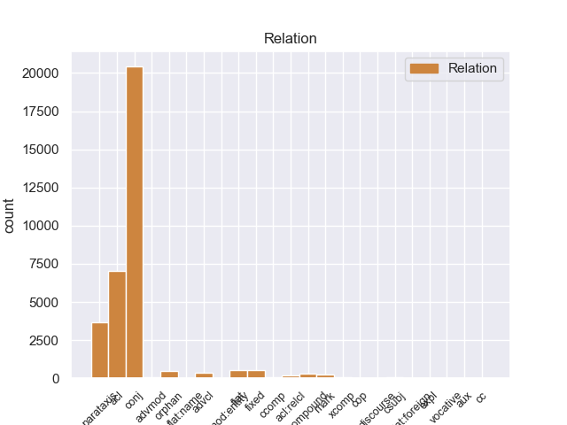
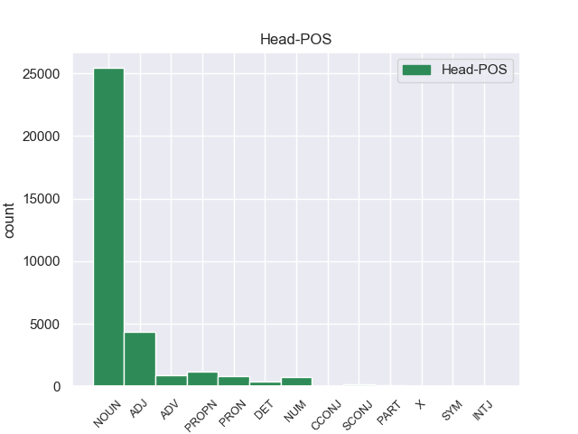
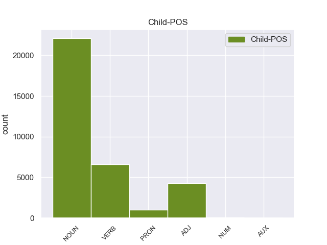

Distribution of features within this leaf



Morphosyntax Rules sorted by frequency.
- When the dependent token is the conjunct(conj) of the head token, and the head token is NOUN and the dependent token is NOUN, the Case needs to be Nom.
1 - _ _ _ _ 0 _ _ _
2 Цветы цветы NOUN _ Animacy=Inan|Case=Nom|Gender=Masc|Number=Plur 0 _ _ _
3 и _ _ _ _ 0 _ _ _
4 трава трава NOUN _ Animacy=Inan|Case=Nom|Gender=Fem|Number=Sing 2 conj 2:conj _
5 своими _ _ _ _ 0 _ _ _
6 корнями _ _ _ _ 0 _ _ _
7 разрушают _ _ _ _ 0 _ _ _
8 дорогу _ _ _ _ 0 _ _ _
9 . _ _ _ _ 0 _ _ _
1 Его _ _ _ _ 0 _ _ _
2 не _ _ _ _ 0 _ _ _
3 защищенные защитить VERB _ Aspect=Perf|Case=Nom|Number=Plur|Tense=Past|VerbForm=Part|Voice=Pass 5 acl 5:acl _
4 очками _ _ _ _ 0 _ _ _
5 глаза глаз NOUN _ Animacy=Inan|Case=Nom|Gender=Masc|Number=Plur 0 _ _ _
6 оказались _ _ _ _ 0 _ _ _
7 в _ _ _ _ 0 _ _ _
8 еле _ _ _ _ 0 _ _ _
9 приметном _ _ _ _ 0 _ _ _
10 красном _ _ _ _ 0 _ _ _
11 обводе _ _ _ _ 0 _ _ _
12 , _ _ _ _ 0 _ _ _
13 будто _ _ _ _ 0 _ _ _
14 кто-то _ _ _ _ 0 _ _ _
15 - _ _ _ _ 0 _ _ _
16 провел _ _ _ _ 0 _ _ _
17 по _ _ _ _ 0 _ _ _
18 векам _ _ _ _ 0 _ _ _
19 тончайшей _ _ _ _ 0 _ _ _
20 кисточкой _ _ _ _ 0 _ _ _
21 . _ _ _ _ 0 _ _ _
1 - _ _ _ _ 0 _ _ _
2 Ты _ _ _ _ 0 _ _ _
3 дурак дурак NOUN _ Animacy=Anim|Case=Nom|Gender=Masc|Number=Sing 0 _ _ _
4 , _ _ _ _ 0 _ _ _
5 папа папа NOUN _ Animacy=Anim|Case=Nom|Gender=Masc|Number=Sing 3 parataxis 3:parataxis SpaceAfter=No
6 , _ _ _ _ 0 _ _ _
7 - _ _ _ _ 0 _ _ _
8 повторил _ _ _ _ 0 _ _ _
9 младший _ _ _ _ 0 _ _ _
10 и _ _ _ _ 0 _ _ _
11 заплакал _ _ _ _ 0 _ _ _
12 . _ _ _ _ 0 _ _ _
1 - _ _ _ _ 0 _ _ _
2 У _ _ _ _ 0 _ _ _
3 него _ _ _ _ 0 _ _ _
4 был _ _ _ _ 0 _ _ _
5 вежливый вежливый ADJ _ Case=Nom|Degree=Pos|Gender=Masc|Number=Sing 0 _ _ _
6 , _ _ _ _ 0 _ _ _
7 мягкий _ _ _ _ 0 _ _ _
8 и _ _ _ _ 0 _ _ _
9 терпеливый терпеливый ADJ _ Case=Nom|Degree=Pos|Gender=Masc|Number=Sing 5 conj 5:conj _
10 голос _ _ _ _ 0 _ _ _
11 . _ _ _ _ 0 _ _ _
1 Я _ _ _ _ 0 _ _ _
2 знал _ _ _ _ 0 _ _ _
3 , _ _ _ _ 0 _ _ _
4 что _ _ _ _ 0 _ _ _
5 есть _ _ _ _ 0 _ _ _
6 и _ _ _ _ 0 _ _ _
7 другие _ _ _ _ 0 _ _ _
8 боги _ _ _ _ 0 _ _ _
9 : _ _ _ _ 0 _ _ _
10 " _ _ _ _ 0 _ _ _
11 Энфильд-Риш Энфильд-Риш PROPN _ _ 0 _ _ _
12 " _ _ _ _ 0 _ _ _
13 , _ _ _ _ 0 _ _ _
14 " _ _ _ _ 0 _ _ _
15 Энфильд-Рояль _ _ _ _ 0 _ _ _
16 " _ _ _ _ 0 _ _ _
17 , _ _ _ _ 0 _ _ _
18 " _ _ _ _ 0 _ _ _
19 Энфильд-Урал _ _ _ _ 0 _ _ _
20 " _ _ _ _ 0 _ _ _
21 , _ _ _ _ 0 _ _ _
22 " _ _ _ _ 0 _ _ _
23 Латвелла _ _ _ _ 0 _ _ _
24 " _ _ _ _ 0 _ _ _
25 , _ _ _ _ 0 _ _ _
26 " _ _ _ _ 0 _ _ _
27 Опель _ _ _ _ 0 _ _ _
28 " _ _ _ _ 0 _ _ _
29 , _ _ _ _ 0 _ _ _
30 " _ _ _ _ 0 _ _ _
31 ВСА вса NOUN _ Animacy=Inan|Case=Nom|Gender=Fem|Number=Sing 11 conj 11:conj SpaceAfter=No
32 " _ _ _ _ 0 _ _ _
33 - _ _ _ _ 0 _ _ _
34 я _ _ _ _ 0 _ _ _
35 произносил _ _ _ _ 0 _ _ _
36 " _ _ _ _ 0 _ _ _
37 Бейса _ _ _ _ 0 _ _ _
38 " _ _ _ _ 0 _ _ _
39 . _ _ _ _ 0 _ _ _
1 А _ _ _ _ 0 _ _ _
2 в _ _ _ _ 0 _ _ _
3 Иркутске _ _ _ _ 0 _ _ _
4 переломилось _ _ _ _ 0 _ _ _
5 не _ _ _ _ 0 _ _ _
6 только _ _ _ _ 0 _ _ _
7 мое _ _ _ _ 0 _ _ _
8 комнатное _ _ _ _ 0 _ _ _
9 существование _ _ _ _ 0 _ _ _
10 - _ _ _ _ 0 _ _ _
11 домашний _ _ _ _ 0 _ _ _
12 зверек _ _ _ _ 0 _ _ _
13 увидел _ _ _ _ 0 _ _ _
14 , _ _ _ _ 0 _ _ _
15 как _ _ _ _ 0 _ _ _
16 огромен _ _ _ _ 0 _ _ _
17 , _ _ _ _ 0 _ _ _
18 многообразен _ _ _ _ 0 _ _ _
19 , _ _ _ _ 0 _ _ _
20 сложен _ _ _ _ 0 _ _ _
21 мир _ _ _ _ 0 _ _ _
22 , _ _ _ _ 0 _ _ _
23 свершился _ _ _ _ 0 _ _ _
24 переход _ _ _ _ 0 _ _ _
25 от _ _ _ _ 0 _ _ _
26 младенческой _ _ _ _ 0 _ _ _
27 всеядности _ _ _ _ 0 _ _ _
28 к _ _ _ _ 0 _ _ _
29 отбору _ _ _ _ 0 _ _ _
30 , _ _ _ _ 0 _ _ _
31 то то PRON _ Animacy=Inan|Case=Nom|Gender=Neut|Number=Sing 34 mark 34:mark _
32 есть _ _ _ _ 0 _ _ _
33 к _ _ _ _ 0 _ _ _
34 характеру характер NOUN _ Animacy=Inan|Case=Dat|Gender=Masc|Number=Sing 0 _ _ _
35 . _ _ _ _ 0 _ _ _
1 Возле _ _ _ _ 0 _ _ _
2 поселка _ _ _ _ 0 _ _ _
3 находился _ _ _ _ 0 _ _ _
4 санаторий _ _ _ _ 0 _ _ _
5 , _ _ _ _ 0 _ _ _
6 там _ _ _ _ 0 _ _ _
7 шло _ _ _ _ 0 _ _ _
8 строительство _ _ _ _ 0 _ _ _
9 и _ _ _ _ 0 _ _ _
10 была _ _ _ _ 0 _ _ _
11 нужда _ _ _ _ 0 _ _ _
12 в _ _ _ _ 0 _ _ _
13 главном _ _ _ _ 0 _ _ _
14 инженере _ _ _ _ 0 _ _ _
15 ; _ _ _ _ 0 _ _ _
16 под _ _ _ _ 0 _ _ _
17 боком _ _ _ _ 0 _ _ _
18 располагалась _ _ _ _ 0 _ _ _
19 отличная _ _ _ _ 0 _ _ _
20 школа школа NOUN _ Animacy=Inan|Case=Nom|Gender=Fem|Number=Sing 0 _ _ _
21 - _ _ _ _ 0 _ _ _
22 десятилетка десятилетка NOUN _ Animacy=Inan|Case=Nom|Gender=Fem|Number=Sing 20 compound 20:compound SpaceAfter=No
23 , _ _ _ _ 0 _ _ _
24 где _ _ _ _ 0 _ _ _
25 как _ _ _ _ 0 _ _ _
26 раз _ _ _ _ 0 _ _ _
27 нужен _ _ _ _ 0 _ _ _
28 был _ _ _ _ 0 _ _ _
29 преподаватель _ _ _ _ 0 _ _ _
30 английского _ _ _ _ 0 _ _ _
31 языка _ _ _ _ 0 _ _ _
32 , _ _ _ _ 0 _ _ _
33 а _ _ _ _ 0 _ _ _
34 жена _ _ _ _ 0 _ _ _
35 Павлова _ _ _ _ 0 _ _ _
36 занималась _ _ _ _ 0 _ _ _
37 техническими _ _ _ _ 0 _ _ _
38 переводами _ _ _ _ 0 _ _ _
39 с _ _ _ _ 0 _ _ _
40 английского _ _ _ _ 0 _ _ _
41 . _ _ _ _ 0 _ _ _
1 Побежденный победить VERB _ Aspect=Perf|Case=Nom|Gender=Masc|Number=Sing|Tense=Past|VerbForm=Part|Voice=Pass 11 acl 11:acl _
2 им _ _ _ _ 0 _ _ _
3 на _ _ _ _ 0 _ _ _
4 моих _ _ _ _ 0 _ _ _
5 глазах _ _ _ _ 0 _ _ _
6 молодой _ _ _ _ 0 _ _ _
7 , _ _ _ _ 0 _ _ _
8 смуглоногий _ _ _ _ 0 _ _ _
9 , _ _ _ _ 0 _ _ _
10 красивый _ _ _ _ 0 _ _ _
11 Батаен Батаен PROPN _ Animacy=Anim|Case=Nom|Gender=Masc|Number=Sing 0 _ _ _
12 , _ _ _ _ 0 _ _ _
13 чья _ _ _ _ 0 _ _ _
14 звезда _ _ _ _ 0 _ _ _
15 только _ _ _ _ 0 _ _ _
16 тогда _ _ _ _ 0 _ _ _
17 всходила _ _ _ _ 0 _ _ _
18 , _ _ _ _ 0 _ _ _
19 уже _ _ _ _ 0 _ _ _
20 через _ _ _ _ 0 _ _ _
21 год _ _ _ _ 0 _ _ _
22 отбросил _ _ _ _ 0 _ _ _
23 Тенненбаума _ _ _ _ 0 _ _ _
24 на _ _ _ _ 0 _ _ _
25 второе _ _ _ _ 0 _ _ _
26 место _ _ _ _ 0 _ _ _
27 . _ _ _ _ 0 _ _ _
1 Мы _ _ _ _ 0 _ _ _
2 обратились _ _ _ _ 0 _ _ _
3 к _ _ _ _ 0 _ _ _
4 918 _ _ _ _ 0 _ _ _
5 работникам _ _ _ _ 0 _ _ _
6 советских _ _ _ _ 0 _ _ _
7 , _ _ _ _ 0 _ _ _
8 партийных _ _ _ _ 0 _ _ _
9 органов _ _ _ _ 0 _ _ _
10 , _ _ _ _ 0 _ _ _
11 творческих _ _ _ _ 0 _ _ _
12 организаций _ _ _ _ 0 _ _ _
13 , _ _ _ _ 0 _ _ _
14 руководителям _ _ _ _ 0 _ _ _
15 трудовых _ _ _ _ 0 _ _ _
16 коллективов _ _ _ _ 0 _ _ _
17 и _ _ _ _ 0 _ _ _
18 общественных _ _ _ _ 0 _ _ _
19 организаций _ _ _ _ 0 _ _ _
20 с _ _ _ _ 0 _ _ _
21 вопросом _ _ _ _ 0 _ _ _
22 , _ _ _ _ 0 _ _ _
23 что _ _ _ _ 0 _ _ _
24 , _ _ _ _ 0 _ _ _
25 на _ _ _ _ 0 _ _ _
26 их _ _ _ _ 0 _ _ _
27 взгляд _ _ _ _ 0 _ _ _
28 , _ _ _ _ 0 _ _ _
29 предпочтительнее предпочтительный ADJ _ Degree=Cmp 0 _ _ _
30 : _ _ _ _ 0 _ _ _
31 - _ _ _ _ 0 _ _ _
32 возможность возможность NOUN _ Animacy=Inan|Case=Nom|Gender=Fem|Number=Sing 29 parataxis 29:parataxis _
33 коллектива _ _ _ _ 0 _ _ _
34 выбрать _ _ _ _ 0 _ _ _
35 депутатом _ _ _ _ 0 _ _ _
36 того _ _ _ _ 0 _ _ _
37 , _ _ _ _ 0 _ _ _
38 кто _ _ _ _ 0 _ _ _
39 обладает _ _ _ _ 0 _ _ _
40 прежде _ _ _ _ 0 _ _ _
41 всего _ _ _ _ 0 _ _ _
42 наилучшими _ _ _ _ 0 _ _ _
43 качествами _ _ _ _ 0 _ _ _
44 для _ _ _ _ 0 _ _ _
45 этого _ _ _ _ 0 _ _ _
46 дела _ _ _ _ 0 _ _ _
47 , _ _ _ _ 0 _ _ _
48 способностью _ _ _ _ 0 _ _ _
49 быть _ _ _ _ 0 _ _ _
50 выразителем _ _ _ _ 0 _ _ _
51 и _ _ _ _ 0 _ _ _
52 проводником _ _ _ _ 0 _ _ _
53 общественных _ _ _ _ 0 _ _ _
54 интересов _ _ _ _ 0 _ _ _
55 ; _ _ _ _ 0 _ _ _
56 - _ _ _ _ 0 _ _ _
57 или _ _ _ _ 0 _ _ _
58 важнее _ _ _ _ 0 _ _ _
59 все-таки _ _ _ _ 0 _ _ _
60 пропорциональное _ _ _ _ 0 _ _ _
61 представительство _ _ _ _ 0 _ _ _
62 в _ _ _ _ 0 _ _ _
63 Совете _ _ _ _ 0 _ _ _
64 половых _ _ _ _ 0 _ _ _
65 , _ _ _ _ 0 _ _ _
66 возрастных _ _ _ _ 0 _ _ _
67 , _ _ _ _ 0 _ _ _
68 профессиональных _ _ _ _ 0 _ _ _
69 , _ _ _ _ 0 _ _ _
70 национальных _ _ _ _ 0 _ _ _
71 и _ _ _ _ 0 _ _ _
72 других _ _ _ _ 0 _ _ _
73 групп _ _ _ _ 0 _ _ _
74 ? _ _ _ _ 0 _ _ _
1 Был _ _ _ _ 0 _ _ _
2 ли _ _ _ _ 0 _ _ _
3 в _ _ _ _ 0 _ _ _
4 яви _ _ _ _ 0 _ _ _
5 или _ _ _ _ 0 _ _ _
6 только _ _ _ _ 0 _ _ _
7 приснился _ _ _ _ 0 _ _ _
8 мне _ _ _ _ 0 _ _ _
9 этот _ _ _ _ 0 _ _ _
10 странный _ _ _ _ 0 _ _ _
11 мальчик мальчик NOUN _ Animacy=Anim|Case=Nom|Gender=Masc|Number=Sing 0 _ _ _
12 , _ _ _ _ 0 _ _ _
13 овеянный _ _ _ _ 0 _ _ _
14 нежностью _ _ _ _ 0 _ _ _
15 и _ _ _ _ 0 _ _ _
16 печалью _ _ _ _ 0 _ _ _
17 нездешности _ _ _ _ 0 _ _ _
18 , _ _ _ _ 0 _ _ _
19 как _ _ _ _ 0 _ _ _
20 Маленький _ _ _ _ 0 _ _ _
21 принц принц NOUN _ Animacy=Anim|Case=Nom|Gender=Masc|Number=Sing 11 acl 11:acl _
22 Антуана _ _ _ _ 0 _ _ _
23 де _ _ _ _ 0 _ _ _
24 Сент-Экзюпери _ _ _ _ 0 _ _ _
25 . _ _ _ _ 0 _ _ _
1 А _ _ _ _ 0 _ _ _
2 затем _ _ _ _ 0 _ _ _
3 сумеречный сумеречный ADJ _ Case=Nom|Degree=Pos|Gender=Masc|Number=Sing 0 _ _ _
4 , _ _ _ _ 0 _ _ _
5 веющий веять VERB _ Aspect=Imp|Case=Nom|Gender=Masc|Number=Sing|Tense=Pres|VerbForm=Part|Voice=Act 3 conj 3:conj _
6 сыростью _ _ _ _ 0 _ _ _
7 и _ _ _ _ 0 _ _ _
8 прелью _ _ _ _ 0 _ _ _
9 ольшаник _ _ _ _ 0 _ _ _
10 и _ _ _ _ 0 _ _ _
11 вовсе _ _ _ _ 0 _ _ _
12 сошел _ _ _ _ 0 _ _ _
13 , _ _ _ _ 0 _ _ _
14 светло _ _ _ _ 0 _ _ _
15 , _ _ _ _ 0 _ _ _
16 молочно _ _ _ _ 0 _ _ _
17 забелели _ _ _ _ 0 _ _ _
18 березы _ _ _ _ 0 _ _ _
19 , _ _ _ _ 0 _ _ _
20 жемчужно _ _ _ _ 0 _ _ _
21 заяснели _ _ _ _ 0 _ _ _
22 осины _ _ _ _ 0 _ _ _
23 , _ _ _ _ 0 _ _ _
24 под _ _ _ _ 0 _ _ _
25 ними _ _ _ _ 0 _ _ _
26 шелково _ _ _ _ 0 _ _ _
27 натянулась _ _ _ _ 0 _ _ _
28 густая _ _ _ _ 0 _ _ _
29 , _ _ _ _ 0 _ _ _
30 низкая _ _ _ _ 0 _ _ _
31 трава _ _ _ _ 0 _ _ _
32 , _ _ _ _ 0 _ _ _
33 задымились _ _ _ _ 0 _ _ _
34 столбы _ _ _ _ 0 _ _ _
35 солнечного _ _ _ _ 0 _ _ _
36 света _ _ _ _ 0 _ _ _
37 , _ _ _ _ 0 _ _ _
38 косо _ _ _ _ 0 _ _ _
39 павшие _ _ _ _ 0 _ _ _
40 на _ _ _ _ 0 _ _ _
41 лес _ _ _ _ 0 _ _ _
42 . _ _ _ _ 0 _ _ _
1 А _ _ _ _ 0 _ _ _
2 затем _ _ _ _ 0 _ _ _
3 сумеречный сумеречный ADJ _ Case=Nom|Degree=Pos|Gender=Masc|Number=Sing 9 acl 9:acl SpaceAfter=No
4 , _ _ _ _ 0 _ _ _
5 веющий _ _ _ _ 0 _ _ _
6 сыростью _ _ _ _ 0 _ _ _
7 и _ _ _ _ 0 _ _ _
8 прелью _ _ _ _ 0 _ _ _
9 ольшаник ольшаник NOUN _ Animacy=Inan|Case=Nom|Gender=Masc|Number=Sing 0 _ _ _
10 и _ _ _ _ 0 _ _ _
11 вовсе _ _ _ _ 0 _ _ _
12 сошел _ _ _ _ 0 _ _ _
13 , _ _ _ _ 0 _ _ _
14 светло _ _ _ _ 0 _ _ _
15 , _ _ _ _ 0 _ _ _
16 молочно _ _ _ _ 0 _ _ _
17 забелели _ _ _ _ 0 _ _ _
18 березы _ _ _ _ 0 _ _ _
19 , _ _ _ _ 0 _ _ _
20 жемчужно _ _ _ _ 0 _ _ _
21 заяснели _ _ _ _ 0 _ _ _
22 осины _ _ _ _ 0 _ _ _
23 , _ _ _ _ 0 _ _ _
24 под _ _ _ _ 0 _ _ _
25 ними _ _ _ _ 0 _ _ _
26 шелково _ _ _ _ 0 _ _ _
27 натянулась _ _ _ _ 0 _ _ _
28 густая _ _ _ _ 0 _ _ _
29 , _ _ _ _ 0 _ _ _
30 низкая _ _ _ _ 0 _ _ _
31 трава _ _ _ _ 0 _ _ _
32 , _ _ _ _ 0 _ _ _
33 задымились _ _ _ _ 0 _ _ _
34 столбы _ _ _ _ 0 _ _ _
35 солнечного _ _ _ _ 0 _ _ _
36 света _ _ _ _ 0 _ _ _
37 , _ _ _ _ 0 _ _ _
38 косо _ _ _ _ 0 _ _ _
39 павшие _ _ _ _ 0 _ _ _
40 на _ _ _ _ 0 _ _ _
41 лес _ _ _ _ 0 _ _ _
42 . _ _ _ _ 0 _ _ _
1 Я _ _ _ _ 0 _ _ _
2 посмотрел _ _ _ _ 0 _ _ _
3 на _ _ _ _ 0 _ _ _
4 березу _ _ _ _ 0 _ _ _
5 , _ _ _ _ 0 _ _ _
6 которую _ _ _ _ 0 _ _ _
7 видел _ _ _ _ 0 _ _ _
8 не _ _ _ _ 0 _ _ _
9 раз _ _ _ _ 0 _ _ _
10 , _ _ _ _ 0 _ _ _
11 - _ _ _ _ 0 _ _ _
12 что-то _ _ _ _ 0 _ _ _
13 сжалось _ _ _ _ 0 _ _ _
14 во _ _ _ _ 0 _ _ _
15 мне _ _ _ _ 0 _ _ _
16 , _ _ _ _ 0 _ _ _
17 распахнулось _ _ _ _ 0 _ _ _
18 , _ _ _ _ 0 _ _ _
19 и _ _ _ _ 0 _ _ _
20 я _ _ _ _ 0 _ _ _
21 вдруг _ _ _ _ 0 _ _ _
22 всем _ _ _ _ 0 _ _ _
23 существом _ _ _ _ 0 _ _ _
24 своим _ _ _ _ 0 _ _ _
25 понял _ _ _ _ 0 _ _ _
26 , _ _ _ _ 0 _ _ _
27 как _ _ _ _ 0 _ _ _
28 прекрасно прекрасный ADJ _ Degree=Pos|Gender=Neut|Number=Sing|Variant=Short 0 _ _ _
29 дерево _ _ _ _ 0 _ _ _
30 , _ _ _ _ 0 _ _ _
31 прекрасней _ _ _ _ 0 _ _ _
32 всего _ _ _ _ 0 _ _ _
33 , _ _ _ _ 0 _ _ _
34 что _ _ _ _ 0 _ _ _
35 есть _ _ _ _ 0 _ _ _
36 на _ _ _ _ 0 _ _ _
37 земле _ _ _ _ 0 _ _ _
38 , _ _ _ _ 0 _ _ _
39 целый _ _ _ _ 0 _ _ _
40 мир мир NOUN _ Animacy=Inan|Case=Nom|Gender=Masc|Number=Sing 28 conj 28:conj SpaceAfter=No
41 , _ _ _ _ 0 _ _ _
42 который _ _ _ _ 0 _ _ _
43 никогда _ _ _ _ 0 _ _ _
44 не _ _ _ _ 0 _ _ _
45 изменит _ _ _ _ 0 _ _ _
46 , _ _ _ _ 0 _ _ _
47 не _ _ _ _ 0 _ _ _
48 обманет _ _ _ _ 0 _ _ _
49 , _ _ _ _ 0 _ _ _
50 выручит _ _ _ _ 0 _ _ _
51 , _ _ _ _ 0 _ _ _
52 поднимет _ _ _ _ 0 _ _ _
53 , _ _ _ _ 0 _ _ _
54 спасет _ _ _ _ 0 _ _ _
55 . _ _ _ _ 0 _ _ _
1 Я _ _ _ _ 0 _ _ _
2 хорошо _ _ _ _ 0 _ _ _
3 знал _ _ _ _ 0 _ _ _
4 окрестность окрестность NOUN _ Animacy=Inan|Case=Acc|Gender=Fem|Number=Sing 0 _ _ _
5 : _ _ _ _ 0 _ _ _
6 и _ _ _ _ 0 _ _ _
7 со _ _ _ _ 0 _ _ _
8 стороны _ _ _ _ 0 _ _ _
9 Дмитровского _ _ _ _ 0 _ _ _
10 шоссе _ _ _ _ 0 _ _ _
11 , _ _ _ _ 0 _ _ _
12 и _ _ _ _ 0 _ _ _
13 со _ _ _ _ 0 _ _ _
14 стороны _ _ _ _ 0 _ _ _
15 нашей _ _ _ _ 0 _ _ _
16 дачи _ _ _ _ 0 _ _ _
17 , _ _ _ _ 0 _ _ _
18 и _ _ _ _ 0 _ _ _
19 со _ _ _ _ 0 _ _ _
20 стороны _ _ _ _ 0 _ _ _
21 кочкастого _ _ _ _ 0 _ _ _
22 болота _ _ _ _ 0 _ _ _
23 , _ _ _ _ 0 _ _ _
24 тянущегося _ _ _ _ 0 _ _ _
25 за _ _ _ _ 0 _ _ _
26 горизонт _ _ _ _ 0 _ _ _
27 , _ _ _ _ 0 _ _ _
28 лесные _ _ _ _ 0 _ _ _
29 опушки _ _ _ _ 0 _ _ _
30 были _ _ _ _ 0 _ _ _
31 сплошь _ _ _ _ 0 _ _ _
32 ольховые ольховый ADJ _ Case=Nom|Degree=Pos|Number=Plur 4 parataxis 4:parataxis SpaceAfter=No
33 . _ _ _ _ 0 _ _ _
1 Я _ _ _ _ 0 _ _ _
2 купался _ _ _ _ 0 _ _ _
3 в _ _ _ _ 0 _ _ _
4 ее _ _ _ _ 0 _ _ _
5 быстрой _ _ _ _ 0 _ _ _
6 и _ _ _ _ 0 _ _ _
7 довольно _ _ _ _ 0 _ _ _
8 теплой _ _ _ _ 0 _ _ _
9 воде _ _ _ _ 0 _ _ _
10 , _ _ _ _ 0 _ _ _
11 я _ _ _ _ 0 _ _ _
12 плавал _ _ _ _ 0 _ _ _
13 в _ _ _ _ 0 _ _ _
14 ней _ _ _ _ 0 _ _ _
15 , _ _ _ _ 0 _ _ _
16 и _ _ _ _ 0 _ _ _
17 это _ _ _ _ 0 _ _ _
18 было _ _ _ _ 0 _ _ _
19 прекрасно прекрасно ADV _ Degree=Pos 0 _ _ _
20 , _ _ _ _ 0 _ _ _
21 как _ _ _ _ 0 _ _ _
22 полет полет NOUN _ Animacy=Inan|Case=Nom|Gender=Masc|Number=Sing 19 advcl 19:advcl _
23 во _ _ _ _ 0 _ _ _
24 сне _ _ _ _ 0 _ _ _
25 . _ _ _ _ 0 _ _ _
1 Проблема _ _ _ _ 0 _ _ _
2 национальных _ _ _ _ 0 _ _ _
3 языков _ _ _ _ 0 _ _ _
4 в _ _ _ _ 0 _ _ _
5 том _ _ _ _ 0 _ _ _
6 виде _ _ _ _ 0 _ _ _
7 , _ _ _ _ 0 _ _ _
8 в _ _ _ _ 0 _ _ _
9 каком _ _ _ _ 0 _ _ _
10 она _ _ _ _ 0 _ _ _
11 предстала _ _ _ _ 0 _ _ _
12 сегодня _ _ _ _ 0 _ _ _
13 , _ _ _ _ 0 _ _ _
14 вовсе _ _ _ _ 0 _ _ _
15 не _ _ _ _ 0 _ _ _
16 лингвистическая _ _ _ _ 0 _ _ _
17 проблема проблема NOUN _ Animacy=Inan|Case=Nom|Gender=Fem|Number=Sing 0 _ _ _
18 , _ _ _ _ 0 _ _ _
19 как _ _ _ _ 0 _ _ _
20 это _ _ _ _ 0 _ _ _
21 иным _ _ _ _ 0 _ _ _
22 кажется _ _ _ _ 0 _ _ _
23 , _ _ _ _ 0 _ _ _
24 а _ _ _ _ 0 _ _ _
25 гуманистическая _ _ _ _ 0 _ _ _
26 и _ _ _ _ 0 _ _ _
27 уж _ _ _ _ 0 _ _ _
28 наверняка _ _ _ _ 0 _ _ _
29 насущнейшая насущный ADJ _ Case=Nom|Degree=Sup|Gender=Fem|Number=Sing 17 conj 17:conj _
30 для _ _ _ _ 0 _ _ _
31 нашей _ _ _ _ 0 _ _ _
32 демократизации _ _ _ _ 0 _ _ _
33 . _ _ _ _ 0 _ _ _
1 Проект _ _ _ _ 0 _ _ _
2 предусматривает _ _ _ _ 0 _ _ _
3 , _ _ _ _ 0 _ _ _
4 что _ _ _ _ 0 _ _ _
5 использование _ _ _ _ 0 _ _ _
6 в _ _ _ _ 0 _ _ _
7 делопроизводстве _ _ _ _ 0 _ _ _
8 русского _ _ _ _ 0 _ _ _
9 языка _ _ _ _ 0 _ _ _
10 на _ _ _ _ 0 _ _ _
11 предприятиях _ _ _ _ 0 _ _ _
12 , _ _ _ _ 0 _ _ _
13 в _ _ _ _ 0 _ _ _
14 учреждениях _ _ _ _ 0 _ _ _
15 и _ _ _ _ 0 _ _ _
16 организациях _ _ _ _ 0 _ _ _
17 допускается _ _ _ _ 0 _ _ _
18 только _ _ _ _ 0 _ _ _
19 по _ _ _ _ 0 _ _ _
20 их _ _ _ _ 0 _ _ _
21 ходатайству _ _ _ _ 0 _ _ _
22 на _ _ _ _ 0 _ _ _
23 определенный _ _ _ _ 0 _ _ _
24 срок _ _ _ _ 0 _ _ _
25 после _ _ _ _ 0 _ _ _
26 соответствующего _ _ _ _ 0 _ _ _
27 согласования _ _ _ _ 0 _ _ _
28 в _ _ _ _ 0 _ _ _
29 порядке _ _ _ _ 0 _ _ _
30 , _ _ _ _ 0 _ _ _
31 установленном _ _ _ _ 0 _ _ _
32 Президиумом _ _ _ _ 0 _ _ _
33 Верховного _ _ _ _ 0 _ _ _
34 Совета _ _ _ _ 0 _ _ _
35 Эстонской _ _ _ _ 0 _ _ _
36 ССР ССР PROPN _ Animacy=Inan|Case=Gen|Gender=Fem|Number=Sing 0 _ _ _
37 ( _ _ _ _ 0 _ _ _
38 часть часть NOUN _ Animacy=Inan|Case=Nom|Gender=Fem|Number=Sing 36 parataxis 36:parataxis _
39 2 _ _ _ _ 0 _ _ _
40 статьи _ _ _ _ 0 _ _ _
41 12 _ _ _ _ 0 _ _ _
42 ) _ _ _ _ 0 _ _ _
43 . _ _ _ _ 0 _ _ _
1 Экономические _ _ _ _ 0 _ _ _
2 и _ _ _ _ 0 _ _ _
3 военные _ _ _ _ 0 _ _ _
4 победы _ _ _ _ 0 _ _ _
5 породили _ _ _ _ 0 _ _ _
6 уверенность _ _ _ _ 0 _ _ _
7 в _ _ _ _ 0 _ _ _
8 том то PRON _ Animacy=Inan|Case=Loc|Gender=Neut|Number=Sing 0 _ _ _
9 , _ _ _ _ 0 _ _ _
10 что _ _ _ _ 0 _ _ _
11 командные _ _ _ _ 0 _ _ _
12 методы _ _ _ _ 0 _ _ _
13 управления _ _ _ _ 0 _ _ _
14 - _ _ _ _ 0 _ _ _
15 верный _ _ _ _ 0 _ _ _
16 ключ ключ NOUN _ Animacy=Inan|Case=Nom|Gender=Masc|Number=Sing 8 acl 8:acl _
17 к _ _ _ _ 0 _ _ _
18 решению _ _ _ _ 0 _ _ _
19 любых _ _ _ _ 0 _ _ _
20 проблем _ _ _ _ 0 _ _ _
21 , _ _ _ _ 0 _ _ _
22 что _ _ _ _ 0 _ _ _
23 энтузиазм _ _ _ _ 0 _ _ _
24 и _ _ _ _ 0 _ _ _
25 самоотверженность _ _ _ _ 0 _ _ _
26 советских _ _ _ _ 0 _ _ _
27 людей _ _ _ _ 0 _ _ _
28 , _ _ _ _ 0 _ _ _
29 ярко _ _ _ _ 0 _ _ _
30 проявившиеся _ _ _ _ 0 _ _ _
31 и _ _ _ _ 0 _ _ _
32 в _ _ _ _ 0 _ _ _
33 период _ _ _ _ 0 _ _ _
34 индустриализации _ _ _ _ 0 _ _ _
35 , _ _ _ _ 0 _ _ _
36 и _ _ _ _ 0 _ _ _
37 во _ _ _ _ 0 _ _ _
38 время _ _ _ _ 0 _ _ _
39 войны _ _ _ _ 0 _ _ _
40 , _ _ _ _ 0 _ _ _
41 можно _ _ _ _ 0 _ _ _
42 поддерживать _ _ _ _ 0 _ _ _
43 на _ _ _ _ 0 _ _ _
44 том _ _ _ _ 0 _ _ _
45 же _ _ _ _ 0 _ _ _
46 уровне _ _ _ _ 0 _ _ _
47 лозунгами _ _ _ _ 0 _ _ _
48 и _ _ _ _ 0 _ _ _
49 призывами _ _ _ _ 0 _ _ _
50 . _ _ _ _ 0 _ _ _
1 Верно _ _ _ _ 0 _ _ _
2 , _ _ _ _ 0 _ _ _
3 по _ _ _ _ 0 _ _ _
4 той _ _ _ _ 0 _ _ _
5 же _ _ _ _ 0 _ _ _
6 причине _ _ _ _ 0 _ _ _
7 звучали _ _ _ _ 0 _ _ _
8 тут _ _ _ _ 0 _ _ _
9 так _ _ _ _ 0 _ _ _
10 ясно _ _ _ _ 0 _ _ _
11 , _ _ _ _ 0 _ _ _
12 открыто _ _ _ _ 0 _ _ _
13 непуганые _ _ _ _ 0 _ _ _
14 голоса _ _ _ _ 0 _ _ _
15 ушедших _ _ _ _ 0 _ _ _
16 ; _ _ _ _ 0 _ _ _
17 я _ _ _ _ 0 _ _ _
18 слышал _ _ _ _ 0 _ _ _
19 голос _ _ _ _ 0 _ _ _
20 деда _ _ _ _ 0 _ _ _
21 и _ _ _ _ 0 _ _ _
22 голос _ _ _ _ 0 _ _ _
23 своего _ _ _ _ 0 _ _ _
24 отца _ _ _ _ 0 _ _ _
25 , _ _ _ _ 0 _ _ _
26 и _ _ _ _ 0 _ _ _
27 слепые _ _ _ _ 0 _ _ _
28 дети _ _ _ _ 0 _ _ _
29 закричали _ _ _ _ 0 _ _ _
30 жалостно _ _ _ _ 0 _ _ _
31 : _ _ _ _ 0 _ _ _
32 " _ _ _ _ 0 _ _ _
When the dependent token is the conjunct(conj) of the head token, and the head token is PRON and the dependent token is NOUN, the Case needs to be Nom.
1 Но _ _ _ _ 0 _ _ _
2 почему _ _ _ _ 0 _ _ _
3 ни _ _ _ _ 0 _ _ _
4 сам _ _ _ _ 0 _ _ _
5 он он PRON _ Case=Nom|Gender=Masc|Number=Sing|Person=3 0 _ _ _
6 , _ _ _ _ 0 _ _ _
7 ни _ _ _ _ 0 _ _ _
8 жена жена NOUN _ Animacy=Anim|Case=Nom|Gender=Fem|Number=Sing 5 conj 5:conj _
9 не _ _ _ _ 0 _ _ _
10 смогли _ _ _ _ 0 _ _ _
11 подняться _ _ _ _ 0 _ _ _
12 до _ _ _ _ 0 _ _ _
13 простой _ _ _ _ 0 _ _ _
14 веры _ _ _ _ 0 _ _ _
15 в _ _ _ _ 0 _ _ _
16 чудо _ _ _ _ 0 _ _ _
17 , _ _ _ _ 0 _ _ _
18 открывшееся _ _ _ _ 0 _ _ _
19 их _ _ _ _ 0 _ _ _
20 детям _ _ _ _ 0 _ _ _
21 ? _ _ _ _ 0 _ _ _
When the dependent token is the fixed multiword expression(fixed) of the head token, and the head token is PRON and the dependent token is ADJ, the Case needs to be Nom.
1 Страны _ _ _ _ 0 _ _ _
2 социализма _ _ _ _ 0 _ _ _
3 уже _ _ _ _ 0 _ _ _
4 стали _ _ _ _ 0 _ _ _
5 неотъемлемой _ _ _ _ 0 _ _ _
6 составной _ _ _ _ 0 _ _ _
7 частью _ _ _ _ 0 _ _ _
8 мировой _ _ _ _ 0 _ _ _
9 цивилизации _ _ _ _ 0 _ _ _
10 , _ _ _ _ 0 _ _ _
11 все _ _ _ _ 0 _ _ _
12 более _ _ _ _ 0 _ _ _
13 активно _ _ _ _ 0 _ _ _
14 воздействующей _ _ _ _ 0 _ _ _
15 на _ _ _ _ 0 _ _ _
16 историческое _ _ _ _ 0 _ _ _
17 развитие _ _ _ _ 0 _ _ _
18 остальных _ _ _ _ 0 _ _ _
19 стран _ _ _ _ 0 _ _ _
20 , _ _ _ _ 0 _ _ _
21 но _ _ _ _ 0 _ _ _
22 они _ _ _ _ 0 _ _ _
23 еще _ _ _ _ 0 _ _ _
24 не _ _ _ _ 0 _ _ _
25 превзошли _ _ _ _ 0 _ _ _
26 капитализм _ _ _ _ 0 _ _ _
27 в _ _ _ _ 0 _ _ _
28 экономическом _ _ _ _ 0 _ _ _
29 отношении _ _ _ _ 0 _ _ _
30 ( _ _ _ _ 0 _ _ _
31 производительность _ _ _ _ 0 _ _ _
32 общественного _ _ _ _ 0 _ _ _
33 труда _ _ _ _ 0 _ _ _
34 , _ _ _ _ 0 _ _ _
35 новейшая _ _ _ _ 0 _ _ _
36 технология _ _ _ _ 0 _ _ _
37 и _ _ _ _ 0 _ _ _
38 т. то PRON _ Animacy=Inan|Case=Dat|Gender=Neut|Number=Sing 0 _ _ _
39 п подобный ADJ _ Case=Nom|Degree=Pos|Gender=Neut|Number=Sing 38 fixed 38:fixed SpaceAfter=No
40 ) _ _ _ _ 0 _ _ _
41 . _ _ _ _ 0 _ _ _
When the dependent token is the adverbial clause modifier(advcl) of the head token, and the head token is ADJ and the dependent token is NOUN, the Case needs to be Nom.
1 Концепция _ _ _ _ 0 _ _ _
2 единого _ _ _ _ 0 _ _ _
3 молодежного _ _ _ _ 0 _ _ _
4 союза _ _ _ _ 0 _ _ _
5 с _ _ _ _ 0 _ _ _
6 точки _ _ _ _ 0 _ _ _
7 зрения _ _ _ _ 0 _ _ _
8 его _ _ _ _ 0 _ _ _
9 реального _ _ _ _ 0 _ _ _
10 политического _ _ _ _ 0 _ _ _
11 влияния _ _ _ _ 0 _ _ _
12 значительно _ _ _ _ 0 _ _ _
13 весомее весомый ADJ _ Degree=Cmp 0 _ _ _
14 , _ _ _ _ 0 _ _ _
15 чем _ _ _ _ 0 _ _ _
16 , _ _ _ _ 0 _ _ _
17 скажем _ _ _ _ 0 _ _ _
18 , _ _ _ _ 0 _ _ _
19 концепция концепция NOUN _ Animacy=Inan|Case=Nom|Gender=Fem|Number=Sing 13 advcl 13:advcl _
20 предлагаемого _ _ _ _ 0 _ _ _
21 федеративного _ _ _ _ 0 _ _ _
22 принципа _ _ _ _ 0 _ _ _
23 объединения _ _ _ _ 0 _ _ _
24 по _ _ _ _ 0 _ _ _
25 категориям _ _ _ _ 0 _ _ _
26 молодежи _ _ _ _ 0 _ _ _
27 . _ _ _ _ 0 _ _ _
When the dependent token is the conjunct(conj) of the head token, and the head token is PRON and the dependent token is PRON, the Case needs to be Nom.
1 Не _ _ _ _ 0 _ _ _
2 только _ _ _ _ 0 _ _ _
3 то то PRON _ Animacy=Inan|Case=Nom|Gender=Neut|Number=Sing 0 _ _ _
4 , _ _ _ _ 0 _ _ _
5 что _ _ _ _ 0 _ _ _
6 летает _ _ _ _ 0 _ _ _
7 , _ _ _ _ 0 _ _ _
8 но _ _ _ _ 0 _ _ _
9 и _ _ _ _ 0 _ _ _
10 все все PRON _ Animacy=Inan|Case=Nom|Gender=Neut|Number=Sing 3 conj 3:conj SpaceAfter=No
11 , _ _ _ _ 0 _ _ _
12 что _ _ _ _ 0 _ _ _
13 движется _ _ _ _ 0 _ _ _
14 , _ _ _ _ 0 _ _ _
15 должно _ _ _ _ 0 _ _ _
16 быть _ _ _ _ 0 _ _ _
17 легким _ _ _ _ 0 _ _ _
18 , _ _ _ _ 0 _ _ _
19 нержавеющим _ _ _ _ 0 _ _ _
20 , _ _ _ _ 0 _ _ _
21 экономичным _ _ _ _ 0 _ _ _
22 и _ _ _ _ 0 _ _ _
23 обходиться _ _ _ _ 0 _ _ _
24 без _ _ _ _ 0 _ _ _
25 ремонта _ _ _ _ 0 _ _ _
26 тысячи _ _ _ _ 0 _ _ _
27 и _ _ _ _ 0 _ _ _
28 десятки _ _ _ _ 0 _ _ _
29 тысяч _ _ _ _ 0 _ _ _
30 часов _ _ _ _ 0 _ _ _
31 . _ _ _ _ 0 _ _ _
When the dependent token is the adjectival clause(acl) of the head token, and the head token is PRON and the dependent token is VERB, the Case needs to be Nom.
1 Грибов _ _ _ _ 0 _ _ _
2 вскоре _ _ _ _ 0 _ _ _
3 стало _ _ _ _ 0 _ _ _
4 куда _ _ _ _ 0 _ _ _
5 меньше _ _ _ _ 0 _ _ _
6 , _ _ _ _ 0 _ _ _
7 затем _ _ _ _ 0 _ _ _
8 они _ _ _ _ 0 _ _ _
9 вовсе _ _ _ _ 0 _ _ _
10 исчезли _ _ _ _ 0 _ _ _
11 , _ _ _ _ 0 _ _ _
12 но _ _ _ _ 0 _ _ _
13 я я PRON _ Case=Nom|Number=Sing|Person=1 0 _ _ _
14 не _ _ _ _ 0 _ _ _
15 жалел _ _ _ _ 0 _ _ _
16 об _ _ _ _ 0 _ _ _
17 этом _ _ _ _ 0 _ _ _
18 , _ _ _ _ 0 _ _ _
19 пресыщенный пресытить VERB _ Aspect=Perf|Case=Nom|Gender=Masc|Number=Sing|Tense=Past|VerbForm=Part|Voice=Pass 13 acl 13:acl _
20 чрезмерностью _ _ _ _ 0 _ _ _
21 удачи _ _ _ _ 0 _ _ _
22 . _ _ _ _ 0 _ _ _
When the dependent token is the conjunct(conj) of the head token, and the head token is DET and the dependent token is ADJ, the Case needs to be Nom.
1 Действует _ _ _ _ 0 _ _ _
2 принцип _ _ _ _ 0 _ _ _
3 : _ _ _ _ 0 _ _ _
4 " _ _ _ _ 0 _ _ _
5 свой свой DET _ Case=Nom|Gender=Masc|Number=Sing 0 _ _ _
6 - _ _ _ _ 0 _ _ _
7 чужой чужой ADJ _ Case=Nom|Degree=Pos|Gender=Masc|Number=Sing 5 conj 5:conj SpaceAfter=No
8 " _ _ _ _ 0 _ _ _
9 , _ _ _ _ 0 _ _ _
10 ведь _ _ _ _ 0 _ _ _
11 яркий _ _ _ _ 0 _ _ _
12 , _ _ _ _ 0 _ _ _
13 талантливый _ _ _ _ 0 _ _ _
14 человек _ _ _ _ 0 _ _ _
15 может _ _ _ _ 0 _ _ _
16 сломать _ _ _ _ 0 _ _ _
17 сложившийся _ _ _ _ 0 _ _ _
18 порядок _ _ _ _ 0 _ _ _
19 вещей _ _ _ _ 0 _ _ _
20 , _ _ _ _ 0 _ _ _
21 потому _ _ _ _ 0 _ _ _
22 - _ _ _ _ 0 _ _ _
23 то _ _ _ _ 0 _ _ _
24 " _ _ _ _ 0 _ _ _
25 чужаки _ _ _ _ 0 _ _ _
26 " _ _ _ _ 0 _ _ _
27 и _ _ _ _ 0 _ _ _
28 не _ _ _ _ 0 _ _ _
29 проходят _ _ _ _ 0 _ _ _
30 . _ _ _ _ 0 _ _ _
When the dependent token is the parataxis(parataxis) of the head token, and the head token is ADV and the dependent token is NOUN, the Case needs to be Nom.
1 А _ _ _ _ 0 _ _ _
2 вам _ _ _ _ 0 _ _ _
3 что _ _ _ _ 0 _ _ _
4 надо надо ADV _ Degree=Pos 0 _ _ _
5 , _ _ _ _ 0 _ _ _
6 мамаша мамаша NOUN _ Animacy=Anim|Case=Nom|Gender=Fem|Number=Sing 4 parataxis 4:parataxis SpaceAfter=No
7 ? _ _ _ _ 0 _ _ _
When the dependent token is the fixed multiword expression(fixed) of the head token, and the head token is CCONJ and the dependent token is PRON, the Case needs to be Nom.
1 Случалось _ _ _ _ 0 _ _ _
2 , _ _ _ _ 0 _ _ _
3 он _ _ _ _ 0 _ _ _
4 оповещал _ _ _ _ 0 _ _ _
5 о _ _ _ _ 0 _ _ _
6 себе _ _ _ _ 0 _ _ _
7 лишь _ _ _ _ 0 _ _ _
8 бугорком _ _ _ _ 0 _ _ _
9 , _ _ _ _ 0 _ _ _
10 малым _ _ _ _ 0 _ _ _
11 вздутием _ _ _ _ 0 _ _ _
12 под _ _ _ _ 0 _ _ _
13 мертвыми _ _ _ _ 0 _ _ _
14 , _ _ _ _ 0 _ _ _
15 палыми _ _ _ _ 0 _ _ _
16 иглами _ _ _ _ 0 _ _ _
17 , _ _ _ _ 0 _ _ _
18 и _ _ _ _ 0 _ _ _
19 приходилось _ _ _ _ 0 _ _ _
20 осторожно _ _ _ _ 0 _ _ _
21 разгребать _ _ _ _ 0 _ _ _
22 их _ _ _ _ 0 _ _ _
23 , _ _ _ _ 0 _ _ _
24 чтобы _ _ _ _ 0 _ _ _
25 докопаться _ _ _ _ 0 _ _ _
26 до _ _ _ _ 0 _ _ _
27 гриба _ _ _ _ 0 _ _ _
28 , _ _ _ _ 0 _ _ _
29 а а CCONJ _ _ 0 _ _ _
30 то то PRON _ Animacy=Inan|Case=Nom|Gender=Neut|Number=Sing 29 fixed 29:fixed _
31 и _ _ _ _ 0 _ _ _
32 до _ _ _ _ 0 _ _ _
33 целой _ _ _ _ 0 _ _ _
34 грибной _ _ _ _ 0 _ _ _
35 семейки _ _ _ _ 0 _ _ _
36 . _ _ _ _ 0 _ _ _
When the dependent token is the conjunct(conj) of the head token, and the head token is ADV and the dependent token is NOUN, the Case needs to be Nom.
1 Очень _ _ _ _ 0 _ _ _
2 даже _ _ _ _ 0 _ _ _
3 причем причем ADV _ Degree=Pos 0 _ _ _
4 , _ _ _ _ 0 _ _ _
5 именно _ _ _ _ 0 _ _ _
6 история история NOUN _ Animacy=Inan|Case=Nom|Gender=Fem|Number=Sing 3 conj 3:conj SpaceAfter=No
7 . _ _ _ _ 0 _ _ _
When the dependent token is the relative clause modifier(acl:relcl) of the head token, and the head token is NOUN and the dependent token is NOUN, the Case needs to be Nom.
1 Вот _ _ _ _ 0 _ _ _
2 пересказ _ _ _ _ 0 _ _ _
3 " _ _ _ _ 0 _ _ _
4 сценария сценарий NOUN _ Animacy=Inan|Case=Gen|Gender=Masc|Number=Sing 0 _ _ _
5 " _ _ _ _ 0 _ _ _
6 , _ _ _ _ 0 _ _ _
7 в _ _ _ _ 0 _ _ _
8 котором _ _ _ _ 0 _ _ _
9 главное _ _ _ _ 0 _ _ _
10 действующее _ _ _ _ 0 _ _ _
11 лицо лицо NOUN _ Animacy=Anim|Case=Nom|Gender=Neut|Number=Sing 4 acl:relcl 4:acl:relcl _
12 - _ _ _ _ 0 _ _ _
13 валиномицин _ _ _ _ 0 _ _ _
14 . _ _ _ _ 0 _ _ _
When the dependent token is the conjunct(conj) of the head token, and the head token is NOUN and the dependent token is PRON, the Case needs to be Nom.
1 Мы _ _ _ _ 0 _ _ _
2 - _ _ _ _ 0 _ _ _
3 мама мама NOUN _ Animacy=Anim|Case=Nom|Gender=Fem|Number=Sing 0 _ _ _
4 , _ _ _ _ 0 _ _ _
5 дед _ _ _ _ 0 _ _ _
6 и _ _ _ _ 0 _ _ _
7 я я PRON _ Case=Nom|Number=Sing|Person=1 3 conj 3:conj _
8 - _ _ _ _ 0 _ _ _
9 довольно _ _ _ _ 0 _ _ _
10 долго _ _ _ _ 0 _ _ _
11 томились _ _ _ _ 0 _ _ _
12 перед _ _ _ _ 0 _ _ _
13 высокими _ _ _ _ 0 _ _ _
14 стенами _ _ _ _ 0 _ _ _
15 тюрьмы _ _ _ _ 0 _ _ _
16 , _ _ _ _ 0 _ _ _
17 затем _ _ _ _ 0 _ _ _
18 нас _ _ _ _ 0 _ _ _
19 впустили _ _ _ _ 0 _ _ _
20 во _ _ _ _ 0 _ _ _
21 внутренний _ _ _ _ 0 _ _ _
22 двор _ _ _ _ 0 _ _ _
23 , _ _ _ _ 0 _ _ _
24 битком _ _ _ _ 0 _ _ _
25 набитый _ _ _ _ 0 _ _ _
26 такими _ _ _ _ 0 _ _ _
27 же _ _ _ _ 0 _ _ _
28 как _ _ _ _ 0 _ _ _
29 и _ _ _ _ 0 _ _ _
30 мы _ _ _ _ 0 _ _ _
31 , _ _ _ _ 0 _ _ _
32 прощающимися _ _ _ _ 0 _ _ _
33 . _ _ _ _ 0 _ _ _
When the dependent token is the fixed multiword expression(fixed) of the head token, and the head token is ADV and the dependent token is PRON, the Case needs to be Nom.
1 Птицы _ _ _ _ 0 _ _ _
2 вели _ _ _ _ 0 _ _ _
3 себя _ _ _ _ 0 _ _ _
4 бесстрашно _ _ _ _ 0 _ _ _
5 , _ _ _ _ 0 _ _ _
6 потому _ _ _ _ 0 _ _ _
7 что _ _ _ _ 0 _ _ _
8 в _ _ _ _ 0 _ _ _
9 эту _ _ _ _ 0 _ _ _
10 лесную _ _ _ _ 0 _ _ _
11 глухомань _ _ _ _ 0 _ _ _
12 редко редко ADV _ Degree=Pos 0 _ _ _
13 кто кто PRON _ Case=Nom 12 fixed 12:fixed _
14 забредал _ _ _ _ 0 _ _ _
15 . _ _ _ _ 0 _ _ _
When the dependent token is the parataxis(parataxis) of the head token, and the head token is ADJ and the dependent token is ADJ, the Case needs to be Nom.
1 Это _ _ _ _ 0 _ _ _
2 была _ _ _ _ 0 _ _ _
3 трудная _ _ _ _ 0 _ _ _
4 любовь _ _ _ _ 0 _ _ _
5 , _ _ _ _ 0 _ _ _
6 но _ _ _ _ 0 _ _ _
7 была _ _ _ _ 0 _ _ _
8 и _ _ _ _ 0 _ _ _
9 другая другой ADJ _ Case=Nom|Degree=Pos|Gender=Fem|Number=Sing 0 _ _ _
10 - _ _ _ _ 0 _ _ _
11 нежная нежный ADJ _ Case=Nom|Degree=Pos|Gender=Fem|Number=Sing 9 parataxis 9:parataxis SpaceAfter=No
12 , _ _ _ _ 0 _ _ _
13 легкая _ _ _ _ 0 _ _ _
14 , _ _ _ _ 0 _ _ _
15 радостная _ _ _ _ 0 _ _ _
16 . _ _ _ _ 0 _ _ _
When the dependent token is the clausal complement(ccomp) of the head token, and the head token is ADJ and the dependent token is NOUN, the Case needs to be Nom.
1 Ведь _ _ _ _ 0 _ _ _
2 очевидно очевидный ADJ _ Degree=Pos|Gender=Neut|Number=Sing|Variant=Short 0 _ _ _
3 , _ _ _ _ 0 _ _ _
4 что _ _ _ _ 0 _ _ _
5 многовариантность _ _ _ _ 0 _ _ _
6 капиталистического _ _ _ _ 0 _ _ _
7 и _ _ _ _ 0 _ _ _
8 социалистического _ _ _ _ 0 _ _ _
9 развития _ _ _ _ 0 _ _ _
10 не _ _ _ _ 0 _ _ _
11 просто _ _ _ _ 0 _ _ _
12 факт факт NOUN _ Animacy=Inan|Case=Nom|Gender=Masc|Number=Sing 2 ccomp 2:ccomp SpaceAfter=No
13 . _ _ _ _ 0 _ _ _
When the dependent token is the conjunct(conj) of the head token, and the head token is PROPN and the dependent token is ADJ, the Case needs to be Nom.
1 Но _ _ _ _ 0 _ _ _
2 на _ _ _ _ 0 _ _ _
3 смену _ _ _ _ 0 _ _ _
4 отвергнутым _ _ _ _ 0 _ _ _
5 энергично _ _ _ _ 0 _ _ _
6 продвигаются _ _ _ _ 0 _ _ _
7 новые _ _ _ _ 0 _ _ _
8 проекты _ _ _ _ 0 _ _ _
9 : _ _ _ _ 0 _ _ _
10 Средне _ _ _ _ 0 _ _ _
11 - _ _ _ _ 0 _ _ _
12 Енисейская Енисейский PROPN _ _ 0 _ _ _
13 , _ _ _ _ 0 _ _ _
14 Туруханская _ _ _ _ 0 _ _ _
15 и _ _ _ _ 0 _ _ _
16 Катунская катунский ADJ _ Case=Nom|Degree=Pos|Gender=Fem|Number=Sing 12 conj 12:conj _
17 ГЭС _ _ _ _ 0 _ _ _
18 , _ _ _ _ 0 _ _ _
19 строительство _ _ _ _ 0 _ _ _
20 второго _ _ _ _ 0 _ _ _
21 Волго _ _ _ _ 0 _ _ _
22 - _ _ _ _ 0 _ _ _
23 Донского _ _ _ _ 0 _ _ _
24 канала _ _ _ _ 0 _ _ _
25 , _ _ _ _ 0 _ _ _
26 предложение _ _ _ _ 0 _ _ _
27 о _ _ _ _ 0 _ _ _
28 создании _ _ _ _ 0 _ _ _
29 гигантского _ _ _ _ 0 _ _ _
30 комплекса _ _ _ _ 0 _ _ _
31 нефтегазохимических _ _ _ _ 0 _ _ _
32 комбинатов _ _ _ _ 0 _ _ _
33 в _ _ _ _ 0 _ _ _
34 Тюменской _ _ _ _ 0 _ _ _
35 области _ _ _ _ 0 _ _ _
36 . _ _ _ _ 0 _ _ _
When the dependent token is the parataxis(parataxis) of the head token, and the head token is NOUN and the dependent token is PRON, the Case needs to be Nom.
1 По _ _ _ _ 0 _ _ _
2 главной _ _ _ _ 0 _ _ _
3 улице _ _ _ _ 0 _ _ _
4 города _ _ _ _ 0 _ _ _
5 , _ _ _ _ 0 _ _ _
6 куда _ _ _ _ 0 _ _ _
7 выходила _ _ _ _ 0 _ _ _
8 наша _ _ _ _ 0 _ _ _
9 Малая _ _ _ _ 0 _ _ _
10 Блиновская _ _ _ _ 0 _ _ _
11 , _ _ _ _ 0 _ _ _
12 гуляли _ _ _ _ 0 _ _ _
13 среди _ _ _ _ 0 _ _ _
14 городской _ _ _ _ 0 _ _ _
15 толпы _ _ _ _ 0 _ _ _
16 высокие _ _ _ _ 0 _ _ _
17 , _ _ _ _ 0 _ _ _
18 стройные _ _ _ _ 0 _ _ _
19 , _ _ _ _ 0 _ _ _
20 светловолосые _ _ _ _ 0 _ _ _
21 мужчины _ _ _ _ 0 _ _ _
22 и _ _ _ _ 0 _ _ _
23 под _ _ _ _ 0 _ _ _
24 стать _ _ _ _ 0 _ _ _
25 им _ _ _ _ 0 _ _ _
26 высокие _ _ _ _ 0 _ _ _
27 , _ _ _ _ 0 _ _ _
28 гибкие _ _ _ _ 0 _ _ _
29 женщины женщина NOUN _ Animacy=Anim|Case=Nom|Gender=Fem|Number=Plur 0 _ _ _
30 , _ _ _ _ 0 _ _ _
31 - _ _ _ _ 0 _ _ _
32 все все PRON _ Animacy=Inan|Case=Nom|Gender=Neut|Number=Sing 29 parataxis 29:parataxis _
33 в _ _ _ _ 0 _ _ _
34 легкой _ _ _ _ 0 _ _ _
35 серой _ _ _ _ 0 _ _ _
36 или _ _ _ _ 0 _ _ _
37 кремовой _ _ _ _ 0 _ _ _
38 фланели _ _ _ _ 0 _ _ _
39 , _ _ _ _ 0 _ _ _
40 в _ _ _ _ 0 _ _ _
41 красивых _ _ _ _ 0 _ _ _
42 мягких _ _ _ _ 0 _ _ _
43 туфлях _ _ _ _ 0 _ _ _
44 на _ _ _ _ 0 _ _ _
45 толстой _ _ _ _ 0 _ _ _
46 каучуковой _ _ _ _ 0 _ _ _
47 подошве _ _ _ _ 0 _ _ _
48 . _ _ _ _ 0 _ _ _
When the dependent token is the adjectival clause(acl) of the head token, and the head token is PRON and the dependent token is ADJ, the Case needs to be Nom.
1 За _ _ _ _ 0 _ _ _
2 последние _ _ _ _ 0 _ _ _
3 три _ _ _ _ 0 _ _ _
4 - _ _ _ _ 0 _ _ _
5 четыре _ _ _ _ 0 _ _ _
6 года _ _ _ _ 0 _ _ _
7 , _ _ _ _ 0 _ _ _
8 они они PRON _ Case=Nom|Number=Plur|Person=3 0 _ _ _
9 , _ _ _ _ 0 _ _ _
10 как _ _ _ _ 0 _ _ _
11 и _ _ _ _ 0 _ _ _
12 некоторые _ _ _ _ 0 _ _ _
13 другие другой ADJ _ Case=Nom|Degree=Pos|Number=Plur 8 acl 8:acl SpaceAfter=No
14 , _ _ _ _ 0 _ _ _
15 по _ _ _ _ 0 _ _ _
16 нескольку _ _ _ _ 0 _ _ _
17 раз _ _ _ _ 0 _ _ _
18 были _ _ _ _ 0 _ _ _
19 переброшены _ _ _ _ 0 _ _ _
20 то _ _ _ _ 0 _ _ _
21 на _ _ _ _ 0 _ _ _
22 партийную _ _ _ _ 0 _ _ _
23 , _ _ _ _ 0 _ _ _
24 то _ _ _ _ 0 _ _ _
25 на _ _ _ _ 0 _ _ _
26 советскую _ _ _ _ 0 _ _ _
27 , _ _ _ _ 0 _ _ _
28 то _ _ _ _ 0 _ _ _
29 на _ _ _ _ 0 _ _ _
30 хозяйственную _ _ _ _ 0 _ _ _
31 работу _ _ _ _ 0 _ _ _
32 . _ _ _ _ 0 _ _ _
When the dependent token is the marker(mark) of the head token, and the head token is ADV and the dependent token is PRON, the Case needs to be Nom.
1 То то PRON _ Animacy=Inan|Case=Nom|Gender=Neut|Number=Sing 8 mark 8:mark _
2 есть _ _ _ _ 0 _ _ _
3 , _ _ _ _ 0 _ _ _
4 при _ _ _ _ 0 _ _ _
5 распаде _ _ _ _ 0 _ _ _
6 подобных _ _ _ _ 0 _ _ _
7 молекул _ _ _ _ 0 _ _ _
8 можно можно ADV _ Degree=Pos 0 _ _ _
9 получить _ _ _ _ 0 _ _ _
10 пленку _ _ _ _ 0 _ _ _
11 , _ _ _ _ 0 _ _ _
12 состоящую _ _ _ _ 0 _ _ _
13 из _ _ _ _ 0 _ _ _
14 последовательно _ _ _ _ 0 _ _ _
15 чередующихся _ _ _ _ 0 _ _ _
16 слоев _ _ _ _ 0 _ _ _
17 различных _ _ _ _ 0 _ _ _
18 металлов _ _ _ _ 0 _ _ _
19 , _ _ _ _ 0 _ _ _
20 обладающую _ _ _ _ 0 _ _ _
21 очень _ _ _ _ 0 _ _ _
22 интересными _ _ _ _ 0 _ _ _
23 свойствами _ _ _ _ 0 _ _ _
24 . _ _ _ _ 0 _ _ _
When the dependent token is the marker(mark) of the head token, and the head token is ADJ and the dependent token is PRON, the Case needs to be Nom.
1 Чем _ _ _ _ 0 _ _ _
2 тоньше _ _ _ _ 0 _ _ _
3 жидкая _ _ _ _ 0 _ _ _
4 мембрана _ _ _ _ 0 _ _ _
5 , _ _ _ _ 0 _ _ _
6 обширнее _ _ _ _ 0 _ _ _
7 ее _ _ _ _ 0 _ _ _
8 поверхность _ _ _ _ 0 _ _ _
9 , _ _ _ _ 0 _ _ _
10 то то PRON _ Animacy=Inan|Case=Nom|Gender=Neut|Number=Sing 16 mark 16:mark _
11 есть _ _ _ _ 0 _ _ _
12 , _ _ _ _ 0 _ _ _
13 чем _ _ _ _ 0 _ _ _
14 больше _ _ _ _ 0 _ _ _
15 она _ _ _ _ 0 _ _ _
16 похожа похожий ADJ _ Degree=Pos|Gender=Fem|Number=Sing|Variant=Short 0 _ _ _
17 на _ _ _ _ 0 _ _ _
18 биологическую _ _ _ _ 0 _ _ _
19 , _ _ _ _ 0 _ _ _
20 тем _ _ _ _ 0 _ _ _
21 эффективнее _ _ _ _ 0 _ _ _
22 , _ _ _ _ 0 _ _ _
23 быстрее _ _ _ _ 0 _ _ _
24 идет _ _ _ _ 0 _ _ _
25 процесс _ _ _ _ 0 _ _ _
26 переноса _ _ _ _ 0 _ _ _
27 извлекающего _ _ _ _ 0 _ _ _
28 вещества _ _ _ _ 0 _ _ _
29 . _ _ _ _ 0 _ _ _
When the dependent token is the conjunct(conj) of the head token, and the head token is NUM and the dependent token is NUM, the Case needs to be Nom.
1 Выстрелов _ _ _ _ 0 _ _ _
2 он _ _ _ _ 0 _ _ _
3 не _ _ _ _ 0 _ _ _
4 боялся _ _ _ _ 0 _ _ _
5 , _ _ _ _ 0 _ _ _
6 его _ _ _ _ 0 _ _ _
7 смущало _ _ _ _ 0 _ _ _
8 , _ _ _ _ 0 _ _ _
9 что _ _ _ _ 0 _ _ _
10 от _ _ _ _ 0 _ _ _
11 него _ _ _ _ 0 _ _ _
12 падает _ _ _ _ 0 _ _ _
13 не _ _ _ _ 0 _ _ _
14 одна один NUM _ Case=Nom|Gender=Fem 0 _ _ _
15 , _ _ _ _ 0 _ _ _
16 а _ _ _ _ 0 _ _ _
17 две два NUM _ Case=Nom|Gender=Fem 14 conj 14:conj _
18 тени _ _ _ _ 0 _ _ _
19 , _ _ _ _ 0 _ _ _
20 и _ _ _ _ 0 _ _ _
21 обе _ _ _ _ 0 _ _ _
22 - _ _ _ _ 0 _ _ _
23 голубые _ _ _ _ 0 _ _ _
24 . _ _ _ _ 0 _ _ _
When the dependent token is the fixed multiword expression(fixed) of the head token, and the head token is PART and the dependent token is PRON, the Case needs to be Nom.
1 Гарусов _ _ _ _ 0 _ _ _
2 так _ _ _ _ 0 _ _ _
3 это _ _ _ _ 0 _ _ _
4 себе _ _ _ _ 0 _ _ _
5 и _ _ _ _ 0 _ _ _
6 представлял _ _ _ _ 0 _ _ _
7 : _ _ _ _ 0 _ _ _
8 сидят _ _ _ _ 0 _ _ _
9 рядышком _ _ _ _ 0 _ _ _
10 два _ _ _ _ 0 _ _ _
11 красивых _ _ _ _ 0 _ _ _
12 дворника _ _ _ _ 0 _ _ _
13 в _ _ _ _ 0 _ _ _
14 больших _ _ _ _ 0 _ _ _
15 тулупах _ _ _ _ 0 _ _ _
16 , _ _ _ _ 0 _ _ _
17 а _ _ _ _ 0 _ _ _
18 судьба _ _ _ _ 0 _ _ _
19 к _ _ _ _ 0 _ _ _
20 ним _ _ _ _ 0 _ _ _
21 , _ _ _ _ 0 _ _ _
22 вроде _ _ _ _ 0 _ _ _
23 голубя _ _ _ _ 0 _ _ _
24 , _ _ _ _ 0 _ _ _
25 не _ _ _ _ 0 _ _ _
26 то _ _ _ _ 0 _ _ _
27 входит _ _ _ _ 0 _ _ _
28 , _ _ _ _ 0 _ _ _
29 не не PART _ Polarity=Neg 0 _ _ _
30 то то PRON _ Animacy=Inan|Case=Nom|Gender=Neut|Number=Sing 29 fixed 29:fixed _
31 прилетает _ _ _ _ 0 _ _ _
32 . _ _ _ _ 0 _ _ _
When the dependent token is the adverbial modifier(advmod) of the head token, and the head token is ADJ and the dependent token is PRON, the Case needs to be Nom.
1 " _ _ _ _ 0 _ _ _
2 Да _ _ _ _ 0 _ _ _
3 , _ _ _ _ 0 _ _ _
4 - _ _ _ _ 0 _ _ _
5 усмехнулся _ _ _ _ 0 _ _ _
6 Монахов _ _ _ _ 0 _ _ _
7 , _ _ _ _ 0 _ _ _
8 - _ _ _ _ 0 _ _ _
9 жена _ _ _ _ 0 _ _ _
10 - _ _ _ _ 0 _ _ _
11 это _ _ _ _ 0 _ _ _
12 не _ _ _ _ 0 _ _ _
13 прошлое _ _ _ _ 0 _ _ _
14 , _ _ _ _ 0 _ _ _
15 жена _ _ _ _ 0 _ _ _
16 - _ _ _ _ 0 _ _ _
17 это _ _ _ _ 0 _ _ _
18 самое самый ADJ _ Case=Nom|Degree=Pos|Gender=Neut|Number=Sing 0 _ _ _
19 что что PRON _ Animacy=Inan|Case=Nom|Gender=Neut|Number=Sing 18 advmod 18:advmod _
20 ни _ _ _ _ 0 _ _ _
21 на _ _ _ _ 0 _ _ _
22 есть _ _ _ _ 0 _ _ _
23 настоящее _ _ _ _ 0 _ _ _
24 … _ _ _ _ 0 _ _ _
25 " _ _ _ _ 0 _ _ _
When the dependent token is the conjunct(conj) of the head token, and the head token is NOUN and the dependent token is VERB, the Case needs to be Nom.
1 Выдвигаются _ _ _ _ 0 _ _ _
2 люди _ _ _ _ 0 _ _ _
3 не _ _ _ _ 0 _ _ _
4 исполнительского _ _ _ _ 0 _ _ _
5 склада склад NOUN _ Animacy=Inan|Case=Gen|Gender=Masc|Number=Sing 0 _ _ _
6 , _ _ _ _ 0 _ _ _
7 а _ _ _ _ 0 _ _ _
8 самостоятельно _ _ _ _ 0 _ _ _
9 мыслящие мыслить VERB _ Aspect=Imp|Case=Nom|Number=Plur|Tense=Pres|VerbForm=Part|Voice=Act 5 conj 5:conj SpaceAfter=No
10 , _ _ _ _ 0 _ _ _
11 и _ _ _ _ 0 _ _ _
12 их _ _ _ _ 0 _ _ _
13 надо _ _ _ _ 0 _ _ _
14 поддерживать _ _ _ _ 0 _ _ _
15 , _ _ _ _ 0 _ _ _
16 иначе _ _ _ _ 0 _ _ _
17 молодежь _ _ _ _ 0 _ _ _
18 отвернется _ _ _ _ 0 _ _ _
19 от _ _ _ _ 0 _ _ _
20 своих _ _ _ _ 0 _ _ _
21 комитетов _ _ _ _ 0 _ _ _
22 , _ _ _ _ 0 _ _ _
23 как _ _ _ _ 0 _ _ _
24 это _ _ _ _ 0 _ _ _
25 происходило _ _ _ _ 0 _ _ _
26 и _ _ _ _ 0 _ _ _
27 происходит _ _ _ _ 0 _ _ _
28 . _ _ _ _ 0 _ _ _
When the dependent token is the parataxis(parataxis) of the head token, and the head token is NUM and the dependent token is NOUN, the Case needs to be Nom.
1 19 19 NUM _ _ 0 _ _ _
2 августа _ _ _ _ 0 _ _ _
3 ( _ _ _ _ 0 _ _ _
4 20-летие _ _ _ _ 0 _ _ _
5 ГКЧП _ _ _ _ 0 _ _ _
6 ) _ _ _ _ 0 _ _ _
7 : _ _ _ _ 0 _ _ _
8 " _ _ _ _ 0 _ _ _
9 Нерешительность _ _ _ _ 0 _ _ _
10 Горбачева _ _ _ _ 0 _ _ _
11 - _ _ _ _ 0 _ _ _
12 это _ _ _ _ 0 _ _ _
13 естественная _ _ _ _ 0 _ _ _
14 рефлексия рефлексия NOUN _ Animacy=Inan|Case=Nom|Gender=Fem|Number=Sing 1 parataxis 1:parataxis _
15 совестливого _ _ _ _ 0 _ _ _
16 человека _ _ _ _ 0 _ _ _
17 " _ _ _ _ 0 _ _ _
18 . _ _ _ _ 0 _ _ _
When the dependent token is the conjunct(conj) of the head token, and the head token is NUM and the dependent token is NOUN, the Case needs to be Nom.
1 - _ _ _ _ 0 _ _ _
2 На _ _ _ _ 0 _ _ _
3 практике _ _ _ _ 0 _ _ _
4 этот _ _ _ _ 0 _ _ _
5 принцип _ _ _ _ 0 _ _ _
6 был _ _ _ _ 0 _ _ _
7 реализован _ _ _ _ 0 _ _ _
8 , _ _ _ _ 0 _ _ _
9 можно _ _ _ _ 0 _ _ _
10 сказать _ _ _ _ 0 _ _ _
11 , _ _ _ _ 0 _ _ _
12 случайно _ _ _ _ 0 _ _ _
13 , _ _ _ _ 0 _ _ _
14 - _ _ _ _ 0 _ _ _
15 рассказывает _ _ _ _ 0 _ _ _
16 один один NUM _ Case=Nom|Gender=Masc 0 _ _ _
17 из _ _ _ _ 0 _ _ _
18 создателей _ _ _ _ 0 _ _ _
19 таких _ _ _ _ 0 _ _ _
20 станков _ _ _ _ 0 _ _ _
21 , _ _ _ _ 0 _ _ _
22 доктор доктор NOUN _ Animacy=Anim|Case=Nom|Gender=Masc|Number=Sing 16 conj 16:conj _
23 технических _ _ _ _ 0 _ _ _
24 наук _ _ _ _ 0 _ _ _
25 П. _ _ _ _ 0 _ _ _
26 М. _ _ _ _ 0 _ _ _
27 Чернянский _ _ _ _ 0 _ _ _
28 . _ _ _ _ 0 _ _ _
When the dependent token is the adverbial clause modifier(advcl) of the head token, and the head token is ADV and the dependent token is ADJ, the Case needs to be Nom.
1 А _ _ _ _ 0 _ _ _
2 какой _ _ _ _ 0 _ _ _
3 насос _ _ _ _ 0 _ _ _
4 более более ADV _ Degree=Cmp 0 _ _ _
5 подходит _ _ _ _ 0 _ _ _
6 для _ _ _ _ 0 _ _ _
7 размещения _ _ _ _ 0 _ _ _
8 в _ _ _ _ 0 _ _ _
9 узкой _ _ _ _ 0 _ _ _
10 трубе _ _ _ _ 0 _ _ _
11 либо _ _ _ _ 0 _ _ _
12 малодебитном _ _ _ _ 0 _ _ _
13 колодце _ _ _ _ 0 _ _ _
14 , _ _ _ _ 0 _ _ _
15 нежели _ _ _ _ 0 _ _ _
When the dependent token is the numeric modifer(nummod:entity) of the head token, and the head token is NOUN and the dependent token is NOUN, the Case needs to be Nom.
1 Благодаря _ _ _ _ 0 _ _ _
2 бдительности _ _ _ _ 0 _ _ _
3 локомотивной _ _ _ _ 0 _ _ _
4 бригады _ _ _ _ 0 _ _ _
5 скорого _ _ _ _ 0 _ _ _
6 поезда поезд NOUN _ Animacy=Inan|Case=Gen|Gender=Masc|Number=Sing 0 _ _ _
7 номер номер NOUN _ Animacy=Inan|Case=Nom|Gender=Masc|Number=Sing 6 nummod:entity 6:nummod:entity _
8 49 _ _ _ _ 0 _ _ _
9 " _ _ _ _ 0 _ _ _
10 Кисловодск _ _ _ _ 0 _ _ _
11 - _ _ _ _ 0 _ _ _
12 Санкт-Петербург _ _ _ _ 0 _ _ _
13 " _ _ _ _ 0 _ _ _
14 на _ _ _ _ 0 _ _ _
15 Воронежском _ _ _ _ 0 _ _ _
16 отделении _ _ _ _ 0 _ _ _
17 Юго-Восточной _ _ _ _ 0 _ _ _
18 железной _ _ _ _ 0 _ _ _
19 дороги _ _ _ _ 0 _ _ _
20 предотвращена _ _ _ _ 0 _ _ _
21 крупная _ _ _ _ 0 _ _ _
22 авария _ _ _ _ 0 _ _ _
23 . _ _ _ _ 0 _ _ _
When the dependent token is the conjunct(conj) of the head token, and the head token is NOUN and the dependent token is NUM, the Case needs to be Nom.
1 Высокая _ _ _ _ 0 _ _ _
2 женщина _ _ _ _ 0 _ _ _
3 - _ _ _ _ 0 _ _ _
4 полумужчина _ _ _ _ 0 _ _ _
5 , _ _ _ _ 0 _ _ _
6 вся _ _ _ _ 0 _ _ _
7 из _ _ _ _ 0 _ _ _
8 грубых _ _ _ _ 0 _ _ _
9 сочленений _ _ _ _ 0 _ _ _
10 : _ _ _ _ 0 _ _ _
11 кажется _ _ _ _ 0 _ _ _
12 , _ _ _ _ 0 _ _ _
13 у _ _ _ _ 0 _ _ _
14 нее _ _ _ _ 0 _ _ _
15 не _ _ _ _ 0 _ _ _
16 два _ _ _ _ 0 _ _ _
17 колена колено NOUN _ Animacy=Inan|Case=Gen|Gender=Neut|Number=Sing 0 _ _ _
18 , _ _ _ _ 0 _ _ _
19 а _ _ _ _ 0 _ _ _
20 десять десять NUM _ Case=Nom 17 conj 17:conj SpaceAfter=No
21 . _ _ _ _ 0 _ _ _
When the dependent token is the adverbial clause modifier(advcl) of the head token, and the head token is DET and the dependent token is NOUN, the Case needs to be Nom.
1 Но _ _ _ _ 0 _ _ _
2 , _ _ _ _ 0 _ _ _
3 несмотря _ _ _ _ 0 _ _ _
4 на _ _ _ _ 0 _ _ _
5 это _ _ _ _ 0 _ _ _
6 , _ _ _ _ 0 _ _ _
7 можно _ _ _ _ 0 _ _ _
8 с _ _ _ _ 0 _ _ _
9 уверенностью _ _ _ _ 0 _ _ _
10 сказать _ _ _ _ 0 _ _ _
11 , _ _ _ _ 0 _ _ _
12 что _ _ _ _ 0 _ _ _
13 в _ _ _ _ 0 _ _ _
14 недалеком _ _ _ _ 0 _ _ _
15 будущем _ _ _ _ 0 _ _ _
16 служба _ _ _ _ 0 _ _ _
17 природных _ _ _ _ 0 _ _ _
18 ресурсов _ _ _ _ 0 _ _ _
19 Земли _ _ _ _ 0 _ _ _
20 станет _ _ _ _ 0 _ _ _
21 такой такой DET _ Case=Ins|Gender=Fem|Number=Sing 0 _ _ _
22 же _ _ _ _ 0 _ _ _
23 " _ _ _ _ 0 _ _ _
24 штатной _ _ _ _ 0 _ _ _
25 " _ _ _ _ 0 _ _ _
26 , _ _ _ _ 0 _ _ _
27 как _ _ _ _ 0 _ _ _
28 ныне _ _ _ _ 0 _ _ _
29 существующие _ _ _ _ 0 _ _ _
30 , _ _ _ _ 0 _ _ _
31 скажем _ _ _ _ 0 _ _ _
32 , _ _ _ _ 0 _ _ _
33 системы система NOUN _ Animacy=Inan|Case=Nom|Gender=Fem|Number=Plur 21 advcl 21:advcl _
34 связи _ _ _ _ 0 _ _ _
35 и _ _ _ _ 0 _ _ _
36 метеорологии _ _ _ _ 0 _ _ _
37 . _ _ _ _ 0 _ _ _
When the dependent token is the parataxis(parataxis) of the head token, and the head token is DET and the dependent token is NOUN, the Case needs to be Nom.
1 - _ _ _ _ 0 _ _ _
2 На _ _ _ _ 0 _ _ _
3 мой _ _ _ _ 0 _ _ _
4 взгляд _ _ _ _ 0 _ _ _
5 , _ _ _ _ 0 _ _ _
6 причина _ _ _ _ 0 _ _ _
7 одна один DET _ Case=Nom|Degree=Pos|Gender=Fem|Number=Sing 0 _ _ _
8 : _ _ _ _ 0 _ _ _
9 отрыв отрыв NOUN _ Animacy=Inan|Case=Nom|Gender=Masc|Number=Sing 7 parataxis 7:parataxis _
10 аппарата _ _ _ _ 0 _ _ _
11 управления _ _ _ _ 0 _ _ _
12 от _ _ _ _ 0 _ _ _
13 первичных _ _ _ _ 0 _ _ _
14 организаций _ _ _ _ 0 _ _ _
15 , _ _ _ _ 0 _ _ _
16 огосударствление _ _ _ _ 0 _ _ _
17 ВЛКСМ _ _ _ _ 0 _ _ _
18 , _ _ _ _ 0 _ _ _
19 превращение _ _ _ _ 0 _ _ _
20 его _ _ _ _ 0 _ _ _
21 в _ _ _ _ 0 _ _ _
22 своеобразный _ _ _ _ 0 _ _ _
23 наркомат _ _ _ _ 0 _ _ _
24 по _ _ _ _ 0 _ _ _
25 делам _ _ _ _ 0 _ _ _
26 молодежи _ _ _ _ 0 _ _ _
27 . _ _ _ _ 0 _ _ _
When the dependent token is the marker(mark) of the head token, and the head token is DET and the dependent token is PRON, the Case needs to be Nom.
1 То то PRON _ Animacy=Inan|Case=Nom|Gender=Neut|Number=Sing 3 mark 3:mark _
2 есть _ _ _ _ 0 _ _ _
3 этим этот DET _ Case=Ins|Gender=Neut|Number=Sing 0 _ _ _
4 " _ _ _ _ 0 _ _ _
5 мы _ _ _ _ 0 _ _ _
6 " _ _ _ _ 0 _ _ _
7 он _ _ _ _ 0 _ _ _
8 причисляет _ _ _ _ 0 _ _ _
9 себя _ _ _ _ 0 _ _ _
10 к _ _ _ _ 0 _ _ _
11 когорте _ _ _ _ 0 _ _ _
12 людей _ _ _ _ 0 _ _ _
13 - _ _ _ _ 0 _ _ _
14 силовиков _ _ _ _ 0 _ _ _
15 , _ _ _ _ 0 _ _ _
16 которые _ _ _ _ 0 _ _ _
17 и _ _ _ _ 0 _ _ _
18 бегают _ _ _ _ 0 _ _ _
19 сейчас _ _ _ _ 0 _ _ _
20 по _ _ _ _ 0 _ _ _
21 НКО _ _ _ _ 0 _ _ _
22 . _ _ _ _ 0 _ _ _
When the dependent token is the parataxis(parataxis) of the head token, and the head token is NOUN and the dependent token is VERB, the Case needs to be Nom.
1 Ни _ _ _ _ 0 _ _ _
2 доктор доктор NOUN _ Animacy=Anim|Case=Nom|Gender=Masc|Number=Sing 0 _ _ _
3 Даниельссен _ _ _ _ 0 _ _ _
4 ( _ _ _ _ 0 _ _ _
5 проживший прожить VERB _ Aspect=Perf|Case=Nom|Gender=Masc|Number=Sing|Tense=Past|VerbForm=Part|Voice=Act 2 parataxis 2:parataxis _
6 после _ _ _ _ 0 _ _ _
7 начала _ _ _ _ 0 _ _ _
8 опытов _ _ _ _ 0 _ _ _
9 50 _ _ _ _ 0 _ _ _
10 лет _ _ _ _ 0 _ _ _
11 ) _ _ _ _ 0 _ _ _
12 , _ _ _ _ 0 _ _ _
13 ни _ _ _ _ 0 _ _ _
14 кто-либо _ _ _ _ 0 _ _ _
15 из _ _ _ _ 0 _ _ _
16 его _ _ _ _ 0 _ _ _
17 товарищей _ _ _ _ 0 _ _ _
18 так _ _ _ _ 0 _ _ _
19 и _ _ _ _ 0 _ _ _
20 не _ _ _ _ 0 _ _ _
21 заболел _ _ _ _ 0 _ _ _
22 проказой _ _ _ _ 0 _ _ _
23 . _ _ _ _ 0 _ _ _
When the dependent token is the adjectival clause(acl) of the head token, and the head token is PROPN and the dependent token is NOUN, the Case needs to be Nom.
1 Рассуждая _ _ _ _ 0 _ _ _
2 про _ _ _ _ 0 _ _ _
3 предстоящую _ _ _ _ 0 _ _ _
4 предвыборную _ _ _ _ 0 _ _ _
5 кампанию _ _ _ _ 0 _ _ _
6 , _ _ _ _ 0 _ _ _
7 Аниканов Аниканов PROPN _ Animacy=Anim|Case=Nom|Gender=Masc|Number=Sing 0 _ _ _
8 , _ _ _ _ 0 _ _ _
9 как _ _ _ _ 0 _ _ _
10 и _ _ _ _ 0 _ _ _
11 его _ _ _ _ 0 _ _ _
12 оппонент оппонент NOUN _ Animacy=Anim|Case=Nom|Gender=Masc|Number=Sing 7 acl 7:acl _
13 Новиков _ _ _ _ 0 _ _ _
14 , _ _ _ _ 0 _ _ _
15 сильно _ _ _ _ 0 _ _ _
16 напирает _ _ _ _ 0 _ _ _
17 на _ _ _ _ 0 _ _ _
18 слова _ _ _ _ 0 _ _ _
19 " _ _ _ _ 0 _ _ _
20 достоинство _ _ _ _ 0 _ _ _
21 " _ _ _ _ 0 _ _ _
22 и _ _ _ _ 0 _ _ _
23 " _ _ _ _ 0 _ _ _
24 интеллект _ _ _ _ 0 _ _ _
25 " _ _ _ _ 0 _ _ _
26 . _ _ _ _ 0 _ _ _
When the dependent token is the conjunct(conj) of the head token, and the head token is PART and the dependent token is NOUN, the Case needs to be Nom.
1 Ответ _ _ _ _ 0 _ _ _
2 : _ _ _ _ 0 _ _ _
3 да да PART _ _ 0 _ _ _
4 , _ _ _ _ 0 _ _ _
5 теория теория NOUN _ Animacy=Inan|Case=Nom|Gender=Fem|Number=Sing 3 conj 3:conj _
6 конвергенции _ _ _ _ 0 _ _ _
7 двух _ _ _ _ 0 _ _ _
8 миров _ _ _ _ 0 _ _ _
9 . _ _ _ _ 0 _ _ _
When the dependent token is the conjunct(conj) of the head token, and the head token is ADV and the dependent token is ADJ, the Case needs to be Nom.
1 Третья _ _ _ _ 0 _ _ _
2 принесла _ _ _ _ 0 _ _ _
3 слуцкие _ _ _ _ 0 _ _ _
4 бэры _ _ _ _ 0 _ _ _
5 , _ _ _ _ 0 _ _ _
6 местный _ _ _ _ 0 _ _ _
7 сорт _ _ _ _ 0 _ _ _
8 груш _ _ _ _ 0 _ _ _
9 - _ _ _ _ 0 _ _ _
10 их _ _ _ _ 0 _ _ _
11 нельзя нельзя ADV _ Degree=Pos 0 _ _ _
12 есть _ _ _ _ 0 _ _ _
13 , _ _ _ _ 0 _ _ _
14 соленые соленый ADJ _ Case=Nom|Degree=Pos|Number=Plur 11 conj 11:conj _
15 от _ _ _ _ 0 _ _ _
16 пыли _ _ _ _ 0 _ _ _
17 . _ _ _ _ 0 _ _ _
When the dependent token is the adjectival clause(acl) of the head token, and the head token is ADJ and the dependent token is VERB, the Case needs to be Nom.
1 При _ _ _ _ 0 _ _ _
2 такой _ _ _ _ 0 _ _ _
3 технологии _ _ _ _ 0 _ _ _
4 исходный _ _ _ _ 0 _ _ _
5 раствор _ _ _ _ 0 _ _ _
6 и _ _ _ _ 0 _ _ _
When the dependent token is the adverbial clause modifier(advcl) of the head token, and the head token is NOUN and the dependent token is NOUN, the Case needs to be Nom.
1 Если _ _ _ _ 0 _ _ _
2 для _ _ _ _ 0 _ _ _
3 эстонцев _ _ _ _ 0 _ _ _
4 главная _ _ _ _ 0 _ _ _
5 ее _ _ _ _ 0 _ _ _
6 трудность _ _ _ _ 0 _ _ _
7 - _ _ _ _ 0 _ _ _
8 приобщение приобщение NOUN _ Animacy=Inan|Case=Nom|Gender=Neut|Number=Sing 17 advcl 17:advcl _
9 к _ _ _ _ 0 _ _ _
10 русской _ _ _ _ 0 _ _ _
11 языковой _ _ _ _ 0 _ _ _
12 стихии _ _ _ _ 0 _ _ _
13 , _ _ _ _ 0 _ _ _
14 то _ _ _ _ 0 _ _ _
15 для _ _ _ _ 0 _ _ _
16 белорусов _ _ _ _ 0 _ _ _
17 возвращение возвращение NOUN _ Animacy=Inan|Case=Nom|Gender=Neut|Number=Sing 0 _ _ _
18 к _ _ _ _ 0 _ _ _
19 коренному _ _ _ _ 0 _ _ _
20 языку _ _ _ _ 0 _ _ _
21 , _ _ _ _ 0 _ _ _
22 едва _ _ _ _ 0 _ _ _
23 ли _ _ _ _ 0 _ _ _
24 не _ _ _ _ 0 _ _ _
25 напрочь _ _ _ _ 0 _ _ _
26 выведенному _ _ _ _ 0 _ _ _
27 из _ _ _ _ 0 _ _ _
28 употребления _ _ _ _ 0 _ _ _
29 . _ _ _ _ 0 _ _ _
When the dependent token is the adjectival clause(acl) of the head token, and the head token is NUM and the dependent token is VERB, the Case needs to be Nom.
1 Он _ _ _ _ 0 _ _ _
2 , _ _ _ _ 0 _ _ _
3 описав _ _ _ _ 0 _ _ _
4 наличие _ _ _ _ 0 _ _ _
5 у _ _ _ _ 0 _ _ _
6 человека _ _ _ _ 0 _ _ _
7 пяти _ _ _ _ 0 _ _ _
8 чувств _ _ _ _ 0 _ _ _
9 - _ _ _ _ 0 _ _ _
10 зрение _ _ _ _ 0 _ _ _
11 , _ _ _ _ 0 _ _ _
12 слух _ _ _ _ 0 _ _ _
13 , _ _ _ _ 0 _ _ _
14 вкус _ _ _ _ 0 _ _ _
15 , _ _ _ _ 0 _ _ _
16 запах _ _ _ _ 0 _ _ _
17 , _ _ _ _ 0 _ _ _
18 осязание _ _ _ _ 0 _ _ _
19 , _ _ _ _ 0 _ _ _
20 - _ _ _ _ 0 _ _ _
21 боль _ _ _ _ 0 _ _ _
22 в _ _ _ _ 0 _ _ _
23 этот _ _ _ _ 0 _ _ _
24 список _ _ _ _ 0 _ _ _
25 не _ _ _ _ 0 _ _ _
26 включил _ _ _ _ 0 _ _ _
27 , _ _ _ _ 0 _ _ _
28 полагая _ _ _ _ 0 _ _ _
29 , _ _ _ _ 0 _ _ _
30 что _ _ _ _ 0 _ _ _
31 это _ _ _ _ 0 _ _ _
32 одна один NUM _ Case=Nom|Gender=Fem 0 _ _ _
33 из _ _ _ _ 0 _ _ _
34 " _ _ _ _ 0 _ _ _
35 страстей _ _ _ _ 0 _ _ _
36 души _ _ _ _ 0 _ _ _
37 " _ _ _ _ 0 _ _ _
38 , _ _ _ _ 0 _ _ _
39 вызванная вызвать VERB _ Aspect=Perf|Case=Nom|Gender=Fem|Number=Sing|Tense=Past|VerbForm=Part|Voice=Pass 32 acl 32:acl _
40 другими _ _ _ _ 0 _ _ _
41 чувствами _ _ _ _ 0 _ _ _
42 . _ _ _ _ 0 _ _ _
When the dependent token is the conjunct(conj) of the head token, and the head token is PRON and the dependent token is ADJ, the Case needs to be Nom.
1 В _ _ _ _ 0 _ _ _
2 прошлом _ _ _ _ 0 _ _ _
3 номере _ _ _ _ 0 _ _ _
4 газеты _ _ _ _ 0 _ _ _
5 я _ _ _ _ 0 _ _ _
6 упоминал _ _ _ _ 0 _ _ _
7 высказывание _ _ _ _ 0 _ _ _
8 археолога _ _ _ _ 0 _ _ _
9 Мэллоуэна _ _ _ _ 0 _ _ _
10 ( _ _ _ _ 0 _ _ _
11 Малована _ _ _ _ 0 _ _ _
12 ) _ _ _ _ 0 _ _ _
13 в _ _ _ _ 0 _ _ _
14 стихотворении _ _ _ _ 0 _ _ _
15 Агаты _ _ _ _ 0 _ _ _
16 Кристи _ _ _ _ 0 _ _ _
17 : _ _ _ _ 0 _ _ _
18 … _ _ _ _ 0 _ _ _
19 Такой _ _ _ _ 0 _ _ _
20 вот _ _ _ _ 0 _ _ _
21 у _ _ _ _ 0 _ _ _
22 нас мы PRON _ Case=Gen|Number=Plur|Person=1 0 _ _ _
23 , _ _ _ _ 0 _ _ _
24 археологов _ _ _ _ 0 _ _ _
25 , _ _ _ _ 0 _ _ _
26 труд _ _ _ _ 0 _ _ _
27 , _ _ _ _ 0 _ _ _
28 Богатство _ _ _ _ 0 _ _ _
29 нам _ _ _ _ 0 _ _ _
30 не _ _ _ _ 0 _ _ _
31 с _ _ _ _ 0 _ _ _
32 руки _ _ _ _ 0 _ _ _
33 , _ _ _ _ 0 _ _ _
34 Зато _ _ _ _ 0 _ _ _
35 археологи _ _ _ _ 0 _ _ _
36 долго _ _ _ _ 0 _ _ _
37 живут _ _ _ _ 0 _ _ _
38 И _ _ _ _ 0 _ _ _
39 здоровые здоровый ADJ _ Case=Nom|Degree=Pos|Number=Plur 22 conj 22:conj SpaceAfter=No
40 , _ _ _ _ 0 _ _ _
41 как _ _ _ _ 0 _ _ _
42 быки _ _ _ _ 0 _ _ _
43 . _ _ _ _ 0 _ _ _
When the dependent token is the adverbial clause modifier(advcl) of the head token, and the head token is NUM and the dependent token is NOUN, the Case needs to be Nom.
1 Этот _ _ _ _ 0 _ _ _
2 условный _ _ _ _ 0 _ _ _
3 завтрак _ _ _ _ 0 _ _ _
4 - _ _ _ _ 0 _ _ _
5 рагу _ _ _ _ 0 _ _ _
6 из _ _ _ _ 0 _ _ _
7 чурочек _ _ _ _ 0 _ _ _
8 , _ _ _ _ 0 _ _ _
9 салат _ _ _ _ 0 _ _ _
10 из _ _ _ _ 0 _ _ _
11 обрезков _ _ _ _ 0 _ _ _
12 маминой _ _ _ _ 0 _ _ _
13 зеленой _ _ _ _ 0 _ _ _
14 шелковой _ _ _ _ 0 _ _ _
15 юбки _ _ _ _ 0 _ _ _
16 - _ _ _ _ 0 _ _ _
17 по _ _ _ _ 0 _ _ _
18 сложности _ _ _ _ 0 _ _ _
19 приготовления _ _ _ _ 0 _ _ _
20 и _ _ _ _ 0 _ _ _
21 поглощения _ _ _ _ 0 _ _ _
22 занимал _ _ _ _ 0 _ _ _
23 куда _ _ _ _ 0 _ _ _
24 больше много NUM _ _ 0 _ _ _
25 времени _ _ _ _ 0 _ _ _
26 , _ _ _ _ 0 _ _ _
27 чем _ _ _ _ 0 _ _ _
28 обыкновенный _ _ _ _ 0 _ _ _
29 , _ _ _ _ 0 _ _ _
30 настоящий _ _ _ _ 0 _ _ _
31 завтрак завтрак NOUN _ Animacy=Inan|Case=Nom|Gender=Masc|Number=Sing 24 advcl 24:advcl SpaceAfter=No
32 . _ _ _ _ 0 _ _ _
When the dependent token is the fixed multiword expression(fixed) of the head token, and the head token is DET and the dependent token is PRON, the Case needs to be Nom.
1 В _ _ _ _ 0 _ _ _
2 них _ _ _ _ 0 _ _ _
3 предусмотрено _ _ _ _ 0 _ _ _
4 обеспечение _ _ _ _ 0 _ _ _
5 прав _ _ _ _ 0 _ _ _
6 личности _ _ _ _ 0 _ _ _
7 без _ _ _ _ 0 _ _ _
8 какого какой DET _ Case=Gen|Gender=Neut|Number=Sing 0 _ _ _
9 бы _ _ _ _ 0 _ _ _
10 то то PRON _ Animacy=Inan|Case=Nom|Gender=Neut|Number=Sing 8 fixed 8:fixed _
11 ни _ _ _ _ 0 _ _ _
12 было _ _ _ _ 0 _ _ _
13 различия _ _ _ _ 0 _ _ _
14 в _ _ _ _ 0 _ _ _
15 отношении _ _ _ _ 0 _ _ _
16 языка _ _ _ _ 0 _ _ _
17 . _ _ _ _ 0 _ _ _
When the dependent token is the marker(mark) of the head token, and the head token is PRON and the dependent token is PRON, the Case needs to be Nom.
1 Т. то PRON _ Animacy=Inan|Case=Nom|Gender=Neut|Number=Sing 3 mark 3:mark _
2 е. _ _ _ _ 0 _ _ _
3 мы мы PRON _ Case=Nom|Number=Plur|Person=1 0 _ _ _
4 снова _ _ _ _ 0 _ _ _
5 имеем _ _ _ _ 0 _ _ _
6 дело _ _ _ _ 0 _ _ _
7 с _ _ _ _ 0 _ _ _
8 тем _ _ _ _ 0 _ _ _
9 или _ _ _ _ 0 _ _ _
10 иным _ _ _ _ 0 _ _ _
11 вариантом _ _ _ _ 0 _ _ _
12 идеократической _ _ _ _ 0 _ _ _
13 легитимации _ _ _ _ 0 _ _ _
14 . _ _ _ _ 0 _ _ _
When the dependent token is the parataxis(parataxis) of the head token, and the head token is PRON and the dependent token is PRON, the Case needs to be Nom.
1 Никому _ _ _ _ 0 _ _ _
2 он он PRON _ Case=Nom|Gender=Masc|Number=Sing|Person=3 0 _ _ _
3 не _ _ _ _ 0 _ _ _
4 был _ _ _ _ 0 _ _ _
5 особенно _ _ _ _ 0 _ _ _
6 нужен _ _ _ _ 0 _ _ _
7 - _ _ _ _ 0 _ _ _
8 он он PRON _ Case=Nom|Gender=Masc|Number=Sing|Person=3 2 parataxis 2:parataxis _
9 как _ _ _ _ 0 _ _ _
10 он _ _ _ _ 0 _ _ _
11 , _ _ _ _ 0 _ _ _
12 лично _ _ _ _ 0 _ _ _
13 как _ _ _ _ 0 _ _ _
14 Гарусов _ _ _ _ 0 _ _ _
15 . _ _ _ _ 0 _ _ _
When the dependent token is the flat multiword expression(flat) of the head token, and the head token is ADJ and the dependent token is ADJ, the Case needs to be Nom.
1 - _ _ _ _ 0 _ _ _
2 А _ _ _ _ 0 _ _ _
3 голова _ _ _ _ 0 _ _ _
4 у _ _ _ _ 0 _ _ _
5 нее _ _ _ _ 0 _ _ _
6 красная красный ADJ _ Case=Nom|Degree=Pos|Gender=Fem|Number=Sing 0 _ _ _
7 - _ _ _ _ 0 _ _ _
8 красная красный ADJ _ Case=Nom|Degree=Pos|Gender=Fem|Number=Sing 6 flat 6:flat SpaceAfter=No
9 , _ _ _ _ 0 _ _ _
10 так _ _ _ _ 0 _ _ _
11 и _ _ _ _ 0 _ _ _
12 горит _ _ _ _ 0 _ _ _
13 ! _ _ _ _ 0 _ _ _
14 - _ _ _ _ 0 _ _ _
15 пылко _ _ _ _ 0 _ _ _
16 вскричал _ _ _ _ 0 _ _ _
17 младший _ _ _ _ 0 _ _ _
18 . _ _ _ _ 0 _ _ _
When the dependent token is the relative clause modifier(acl:relcl) of the head token, and the head token is NOUN and the dependent token is ADJ, the Case needs to be Nom.
1 Таким _ _ _ _ 0 _ _ _
2 образом _ _ _ _ 0 _ _ _
3 , _ _ _ _ 0 _ _ _
4 предполагается _ _ _ _ 0 _ _ _
5 практически _ _ _ _ 0 _ _ _
6 обязательный _ _ _ _ 0 _ _ _
7 и _ _ _ _ 0 _ _ _
8 повсеместный _ _ _ _ 0 _ _ _
9 перевод _ _ _ _ 0 _ _ _
10 делопроизводства _ _ _ _ 0 _ _ _
11 с _ _ _ _ 0 _ _ _
12 русского _ _ _ _ 0 _ _ _
13 ( _ _ _ _ 0 _ _ _
14 на _ _ _ _ 0 _ _ _
15 территории территория NOUN _ Animacy=Inan|Case=Loc|Gender=Fem|Number=Sing 0 _ _ _
16 , _ _ _ _ 0 _ _ _
17 где _ _ _ _ 0 _ _ _
18 большинство _ _ _ _ 0 _ _ _
19 населения _ _ _ _ 0 _ _ _
20 иноязычное иноязычный ADJ _ Case=Nom|Degree=Pos|Gender=Neut|Number=Sing 15 acl:relcl 15:acl:relcl SpaceAfter=No
21 ) _ _ _ _ 0 _ _ _
22 на _ _ _ _ 0 _ _ _
23 эстонский _ _ _ _ 0 _ _ _
24 язык _ _ _ _ 0 _ _ _
25 . _ _ _ _ 0 _ _ _
When the dependent token is the conjunct(conj) of the head token, and the head token is ADV and the dependent token is PRON, the Case needs to be Nom.
1 - _ _ _ _ 0 _ _ _
2 Лес _ _ _ _ 0 _ _ _
3 , _ _ _ _ 0 _ _ _
4 оказывается _ _ _ _ 0 _ _ _
5 , _ _ _ _ 0 _ _ _
6 - _ _ _ _ 0 _ _ _
7 с _ _ _ _ 0 _ _ _
8 надеждой _ _ _ _ 0 _ _ _
9 продолжил _ _ _ _ 0 _ _ _
10 Монахов _ _ _ _ 0 _ _ _
11 , _ _ _ _ 0 _ _ _
12 - _ _ _ _ 0 _ _ _
13 не _ _ _ _ 0 _ _ _
14 просто _ _ _ _ 0 _ _ _
15 много много ADV _ Degree=Pos 0 _ _ _
16 деревьев _ _ _ _ 0 _ _ _
17 , _ _ _ _ 0 _ _ _
18 а _ _ _ _ 0 _ _ _
19 что-то что-то PRON _ Case=Nom 15 conj 15:conj _
20 вроде _ _ _ _ 0 _ _ _
21 сообщества _ _ _ _ 0 _ _ _
22 , _ _ _ _ 0 _ _ _
23 даже _ _ _ _ 0 _ _ _
24 коллектива _ _ _ _ 0 _ _ _
25 . _ _ _ _ 0 _ _ _
When the dependent token is the parataxis(parataxis) of the head token, and the head token is CCONJ and the dependent token is NOUN, the Case needs to be Nom.
1 Если _ _ _ _ 0 _ _ _
2 песня _ _ _ _ 0 _ _ _
3 написана _ _ _ _ 0 _ _ _
4 композитором _ _ _ _ 0 _ _ _
5 на _ _ _ _ 0 _ _ _
6 уже _ _ _ _ 0 _ _ _
7 имеющийся _ _ _ _ 0 _ _ _
8 текст _ _ _ _ 0 _ _ _
9 , _ _ _ _ 0 _ _ _
10 написанный _ _ _ _ 0 _ _ _
11 поэтом _ _ _ _ 0 _ _ _
12 , _ _ _ _ 0 _ _ _
13 то _ _ _ _ 0 _ _ _
14 проблемы _ _ _ _ 0 _ _ _
15 и _ _ _ _ 0 _ _ _
16 не _ _ _ _ 0 _ _ _
17 возникает _ _ _ _ 0 _ _ _
18 ; _ _ _ _ 0 _ _ _
19 в _ _ _ _ 0 _ _ _
20 XX _ _ _ _ 0 _ _ _
21 веке _ _ _ _ 0 _ _ _
22 , _ _ _ _ 0 _ _ _
23 однако _ _ _ _ 0 _ _ _
24 , _ _ _ _ 0 _ _ _
25 вновь _ _ _ _ 0 _ _ _
26 приобрела _ _ _ _ 0 _ _ _
27 широкое _ _ _ _ 0 _ _ _
28 распространение _ _ _ _ 0 _ _ _
29 древняя _ _ _ _ 0 _ _ _
30 традиция _ _ _ _ 0 _ _ _
31 , _ _ _ _ 0 _ _ _
32 согласно _ _ _ _ 0 _ _ _
33 которой _ _ _ _ 0 _ _ _
34 один _ _ _ _ 0 _ _ _
35 и _ _ _ _ 0 _ _ _
36 тот _ _ _ _ 0 _ _ _
37 же _ _ _ _ 0 _ _ _
38 автор _ _ _ _ 0 _ _ _
39 создаёт _ _ _ _ 0 _ _ _
40 сразу _ _ _ _ 0 _ _ _
41 словесный _ _ _ _ 0 _ _ _
42 текст _ _ _ _ 0 _ _ _
43 и _ _ _ _ 0 _ _ _
44 музыку _ _ _ _ 0 _ _ _
45 и и CCONJ _ _ 0 _ _ _
46 ( _ _ _ _ 0 _ _ _
47 как _ _ _ _ 0 _ _ _
48 правило правило NOUN _ Animacy=Inan|Case=Nom|Gender=Neut|Number=Sing 45 parataxis 45:parataxis SpaceAfter=No
49 ) _ _ _ _ 0 _ _ _
50 сам _ _ _ _ 0 _ _ _
51 исполняет _ _ _ _ 0 _ _ _
52 получившееся _ _ _ _ 0 _ _ _
53 произведение _ _ _ _ 0 _ _ _
54 . _ _ _ _ 0 _ _ _
When the dependent token is the adjectival clause(acl) of the head token, and the head token is PROPN and the dependent token is ADJ, the Case needs to be Nom.
1 Но _ _ _ _ 0 _ _ _
2 зато _ _ _ _ 0 _ _ _
3 сколько _ _ _ _ 0 _ _ _
4 их _ _ _ _ 0 _ _ _
5 было _ _ _ _ 0 _ _ _
6 потом _ _ _ _ 0 _ _ _
7 , _ _ _ _ 0 _ _ _
8 сколько _ _ _ _ 0 _ _ _
9 верст _ _ _ _ 0 _ _ _
10 проделал _ _ _ _ 0 _ _ _
11 я _ _ _ _ 0 _ _ _
12 по _ _ _ _ 0 _ _ _
13 следам _ _ _ _ 0 _ _ _
14 отца _ _ _ _ 0 _ _ _
15 : _ _ _ _ 0 _ _ _
16 далекий _ _ _ _ 0 _ _ _
17 Иркутск _ _ _ _ 0 _ _ _
18 , _ _ _ _ 0 _ _ _
19 душный душный ADJ _ Case=Nom|Degree=Pos|Gender=Masc|Number=Sing 22 acl 22:acl SpaceAfter=No
20 , _ _ _ _ 0 _ _ _
21 пропыленный _ _ _ _ 0 _ _ _
22 Саратов Саратов PROPN _ Animacy=Inan|Case=Nom|Gender=Masc|Number=Sing 0 _ _ _
23 , _ _ _ _ 0 _ _ _
24 первое _ _ _ _ 0 _ _ _
25 чудо _ _ _ _ 0 _ _ _
26 Ленинграда _ _ _ _ 0 _ _ _
27 , _ _ _ _ 0 _ _ _
28 забытый _ _ _ _ 0 _ _ _
29 богом _ _ _ _ 0 _ _ _
30 Егорьевск _ _ _ _ 0 _ _ _
31 , _ _ _ _ 0 _ _ _
32 Кандалакша _ _ _ _ 0 _ _ _
33 среди _ _ _ _ 0 _ _ _
34 поросших _ _ _ _ 0 _ _ _
35 карликовыми _ _ _ _ 0 _ _ _
36 соснами _ _ _ _ 0 _ _ _
37 сопок _ _ _ _ 0 _ _ _
38 и _ _ _ _ 0 _ _ _
39 похожих _ _ _ _ 0 _ _ _
40 на _ _ _ _ 0 _ _ _
41 осколки _ _ _ _ 0 _ _ _
42 зеркала _ _ _ _ 0 _ _ _
43 озер _ _ _ _ 0 _ _ _
44 , _ _ _ _ 0 _ _ _
45 край _ _ _ _ 0 _ _ _
46 , _ _ _ _ 0 _ _ _
47 разлинованный _ _ _ _ 0 _ _ _
48 , _ _ _ _ 0 _ _ _
49 как _ _ _ _ 0 _ _ _
50 ученическая _ _ _ _ 0 _ _ _
51 тетрадь _ _ _ _ 0 _ _ _
52 , _ _ _ _ 0 _ _ _
53 рядами _ _ _ _ 0 _ _ _
54 колючей _ _ _ _ 0 _ _ _
55 проволоки _ _ _ _ 0 _ _ _
56 , _ _ _ _ 0 _ _ _
57 страшная _ _ _ _ 0 _ _ _
58 Рохма _ _ _ _ 0 _ _ _
59 … _ _ _ _ 0 _ _ _
When the dependent token is the adverbial modifier(advmod) of the head token, and the head token is NOUN and the dependent token is PRON, the Case needs to be Nom.
1 - _ _ _ _ 0 _ _ _
2 " _ _ _ _ 0 _ _ _
3 Чего _ _ _ _ 0 _ _ _
4 его _ _ _ _ 0 _ _ _
5 жалеть _ _ _ _ 0 _ _ _
6 , _ _ _ _ 0 _ _ _
7 все все PRON _ Animacy=Inan|Case=Nom|Gender=Neut|Number=Sing 9 advmod 9:advmod _
8 равно _ _ _ _ 0 _ _ _
9 безотцовщина безотцовщина NOUN _ Animacy=Inan|Case=Nom|Gender=Fem|Number=Sing 0 _ _ _
10 , _ _ _ _ 0 _ _ _
11 - _ _ _ _ 0 _ _ _
12 отвечала _ _ _ _ 0 _ _ _
13 мать _ _ _ _ 0 _ _ _
14 , _ _ _ _ 0 _ _ _
15 - _ _ _ _ 0 _ _ _
16 а _ _ _ _ 0 _ _ _
17 ты _ _ _ _ 0 _ _ _
18 меня _ _ _ _ 0 _ _ _
19 не _ _ _ _ 0 _ _ _
20 попрекай _ _ _ _ 0 _ _ _
21 , _ _ _ _ 0 _ _ _
22 не _ _ _ _ 0 _ _ _
23 на _ _ _ _ 0 _ _ _
24 свои _ _ _ _ 0 _ _ _
25 пью _ _ _ _ 0 _ _ _
26 , _ _ _ _ 0 _ _ _
27 на _ _ _ _ 0 _ _ _
28 чужие _ _ _ _ 0 _ _ _
29 " _ _ _ _ 0 _ _ _
30 . _ _ _ _ 0 _ _ _
When the dependent token is the foreign words(flat:foreign) of the head token, and the head token is PROPN and the dependent token is NOUN, the Case needs to be Nom.
1 Во-вторых _ _ _ _ 0 _ _ _
2 , _ _ _ _ 0 _ _ _
3 многие _ _ _ _ 0 _ _ _
4 HR HR PROPN _ Foreign=Yes 0 _ _ _
5 - _ _ _ _ 0 _ _ _
6 директора директор NOUN _ Animacy=Anim|Case=Nom|Gender=Masc|Number=Plur 4 flat:foreign 4:flat:foreign _
7 сегодня _ _ _ _ 0 _ _ _
8 могут _ _ _ _ 0 _ _ _
9 четко _ _ _ _ 0 _ _ _
10 сформулировать _ _ _ _ 0 _ _ _
11 , _ _ _ _ 0 _ _ _
12 что _ _ _ _ 0 _ _ _
13 им _ _ _ _ 0 _ _ _
14 нужно _ _ _ _ 0 _ _ _
15 , _ _ _ _ 0 _ _ _
16 поэтому _ _ _ _ 0 _ _ _
17 степень _ _ _ _ 0 _ _ _
18 удовлетворенности _ _ _ _ 0 _ _ _
19 заказчиков _ _ _ _ 0 _ _ _
20 выше _ _ _ _ 0 _ _ _
21 " _ _ _ _ 0 _ _ _
22 . _ _ _ _ 0 _ _ _
When the dependent token is the orphan(orphan) of the head token, and the head token is PRON and the dependent token is ADJ, the Case needs to be Nom.
1 Она она PRON _ Case=Nom|Gender=Fem|Number=Sing|Person=3 0 _ _ _
1.1 _ _ _ _ _ 0 _ _ _
2 ничего _ _ _ _ 0 _ _ _
3 , _ _ _ _ 0 _ _ _
4 как _ _ _ _ 0 _ _ _
When the dependent token is the adverbial modifier(advmod) of the head token, and the head token is ADV and the dependent token is PRON, the Case needs to be Nom.
1 - _ _ _ _ 0 _ _ _
2 Она _ _ _ _ 0 _ _ _
3 все все PRON _ Animacy=Inan|Case=Nom|Gender=Neut|Number=Sing 5 advmod 5:advmod _
4 равно _ _ _ _ 0 _ _ _
5 никуда никуда ADV _ Degree=Pos 0 _ _ _
6 не _ _ _ _ 0 _ _ _
7 ведет _ _ _ _ 0 _ _ _
8 ! _ _ _ _ 0 _ _ _
When the dependent token is the parataxis(parataxis) of the head token, and the head token is ADJ and the dependent token is PRON, the Case needs to be Nom.
1 Потом _ _ _ _ 0 _ _ _
2 к _ _ _ _ 0 _ _ _
3 двум _ _ _ _ 0 _ _ _
4 домам _ _ _ _ 0 _ _ _
5 присоединился _ _ _ _ 0 _ _ _
6 еще _ _ _ _ 0 _ _ _
7 и _ _ _ _ 0 _ _ _
8 третий третий ADJ _ Case=Nom|Degree=Pos|Gender=Masc|Number=Sing 0 _ _ _
9 - _ _ _ _ 0 _ _ _
10 все все PRON _ Animacy=Inan|Case=Nom|Gender=Neut|Number=Sing 8 parataxis 8:parataxis _
11 на _ _ _ _ 0 _ _ _
12 то _ _ _ _ 0 _ _ _
13 же _ _ _ _ 0 _ _ _
14 единственное _ _ _ _ 0 _ _ _
15 , _ _ _ _ 0 _ _ _
16 как _ _ _ _ 0 _ _ _
17 говаривали _ _ _ _ 0 _ _ _
18 интеллигентные _ _ _ _ 0 _ _ _
19 люди _ _ _ _ 0 _ _ _
20 , _ _ _ _ 0 _ _ _
21 " _ _ _ _ 0 _ _ _
22 удобство _ _ _ _ 0 _ _ _
23 " _ _ _ _ 0 _ _ _
24 . _ _ _ _ 0 _ _ _
When the dependent token is the flat multiword expression(flat) of the head token, and the head token is NOUN and the dependent token is NOUN, the Case needs to be Nom.
1 Как _ _ _ _ 0 _ _ _
2 сообщили _ _ _ _ 0 _ _ _
3 в _ _ _ _ 0 _ _ _
4 штабе _ _ _ _ 0 _ _ _
5 Оперативной _ _ _ _ 0 _ _ _
6 группы _ _ _ _ 0 _ _ _
7 российских _ _ _ _ 0 _ _ _
8 войск _ _ _ _ 0 _ _ _
9 в _ _ _ _ 0 _ _ _
10 Приднестровье _ _ _ _ 0 _ _ _
11 , _ _ _ _ 0 _ _ _
12 в _ _ _ _ 0 _ _ _
13 24 _ _ _ _ 0 _ _ _
14 вагонах _ _ _ _ 0 _ _ _
15 вывозятся _ _ _ _ 0 _ _ _
16 ракетные _ _ _ _ 0 _ _ _
17 установки _ _ _ _ 0 _ _ _
18 класса _ _ _ _ 0 _ _ _
19 " _ _ _ _ 0 _ _ _
20 земля земля NOUN _ Animacy=Inan|Case=Nom|Gender=Fem|Number=Sing 0 _ _ _
21 - _ _ _ _ 0 _ _ _
22 земля земля NOUN _ Animacy=Inan|Case=Nom|Gender=Fem|Number=Sing 20 flat 20:flat SpaceAfter=No
23 " _ _ _ _ 0 _ _ _
24 Ураган _ _ _ _ 0 _ _ _
25 , _ _ _ _ 0 _ _ _
26 а _ _ _ _ 0 _ _ _
27 также _ _ _ _ 0 _ _ _
28 большое _ _ _ _ 0 _ _ _
29 количество _ _ _ _ 0 _ _ _
30 152-миллиметровых _ _ _ _ 0 _ _ _
31 снарядов _ _ _ _ 0 _ _ _
32 . _ _ _ _ 0 _ _ _
When the dependent token is the adverbial clause modifier(advcl) of the head token, and the head token is ADV and the dependent token is PRON, the Case needs to be Nom.
1 То _ _ _ _ 0 _ _ _
2 есть _ _ _ _ 0 _ _ _
3 быть _ _ _ _ 0 _ _ _
4 более более ADV _ Degree=Cmp 0 _ _ _
5 открытыми _ _ _ _ 0 _ _ _
6 , _ _ _ _ 0 _ _ _
7 чем _ _ _ _ 0 _ _ _
8 мы мы PRON _ Case=Nom|Number=Plur|Person=1 4 advcl 4:advcl SpaceAfter=No
9 , _ _ _ _ 0 _ _ _
10 уже _ _ _ _ 0 _ _ _
11 невозможно _ _ _ _ 0 _ _ _
12 , _ _ _ _ 0 _ _ _
13 потому _ _ _ _ 0 _ _ _
14 что _ _ _ _ 0 _ _ _
15 уже _ _ _ _ 0 _ _ _
16 снимают _ _ _ _ 0 _ _ _
17 нашу _ _ _ _ 0 _ _ _
18 постель _ _ _ _ 0 _ _ _
19 , _ _ _ _ 0 _ _ _
20 распечатывают _ _ _ _ 0 _ _ _
21 наши _ _ _ _ 0 _ _ _
22 телефонные _ _ _ _ 0 _ _ _
23 разговоры _ _ _ _ 0 _ _ _
24 . _ _ _ _ 0 _ _ _
When the dependent token is the adverbial modifier(advmod) of the head token, and the head token is PRON and the dependent token is PRON, the Case needs to be Nom.
1 Правда _ _ _ _ 0 _ _ _
2 , _ _ _ _ 0 _ _ _
3 боевые _ _ _ _ 0 _ _ _
4 сократили _ _ _ _ 0 _ _ _
5 вдвое _ _ _ _ 0 _ _ _
6 против _ _ _ _ 0 _ _ _
7 прежнего _ _ _ _ 0 _ _ _
8 , _ _ _ _ 0 _ _ _
9 ну _ _ _ _ 0 _ _ _
10 да _ _ _ _ 0 _ _ _
11 все все PRON _ Animacy=Inan|Case=Nom|Gender=Neut|Number=Sing 20 advmod 20:advmod _
12 равно _ _ _ _ 0 _ _ _
13 ведь _ _ _ _ 0 _ _ _
14 солдату _ _ _ _ 0 _ _ _
15 в _ _ _ _ 0 _ _ _
16 окопах _ _ _ _ 0 _ _ _
17 деньги _ _ _ _ 0 _ _ _
18 ни _ _ _ _ 0 _ _ _
19 к _ _ _ _ 0 _ _ _
20 чему что PRON _ Case=Dat 0 _ _ _
21 . _ _ _ _ 0 _ _ _
When the dependent token is the parataxis(parataxis) of the head token, and the head token is PART and the dependent token is NOUN, the Case needs to be Nom.
1 Большая _ _ _ _ 0 _ _ _
2 часть _ _ _ _ 0 _ _ _
3 лично _ _ _ _ 0 _ _ _
4 известных _ _ _ _ 0 _ _ _
5 нам _ _ _ _ 0 _ _ _
6 арабов _ _ _ _ 0 _ _ _
7 в _ _ _ _ 0 _ _ _
8 скандинавских _ _ _ _ 0 _ _ _
9 странах _ _ _ _ 0 _ _ _
10 стремится _ _ _ _ 0 _ _ _
11 заработать _ _ _ _ 0 _ _ _
12 приличные _ _ _ _ 0 _ _ _
13 деньги _ _ _ _ 0 _ _ _
14 , _ _ _ _ 0 _ _ _
15 получше _ _ _ _ 0 _ _ _
16 обставить _ _ _ _ 0 _ _ _
17 свою _ _ _ _ 0 _ _ _
18 квартиру _ _ _ _ 0 _ _ _
19 , _ _ _ _ 0 _ _ _
20 преспокойненько _ _ _ _ 0 _ _ _
21 потребляет _ _ _ _ 0 _ _ _
22 по _ _ _ _ 0 _ _ _
23 праздникам _ _ _ _ 0 _ _ _
24 и _ _ _ _ 0 _ _ _
25 без _ _ _ _ 0 _ _ _
26 оных _ _ _ _ 0 _ _ _
27 алкоголь _ _ _ _ 0 _ _ _
28 и _ _ _ _ 0 _ _ _
29 даже даже PART _ _ 0 _ _ _
30 ( _ _ _ _ 0 _ _ _
31 о _ _ _ _ 0 _ _ _
32 деградация деградация NOUN _ Animacy=Inan|Case=Nom|Gender=Fem|Number=Sing 29 parataxis 29:parataxis SpaceAfter=No
33 ! _ _ _ _ 0 _ _ _
34 ) _ _ _ _ 0 _ _ _
35 вкушает _ _ _ _ 0 _ _ _
36 время _ _ _ _ 0 _ _ _
37 от _ _ _ _ 0 _ _ _
38 времени _ _ _ _ 0 _ _ _
39 свинину _ _ _ _ 0 _ _ _
40 . _ _ _ _ 0 _ _ _
When the dependent token is the conjunct(conj) of the head token, and the head token is ADJ and the dependent token is PRON, the Case needs to be Nom.
1 Сразу _ _ _ _ 0 _ _ _
2 сухое сухой ADJ _ Case=Acc|Degree=Pos|Gender=Neut|Number=Sing 0 _ _ _
3 , _ _ _ _ 0 _ _ _
4 а _ _ _ _ 0 _ _ _
5 не _ _ _ _ 0 _ _ _
6 то то PRON _ Animacy=Inan|Case=Nom|Gender=Neut|Number=Sing 2 conj 2:conj SpaceAfter=No
7 , _ _ _ _ 0 _ _ _
8 чтобы _ _ _ _ 0 _ _ _
9 высохло _ _ _ _ 0 _ _ _
10 от _ _ _ _ 0 _ _ _
11 времени _ _ _ _ 0 _ _ _
12 . _ _ _ _ 0 _ _ _
When the dependent token is the copula(cop) of the head token, and the head token is NOUN and the dependent token is AUX, the Case needs to be Nom.
1 Например _ _ _ _ 0 _ _ _
2 , _ _ _ _ 0 _ _ _
3 Дмитрий _ _ _ _ 0 _ _ _
4 Менделеев _ _ _ _ 0 _ _ _
5 , _ _ _ _ 0 _ _ _
6 бывший быть AUX _ Aspect=Imp|Case=Nom|Gender=Masc|Number=Sing|Tense=Past|VerbForm=Part|Voice=Act 9 cop 9:cop _
7 не _ _ _ _ 0 _ _ _
8 только _ _ _ _ 0 _ _ _
9 химиком химик NOUN _ Animacy=Anim|Case=Ins|Gender=Masc|Number=Sing 0 _ _ _
10 , _ _ _ _ 0 _ _ _
11 но _ _ _ _ 0 _ _ _
12 и _ _ _ _ 0 _ _ _
13 видным _ _ _ _ 0 _ _ _
14 теоретиком _ _ _ _ 0 _ _ _
15 промышленного _ _ _ _ 0 _ _ _
16 развития _ _ _ _ 0 _ _ _
17 , _ _ _ _ 0 _ _ _
18 предполагал _ _ _ _ 0 _ _ _
19 , _ _ _ _ 0 _ _ _
20 что _ _ _ _ 0 _ _ _
21 русская _ _ _ _ 0 _ _ _
22 промышленность _ _ _ _ 0 _ _ _
23 лучше _ _ _ _ 0 _ _ _
24 бы _ _ _ _ 0 _ _ _
25 развивалась _ _ _ _ 0 _ _ _
26 не _ _ _ _ 0 _ _ _
27 капиталистически _ _ _ _ 0 _ _ _
28 , _ _ _ _ 0 _ _ _
29 а _ _ _ _ 0 _ _ _
30 за _ _ _ _ 0 _ _ _
31 счет _ _ _ _ 0 _ _ _
32 " _ _ _ _ 0 _ _ _
33 складочного _ _ _ _ 0 _ _ _
34 капитала _ _ _ _ 0 _ _ _
35 " _ _ _ _ 0 _ _ _
36 . _ _ _ _ 0 _ _ _
When the dependent token is the conjunct(conj) of the head token, and the head token is DET and the dependent token is NOUN, the Case needs to be Nom.
1 Ну _ _ _ _ 0 _ _ _
2 и _ _ _ _ 0 _ _ _
3 , _ _ _ _ 0 _ _ _
4 конечно _ _ _ _ 0 _ _ _
5 , _ _ _ _ 0 _ _ _
6 пошла _ _ _ _ 0 _ _ _
7 бы _ _ _ _ 0 _ _ _
8 на _ _ _ _ 0 _ _ _
9 пользу _ _ _ _ 0 _ _ _
10 делу _ _ _ _ 0 _ _ _
11 прозрачность _ _ _ _ 0 _ _ _
12 - _ _ _ _ 0 _ _ _
13 наличие _ _ _ _ 0 _ _ _
14 в _ _ _ _ 0 _ _ _
15 открытом _ _ _ _ 0 _ _ _
16 доступе _ _ _ _ 0 _ _ _
17 данных _ _ _ _ 0 _ _ _
18 , _ _ _ _ 0 _ _ _
19 во _ _ _ _ 0 _ _ _
20 что _ _ _ _ 0 _ _ _
21 в _ _ _ _ 0 _ _ _
22 конечном _ _ _ _ 0 _ _ _
23 итоге _ _ _ _ 0 _ _ _
24 обошелся _ _ _ _ 0 _ _ _
25 тот тот DET _ Case=Nom|Gender=Masc|Number=Sing 0 _ _ _
26 или _ _ _ _ 0 _ _ _
27 иной _ _ _ _ 0 _ _ _
28 прибор прибор NOUN _ Animacy=Inan|Case=Nom|Gender=Masc|Number=Sing 25 conj 25:conj _
29 в _ _ _ _ 0 _ _ _
30 конкретной _ _ _ _ 0 _ _ _
31 комплектации _ _ _ _ 0 _ _ _
32 . _ _ _ _ 0 _ _ _
When the dependent token is the conjunct(conj) of the head token, and the head token is SYM and the dependent token is NOUN, the Case needs to be Nom.
1 Тогда _ _ _ _ 0 _ _ _
2 английские _ _ _ _ 0 _ _ _
3 специалисты _ _ _ _ 0 _ _ _
4 заменили _ _ _ _ 0 _ _ _
5 сульфоновые _ _ _ _ 0 _ _ _
6 остатки _ _ _ _ 0 _ _ _
7 так _ _ _ _ 0 _ _ _
8 называемыми _ _ _ _ 0 _ _ _
9 хелирующими _ _ _ _ 0 _ _ _
10 группами _ _ _ _ 0 _ _ _
11 ( _ _ _ _ 0 _ _ _
12 см. _ _ _ _ 0 _ _ _
13 " _ _ _ _ 0 _ _ _
14 Наука _ _ _ _ 0 _ _ _
15 и _ _ _ _ 0 _ _ _
16 жизнь _ _ _ _ 0 _ _ _
17 " _ _ _ _ 0 _ _ _
18 № № SYM _ _ 0 _ _ _
19 1 _ _ _ _ 0 _ _ _
20 , _ _ _ _ 0 _ _ _
21 1980 _ _ _ _ 0 _ _ _
22 г год NOUN _ Animacy=Inan|Case=Nom|Gender=Masc|Number=Sing 18 conj 18:conj SpaceAfter=No
23 . _ _ _ _ 0 _ _ _
24 ) _ _ _ _ 0 _ _ _
25 . _ _ _ _ 0 _ _ _
When the dependent token is the adjectival clause(acl) of the head token, and the head token is DET and the dependent token is VERB, the Case needs to be Nom.
1 Каждый каждый DET _ Case=Nom|Gender=Masc|Number=Sing 0 _ _ _
2 принадлежавший принадлежать VERB _ Aspect=Imp|Case=Nom|Gender=Masc|Number=Sing|Tense=Past|VerbForm=Part|Voice=Act 1 acl 1:acl _
3 к _ _ _ _ 0 _ _ _
4 " _ _ _ _ 0 _ _ _
5 расе _ _ _ _ 0 _ _ _
6 господ _ _ _ _ 0 _ _ _
7 " _ _ _ _ 0 _ _ _
8 ( _ _ _ _ 0 _ _ _
9 а _ _ _ _ 0 _ _ _
10 это _ _ _ _ 0 _ _ _
11 были _ _ _ _ 0 _ _ _
12 не _ _ _ _ 0 _ _ _
13 только _ _ _ _ 0 _ _ _
14 какие-то _ _ _ _ 0 _ _ _
15 нацистские _ _ _ _ 0 _ _ _
16 функционеры _ _ _ _ 0 _ _ _
17 , _ _ _ _ 0 _ _ _
18 но _ _ _ _ 0 _ _ _
19 95 _ _ _ _ 0 _ _ _
20 % _ _ _ _ 0 _ _ _
21 немцев _ _ _ _ 0 _ _ _
22 ) _ _ _ _ 0 _ _ _
23 в _ _ _ _ 0 _ _ _
24 конечном _ _ _ _ 0 _ _ _
25 счете _ _ _ _ 0 _ _ _
26 имел _ _ _ _ 0 _ _ _
27 какую-то _ _ _ _ 0 _ _ _
28 долю _ _ _ _ 0 _ _ _
29 в _ _ _ _ 0 _ _ _
30 награбленном _ _ _ _ 0 _ _ _
31 : _ _ _ _ 0 _ _ _
32 в _ _ _ _ 0 _ _ _
33 виде _ _ _ _ 0 _ _ _
34 денег _ _ _ _ 0 _ _ _
35 в _ _ _ _ 0 _ _ _
36 кошельке _ _ _ _ 0 _ _ _
37 или _ _ _ _ 0 _ _ _
38 импортированных _ _ _ _ 0 _ _ _
39 , _ _ _ _ 0 _ _ _
40 закупленных _ _ _ _ 0 _ _ _
41 в _ _ _ _ 0 _ _ _
42 оккупированных _ _ _ _ 0 _ _ _
43 , _ _ _ _ 0 _ _ _
44 союзных _ _ _ _ 0 _ _ _
45 или _ _ _ _ 0 _ _ _
46 нейтральных _ _ _ _ 0 _ _ _
47 странах _ _ _ _ 0 _ _ _
48 и _ _ _ _ 0 _ _ _
49 оплаченных _ _ _ _ 0 _ _ _
50 награбленными _ _ _ _ 0 _ _ _
51 деньгами _ _ _ _ 0 _ _ _
52 продуктов _ _ _ _ 0 _ _ _
53 на _ _ _ _ 0 _ _ _
54 тарелке _ _ _ _ 0 _ _ _
55 . _ _ _ _ 0 _ _ _
When the dependent token is the parataxis(parataxis) of the head token, and the head token is ADJ and the dependent token is VERB, the Case needs to be Nom.
1 Главное _ _ _ _ 0 _ _ _
2 , _ _ _ _ 0 _ _ _
3 чтобы _ _ _ _ 0 _ _ _
4 он _ _ _ _ 0 _ _ _
5 был _ _ _ _ 0 _ _ _
6 имиджеемкий имиджеемкий ADJ _ Case=Nom|Degree=Pos|Gender=Masc|Number=Sing 0 _ _ _
7 - _ _ _ _ 0 _ _ _
8 воспринимаемый воспринимать VERB _ Aspect=Imp|Case=Nom|Gender=Masc|Number=Sing|Tense=Pres|VerbForm=Part|Voice=Pass 6 parataxis 6:parataxis _
9 как _ _ _ _ 0 _ _ _
10 модный _ _ _ _ 0 _ _ _
11 , _ _ _ _ 0 _ _ _
12 престижный _ _ _ _ 0 _ _ _
13 , _ _ _ _ 0 _ _ _
14 эксклюзивный _ _ _ _ 0 _ _ _
15 . _ _ _ _ 0 _ _ _
When the dependent token is the parataxis(parataxis) of the head token, and the head token is X and the dependent token is NOUN, the Case needs to be Nom.
1 Меня _ _ _ _ 0 _ _ _
2 старшие _ _ _ _ 0 _ _ _
3 научили _ _ _ _ 0 _ _ _
4 : _ _ _ _ 0 _ _ _
5 подойди _ _ _ _ 0 _ _ _
6 к _ _ _ _ 0 _ _ _
7 тому _ _ _ _ 0 _ _ _
8 , _ _ _ _ 0 _ _ _
9 высокому _ _ _ _ 0 _ _ _
10 , _ _ _ _ 0 _ _ _
11 в _ _ _ _ 0 _ _ _
12 белой _ _ _ _ 0 _ _ _
13 солдатской _ _ _ _ 0 _ _ _
14 шапке _ _ _ _ 0 _ _ _
15 - _ _ _ _ 0 _ _ _
16 он _ _ _ _ 0 _ _ _
17 был _ _ _ _ 0 _ _ _
18 вроде _ _ _ _ 0 _ _ _
19 бригадира _ _ _ _ 0 _ _ _
20 , _ _ _ _ 0 _ _ _
21 - _ _ _ _ 0 _ _ _
22 и _ _ _ _ 0 _ _ _
23 скажи _ _ _ _ 0 _ _ _
24 " _ _ _ _ 0 _ _ _
25 верфлюхтер _ _ _ _ 0 _ _ _
26 дойч дойч X _ Foreign=Yes 0 _ _ _
27 " _ _ _ _ 0 _ _ _
28 ( _ _ _ _ 0 _ _ _
29 " _ _ _ _ 0 _ _ _
30 проклятый _ _ _ _ 0 _ _ _
31 немец немец NOUN _ Animacy=Anim|Case=Nom|Gender=Masc|Number=Sing 26 parataxis 26:parataxis SpaceAfter=No
32 " _ _ _ _ 0 _ _ _
33 ) _ _ _ _ 0 _ _ _
34 . _ _ _ _ 0 _ _ _
When the dependent token is the expletive(expl) of the head token, and the head token is NOUN and the dependent token is PRON, the Case needs to be Nom.
1 А _ _ _ _ 0 _ _ _
2 вот _ _ _ _ 0 _ _ _
3 кому _ _ _ _ 0 _ _ _
4 после _ _ _ _ 0 _ _ _
5 олимпийских _ _ _ _ 0 _ _ _
6 стартов _ _ _ _ 0 _ _ _
7 может _ _ _ _ 0 _ _ _
8 достаться _ _ _ _ 0 _ _ _
9 по _ _ _ _ 0 _ _ _
10 полной _ _ _ _ 0 _ _ _
11 , _ _ _ _ 0 _ _ _
12 так _ _ _ _ 0 _ _ _
13 это это PRON _ Animacy=Inan|Case=Nom|Gender=Neut|Number=Sing 14 expl 14:expl _
14 биатлонистам биатлонист NOUN _ Animacy=Anim|Case=Dat|Gender=Masc|Number=Plur 0 _ _ _
15 . _ _ _ _ 0 _ _ _
When the dependent token is the parataxis(parataxis) of the head token, and the head token is PRON and the dependent token is ADJ, the Case needs to be Nom.
1 И _ _ _ _ 0 _ _ _
2 когда _ _ _ _ 0 _ _ _
3 я _ _ _ _ 0 _ _ _
4 спрашивала _ _ _ _ 0 _ _ _
5 стариков _ _ _ _ 0 _ _ _
6 , _ _ _ _ 0 _ _ _
7 почему _ _ _ _ 0 _ _ _
8 так _ _ _ _ 0 _ _ _
9 уважительно _ _ _ _ 0 _ _ _
10 относились _ _ _ _ 0 _ _ _
11 к _ _ _ _ 0 _ _ _
12 родителям _ _ _ _ 0 _ _ _
13 мужа _ _ _ _ 0 _ _ _
14 , _ _ _ _ 0 _ _ _
15 они _ _ _ _ 0 _ _ _
16 смотрели _ _ _ _ 0 _ _ _
17 на _ _ _ _ 0 _ _ _
18 меня _ _ _ _ 0 _ _ _
19 с _ _ _ _ 0 _ _ _
20 недоумением _ _ _ _ 0 _ _ _
21 : _ _ _ _ 0 _ _ _
22 да _ _ _ _ 0 _ _ _
23 ты _ _ _ _ 0 _ _ _
24 че что PRON _ Case=Nom 0 _ _ _
25 , _ _ _ _ 0 _ _ _
26 милая милый ADJ _ Case=Nom|Degree=Pos|Gender=Fem|Number=Sing 24 parataxis 24:parataxis SpaceAfter=No
27 , _ _ _ _ 0 _ _ _
28 понятно _ _ _ _ 0 _ _ _
29 ведь _ _ _ _ 0 _ _ _
30 , _ _ _ _ 0 _ _ _
31 муж _ _ _ _ 0 _ _ _
32 - _ _ _ _ 0 _ _ _
33 то _ _ _ _ 0 _ _ _
34 будет _ _ _ _ 0 _ _ _
35 больше _ _ _ _ 0 _ _ _
36 любить _ _ _ _ 0 _ _ _
37 " _ _ _ _ 0 _ _ _
38 . _ _ _ _ 0 _ _ _
When the dependent token is the adjectival clause(acl) of the head token, and the head token is PRON and the dependent token is PRON, the Case needs to be Nom.
1 По _ _ _ _ 0 _ _ _
2 его _ _ _ _ 0 _ _ _
3 словам _ _ _ _ 0 _ _ _
4 , _ _ _ _ 0 _ _ _
5 на _ _ _ _ 0 _ _ _
6 репетициях _ _ _ _ 0 _ _ _
7 постоянно _ _ _ _ 0 _ _ _
8 возникали _ _ _ _ 0 _ _ _
9 дискуссии _ _ _ _ 0 _ _ _
10 , _ _ _ _ 0 _ _ _
11 доходившие _ _ _ _ 0 _ _ _
12 до _ _ _ _ 0 _ _ _
13 отчаянных _ _ _ _ 0 _ _ _
14 споров _ _ _ _ 0 _ _ _
15 , _ _ _ _ 0 _ _ _
16 потому _ _ _ _ 0 _ _ _
17 что _ _ _ _ 0 _ _ _
18 у _ _ _ _ 0 _ _ _
19 каждого _ _ _ _ 0 _ _ _
20 из _ _ _ _ 0 _ _ _
21 исполнителей _ _ _ _ 0 _ _ _
22 есть _ _ _ _ 0 _ _ _
23 свой _ _ _ _ 0 _ _ _
24 опыт _ _ _ _ 0 _ _ _
25 и _ _ _ _ 0 _ _ _
26 свое _ _ _ _ 0 _ _ _
27 мнение _ _ _ _ 0 _ _ _
28 о _ _ _ _ 0 _ _ _
29 взаимоотношениях _ _ _ _ 0 _ _ _
30 мужчины _ _ _ _ 0 _ _ _
31 и _ _ _ _ 0 _ _ _
32 женщины _ _ _ _ 0 _ _ _
33 и _ _ _ _ 0 _ _ _
34 о _ _ _ _ 0 _ _ _
35 том то PRON _ Animacy=Inan|Case=Loc|Gender=Neut|Number=Sing 0 _ _ _
36 , _ _ _ _ 0 _ _ _
37 что что PRON _ Case=Nom 35 acl 35:acl _
38 такое _ _ _ _ 0 _ _ _
39 семья _ _ _ _ 0 _ _ _
40 . _ _ _ _ 0 _ _ _
When the dependent token is the conjunct(conj) of the head token, and the head token is NUM and the dependent token is ADJ, the Case needs to be Nom.
1 Допустим _ _ _ _ 0 _ _ _
2 , _ _ _ _ 0 _ _ _
3 два _ _ _ _ 0 _ _ _
4 исследователя _ _ _ _ 0 _ _ _
5 пишут _ _ _ _ 0 _ _ _
6 статьи _ _ _ _ 0 _ _ _
7 : _ _ _ _ 0 _ _ _
When the dependent token is the fixed multiword expression(fixed) of the head token, and the head token is ADV and the dependent token is VERB, the Case needs to be Nom.
1 Во _ _ _ _ 0 _ _ _
2 всем _ _ _ _ 0 _ _ _
3 мире _ _ _ _ 0 _ _ _
4 , _ _ _ _ 0 _ _ _
5 как _ _ _ _ 0 _ _ _
6 известно _ _ _ _ 0 _ _ _
7 , _ _ _ _ 0 _ _ _
8 получила _ _ _ _ 0 _ _ _
9 наибольшее _ _ _ _ 0 _ _ _
10 распространение _ _ _ _ 0 _ _ _
11 так так ADV _ Degree=Pos 0 _ _ _
12 называемая называть VERB _ Aspect=Imp|Case=Nom|Gender=Fem|Number=Sing|Tense=Pres|VerbForm=Part|Voice=Pass 11 fixed 11:fixed _
13 аналоговая _ _ _ _ 0 _ _ _
14 телевизионная _ _ _ _ 0 _ _ _
15 система _ _ _ _ 0 _ _ _
16 , _ _ _ _ 0 _ _ _
17 имеющая _ _ _ _ 0 _ _ _
18 дело _ _ _ _ 0 _ _ _
19 с _ _ _ _ 0 _ _ _
20 непрерывными _ _ _ _ 0 _ _ _
21 сигналами _ _ _ _ 0 _ _ _
22 - _ _ _ _ 0 _ _ _
23 своеобразными _ _ _ _ 0 _ _ _
24 энергетическими _ _ _ _ 0 _ _ _
25 слепками _ _ _ _ 0 _ _ _
26 оригинала _ _ _ _ 0 _ _ _
27 . _ _ _ _ 0 _ _ _
When the dependent token is the fixed multiword expression(fixed) of the head token, and the head token is PRON and the dependent token is PRON, the Case needs to be Nom.
1 Граждане _ _ _ _ 0 _ _ _
2 нашей _ _ _ _ 0 _ _ _
3 страны _ _ _ _ 0 _ _ _
4 хотят _ _ _ _ 0 _ _ _
5 жить _ _ _ _ 0 _ _ _
6 без _ _ _ _ 0 _ _ _
7 страха _ _ _ _ 0 _ _ _
8 за _ _ _ _ 0 _ _ _
9 своё _ _ _ _ 0 _ _ _
10 будущее _ _ _ _ 0 _ _ _
11 , _ _ _ _ 0 _ _ _
12 с _ _ _ _ 0 _ _ _
13 уверенностью _ _ _ _ 0 _ _ _
14 , _ _ _ _ 0 _ _ _
15 что _ _ _ _ 0 _ _ _
16 возникающие _ _ _ _ 0 _ _ _
17 спорные _ _ _ _ 0 _ _ _
18 вопросы _ _ _ _ 0 _ _ _
19 будут _ _ _ _ 0 _ _ _
20 решаться _ _ _ _ 0 _ _ _
21 справедливо _ _ _ _ 0 _ _ _
22 и _ _ _ _ 0 _ _ _
23 на _ _ _ _ 0 _ _ _
24 основе _ _ _ _ 0 _ _ _
25 действующего _ _ _ _ 0 _ _ _
26 законодательства _ _ _ _ 0 _ _ _
27 , _ _ _ _ 0 _ _ _
28 а _ _ _ _ 0 _ _ _
29 не _ _ _ _ 0 _ _ _
30 по _ _ _ _ 0 _ _ _
31 " _ _ _ _ 0 _ _ _
32 понятиям _ _ _ _ 0 _ _ _
33 " _ _ _ _ 0 _ _ _
34 кого кто PRON _ Animacy=Anim|Case=Ins|Gender=Masc|Number=Sing 0 _ _ _
35 бы _ _ _ _ 0 _ _ _
36 то то PRON _ Animacy=Inan|Case=Nom|Gender=Neut|Number=Sing 34 fixed 34:fixed _
37 ни _ _ _ _ 0 _ _ _
38 было _ _ _ _ 0 _ _ _
39 . _ _ _ _ 0 _ _ _
When the dependent token is the clausal complement(ccomp) of the head token, and the head token is ADJ and the dependent token is ADJ, the Case needs to be Nom.
1 Ведь _ _ _ _ 0 _ _ _
2 ясно ясный ADJ _ Degree=Pos|Gender=Neut|Number=Sing|Variant=Short 0 _ _ _
3 же _ _ _ _ 0 _ _ _
4 , _ _ _ _ 0 _ _ _
5 что _ _ _ _ 0 _ _ _
6 одно _ _ _ _ 0 _ _ _
7 целое целый ADJ _ Case=Nom|Degree=Pos|Gender=Neut|Number=Sing 2 ccomp 2:ccomp SpaceAfter=No
8 ! _ _ _ _ 0 _ _ _
9 - _ _ _ _ 0 _ _ _
10 голос _ _ _ _ 0 _ _ _
11 его _ _ _ _ 0 _ _ _
12 дрогнул _ _ _ _ 0 _ _ _
13 . _ _ _ _ 0 _ _ _
When the dependent token is the parataxis(parataxis) of the head token, and the head token is ADV and the dependent token is ADJ, the Case needs to be Nom.
1 Много много ADV _ Degree=Pos 0 _ _ _
2 слез _ _ _ _ 0 _ _ _
3 на _ _ _ _ 0 _ _ _
4 свете _ _ _ _ 0 _ _ _
5 : _ _ _ _ 0 _ _ _
6 вдовьи вдовий ADJ _ Case=Nom|Degree=Pos|Number=Plur 1 parataxis 1:parataxis SpaceAfter=No
7 , _ _ _ _ 0 _ _ _
8 сиротские _ _ _ _ 0 _ _ _
9 , _ _ _ _ 0 _ _ _
10 но _ _ _ _ 0 _ _ _
11 нет _ _ _ _ 0 _ _ _
12 дороже _ _ _ _ 0 _ _ _
13 материнских _ _ _ _ 0 _ _ _
14 слез _ _ _ _ 0 _ _ _
15 . _ _ _ _ 0 _ _ _
When the dependent token is the orphan(orphan) of the head token, and the head token is NOUN and the dependent token is NOUN, the Case needs to be Nom.
1 Если _ _ _ _ 0 _ _ _
2 на _ _ _ _ 0 _ _ _
3 том _ _ _ _ 0 _ _ _
4 настаивал _ _ _ _ 0 _ _ _
5 муж _ _ _ _ 0 _ _ _
6 , _ _ _ _ 0 _ _ _
7 отлучали _ _ _ _ 0 _ _ _
8 от _ _ _ _ 0 _ _ _
9 общины _ _ _ _ 0 _ _ _
10 всю _ _ _ _ 0 _ _ _
11 его _ _ _ _ 0 _ _ _
12 семью _ _ _ _ 0 _ _ _
13 , _ _ _ _ 0 _ _ _
14 если _ _ _ _ 0 _ _ _
When the dependent token is the adverbial clause modifier(advcl) of the head token, and the head token is PRON and the dependent token is NOUN, the Case needs to be Nom.
1 На _ _ _ _ 0 _ _ _
2 сегодня _ _ _ _ 0 _ _ _
3 объединение _ _ _ _ 0 _ _ _
4 науки _ _ _ _ 0 _ _ _
5 с _ _ _ _ 0 _ _ _
6 мистикой _ _ _ _ 0 _ _ _
7 - _ _ _ _ 0 _ _ _
8 это _ _ _ _ 0 _ _ _
9 все все PRON _ Animacy=Inan|Case=Nom|Gender=Neut|Number=Sing 0 _ _ _
10 равно _ _ _ _ 0 _ _ _
11 , _ _ _ _ 0 _ _ _
12 что _ _ _ _ 0 _ _ _
13 попытка попытка NOUN _ Animacy=Inan|Case=Nom|Gender=Fem|Number=Sing 9 advcl 9:advcl _
14 взять _ _ _ _ 0 _ _ _
15 телегу _ _ _ _ 0 _ _ _
16 на _ _ _ _ 0 _ _ _
17 борт _ _ _ _ 0 _ _ _
18 самолета _ _ _ _ 0 _ _ _
19 в _ _ _ _ 0 _ _ _
20 надежде _ _ _ _ 0 _ _ _
21 на _ _ _ _ 0 _ _ _
22 увеличение _ _ _ _ 0 _ _ _
23 совместного _ _ _ _ 0 _ _ _
24 КПД _ _ _ _ 0 _ _ _
25 . _ _ _ _ 0 _ _ _
When the dependent token is the clausal complement(ccomp) of the head token, and the head token is ADJ and the dependent token is NUM, the Case needs to be Nom.
1 Известно известный ADJ _ Degree=Pos|Gender=Neut|Number=Sing|Variant=Short 0 _ _ _
2 , _ _ _ _ 0 _ _ _
3 что _ _ _ _ 0 _ _ _
4 вода _ _ _ _ 0 _ _ _
5 - _ _ _ _ 0 _ _ _
6 одно один NUM _ Case=Nom|Gender=Neut 1 ccomp 1:ccomp _
7 из _ _ _ _ 0 _ _ _
8 самых _ _ _ _ 0 _ _ _
9 распространенных _ _ _ _ 0 _ _ _
10 веществ _ _ _ _ 0 _ _ _
11 , _ _ _ _ 0 _ _ _
12 содержащих _ _ _ _ 0 _ _ _
13 водород _ _ _ _ 0 _ _ _
14 . _ _ _ _ 0 _ _ _
When the dependent token is the conjunct(conj) of the head token, and the head token is PROPN and the dependent token is NUM, the Case needs to be Nom.
1 Говорит _ _ _ _ 0 _ _ _
2 Габор Габор PROPN _ Animacy=Anim|Case=Nom|Gender=Masc|Number=Sing 0 _ _ _
3 Орож _ _ _ _ 0 _ _ _
4 , _ _ _ _ 0 _ _ _
5 один один NUM _ Case=Nom|Gender=Masc 2 conj 2:conj _
6 из _ _ _ _ 0 _ _ _
7 авторов _ _ _ _ 0 _ _ _
8 исследования _ _ _ _ 0 _ _ _
9 : _ _ _ _ 0 _ _ _
10 " _ _ _ _ 0 _ _ _
11 Вскоре _ _ _ _ 0 _ _ _
12 многим _ _ _ _ 0 _ _ _
13 из _ _ _ _ 0 _ _ _
14 нас _ _ _ _ 0 _ _ _
15 предстоит _ _ _ _ 0 _ _ _
16 отправиться _ _ _ _ 0 _ _ _
17 в _ _ _ _ 0 _ _ _
18 небольшое _ _ _ _ 0 _ _ _
19 путешествие _ _ _ _ 0 _ _ _
20 , _ _ _ _ 0 _ _ _
21 чтобы _ _ _ _ 0 _ _ _
22 отметить _ _ _ _ 0 _ _ _
23 Рождество _ _ _ _ 0 _ _ _
24 в _ _ _ _ 0 _ _ _
25 кругу _ _ _ _ 0 _ _ _
26 семьи _ _ _ _ 0 _ _ _
27 и _ _ _ _ 0 _ _ _
28 ближайших _ _ _ _ 0 _ _ _
29 друзей _ _ _ _ 0 _ _ _
30 , _ _ _ _ 0 _ _ _
31 и _ _ _ _ 0 _ _ _
32 мы _ _ _ _ 0 _ _ _
33 неизбежно _ _ _ _ 0 _ _ _
34 столкнемся _ _ _ _ 0 _ _ _
35 с _ _ _ _ 0 _ _ _
36 досадными _ _ _ _ 0 _ _ _
37 пробками _ _ _ _ 0 _ _ _
38 , _ _ _ _ 0 _ _ _
39 возникающими _ _ _ _ 0 _ _ _
40 буквально _ _ _ _ 0 _ _ _
41 на _ _ _ _ 0 _ _ _
42 ровном _ _ _ _ 0 _ _ _
43 месте _ _ _ _ 0 _ _ _
44 . _ _ _ _ 0 _ _ _
When the dependent token is the adjectival clause(acl) of the head token, and the head token is DET and the dependent token is ADJ, the Case needs to be Nom.
1 - _ _ _ _ 0 _ _ _
2 Ненормальная ненормальный ADJ _ Case=Nom|Degree=Pos|Gender=Fem|Number=Sing 3 acl 3:acl _
3 какая-то какой-то DET _ Case=Nom|Gender=Fem|Number=Sing 0 _ _ _
4 , _ _ _ _ 0 _ _ _
5 - _ _ _ _ 0 _ _ _
6 испуганно _ _ _ _ 0 _ _ _
7 пробормотала _ _ _ _ 0 _ _ _
8 Клеопатра _ _ _ _ 0 _ _ _
9 Ивановна _ _ _ _ 0 _ _ _
10 . _ _ _ _ 0 _ _ _
When the dependent token is the fixed multiword expression(fixed) of the head token, and the head token is ADV and the dependent token is NOUN, the Case needs to be Nom.
1 Тем _ _ _ _ 0 _ _ _
2 более более ADV _ Degree=Cmp 0 _ _ _
3 что _ _ _ _ 0 _ _ _
4 Н. _ _ _ _ 0 _ _ _
5 Л. _ _ _ _ 0 _ _ _
6 Добрецов _ _ _ _ 0 _ _ _
7 не _ _ _ _ 0 _ _ _
8 только _ _ _ _ 0 _ _ _
9 крупнейший _ _ _ _ 0 _ _ _
10 отечественный _ _ _ _ 0 _ _ _
11 геолог геолог NOUN _ Animacy=Anim|Case=Nom|Gender=Masc|Number=Sing 2 fixed 2:fixed SpaceAfter=No
12 , _ _ _ _ 0 _ _ _
13 но _ _ _ _ 0 _ _ _
14 и _ _ _ _ 0 _ _ _
15 организатор _ _ _ _ 0 _ _ _
16 науки _ _ _ _ 0 _ _ _
17 , _ _ _ _ 0 _ _ _
18 вице-президент _ _ _ _ 0 _ _ _
19 Российской _ _ _ _ 0 _ _ _
20 академии _ _ _ _ 0 _ _ _
21 наук _ _ _ _ 0 _ _ _
22 . _ _ _ _ 0 _ _ _
When the dependent token is the conjunct(conj) of the head token, and the head token is PART and the dependent token is ADJ, the Case needs to be Nom.
1 Вот вот PART _ _ 0 _ _ _
2 , _ _ _ _ 0 _ _ _
3 ну _ _ _ _ 0 _ _ _
4 , _ _ _ _ 0 _ _ _
5 как _ _ _ _ 0 _ _ _
6 я _ _ _ _ 0 _ _ _
7 уже _ _ _ _ 0 _ _ _
8 говорил _ _ _ _ 0 _ _ _
9 , _ _ _ _ 0 _ _ _
10 идея _ _ _ _ 0 _ _ _
11 , _ _ _ _ 0 _ _ _
12 которая _ _ _ _ 0 _ _ _
13 здесь _ _ _ _ 0 _ _ _
14 была _ _ _ _ 0 _ _ _
15 применена _ _ _ _ 0 _ _ _
16 , _ _ _ _ 0 _ _ _
17 - _ _ _ _ 0 _ _ _
18 очень _ _ _ _ 0 _ _ _
19 простая простой ADJ _ Case=Nom|Degree=Pos|Gender=Fem|Number=Sing 1 conj 1:conj SpaceAfter=No
20 . _ _ _ _ 0 _ _ _
When the dependent token is the flat-name(flat:name) of the head token, and the head token is PART and the dependent token is PRON, the Case needs to be Nom.
1 - _ _ _ _ 0 _ _ _
2 Ишь ишь PART _ _ 0 _ _ _
3 ты ты PRON _ Case=Nom|Number=Sing|Person=2 2 flat:name 2:flat SpaceAfter=No
4 , _ _ _ _ 0 _ _ _
5 важный _ _ _ _ 0 _ _ _
6 какой _ _ _ _ 0 _ _ _
7 ! _ _ _ _ 0 _ _ _
When the dependent token is the parataxis(parataxis) of the head token, and the head token is PROPN and the dependent token is ADJ, the Case needs to be Nom.
1 - _ _ _ _ 0 _ _ _
2 Несколько _ _ _ _ 0 _ _ _
3 тысяч _ _ _ _ 0 _ _ _
4 реально _ _ _ _ 0 _ _ _
5 действующих _ _ _ _ 0 _ _ _
6 НПО НПО PROPN _ Animacy=Inan|Case=Gen|Gender=Neut|Number=Plur 0 _ _ _
7 в _ _ _ _ 0 _ _ _
8 социальной _ _ _ _ 0 _ _ _
9 сфере _ _ _ _ 0 _ _ _
10 ( _ _ _ _ 0 _ _ _
11 детские детский ADJ _ Case=Nom|Degree=Pos|Number=Plur 6 parataxis 6:parataxis SpaceAfter=No
12 , _ _ _ _ 0 _ _ _
13 женские _ _ _ _ 0 _ _ _
14 , _ _ _ _ 0 _ _ _
15 инвалидов _ _ _ _ 0 _ _ _
16 , _ _ _ _ 0 _ _ _
17 спортивные _ _ _ _ 0 _ _ _
18 и _ _ _ _ 0 _ _ _
19 т. _ _ _ _ 0 _ _ _
20 п _ _ _ _ 0 _ _ _
21 ) _ _ _ _ 0 _ _ _
22 ; _ _ _ _ 0 _ _ _
When the dependent token is the adjectival clause(acl) of the head token, and the head token is ADJ and the dependent token is ADJ, the Case needs to be Nom.
1 Так _ _ _ _ 0 _ _ _
2 вот _ _ _ _ 0 _ _ _
3 удачно _ _ _ _ 0 _ _ _
4 все _ _ _ _ 0 _ _ _
5 сложилось _ _ _ _ 0 _ _ _
6 : _ _ _ _ 0 _ _ _
7 отвечая _ _ _ _ 0 _ _ _
8 грузинам _ _ _ _ 0 _ _ _
9 , _ _ _ _ 0 _ _ _
10 он _ _ _ _ 0 _ _ _
11 сделал _ _ _ _ 0 _ _ _
12 все _ _ _ _ 0 _ _ _
13 , _ _ _ _ 0 _ _ _
14 чтобы _ _ _ _ 0 _ _ _
15 этот _ _ _ _ 0 _ _ _
16 ответ _ _ _ _ 0 _ _ _
17 услышали _ _ _ _ 0 _ _ _
18 и _ _ _ _ 0 _ _ _
19 все _ _ _ _ 0 _ _ _
20 остальные остальной ADJ _ Case=Nom|Degree=Pos|Number=Plur 0 _ _ _
21 , _ _ _ _ 0 _ _ _
22 цветом _ _ _ _ 0 _ _ _
23 кожи _ _ _ _ 0 _ _ _
24 и _ _ _ _ 0 _ _ _
25 волос _ _ _ _ 0 _ _ _
26 больше _ _ _ _ 0 _ _ _
27 похожие похожий ADJ _ Case=Nom|Degree=Pos|Number=Plur 20 acl 20:acl _
28 на _ _ _ _ 0 _ _ _
29 них _ _ _ _ 0 _ _ _
30 , _ _ _ _ 0 _ _ _
31 чем _ _ _ _ 0 _ _ _
32 на _ _ _ _ 0 _ _ _
33 нас _ _ _ _ 0 _ _ _
34 . _ _ _ _ 0 _ _ _
When the dependent token is the adjectival clause(acl) of the head token, and the head token is NOUN and the dependent token is NUM, the Case needs to be Nom.
1 Хеджевые _ _ _ _ 0 _ _ _
2 фонды _ _ _ _ 0 _ _ _
3 подверглись _ _ _ _ 0 _ _ _
4 массированной _ _ _ _ 0 _ _ _
5 критике критика NOUN _ Animacy=Inan|Case=Dat|Gender=Fem|Number=Sing 0 _ _ _
6 как _ _ _ _ 0 _ _ _
7 один один NUM _ Case=Nom|Gender=Masc 5 acl 5:acl _
8 из _ _ _ _ 0 _ _ _
9 предполагаемых _ _ _ _ 0 _ _ _
10 источников _ _ _ _ 0 _ _ _
11 финансового _ _ _ _ 0 _ _ _
12 кризиса _ _ _ _ 0 _ _ _
13 2008 _ _ _ _ 0 _ _ _
14 года _ _ _ _ 0 _ _ _
15 . _ _ _ _ 0 _ _ _
When the dependent token is the foreign words(flat:foreign) of the head token, and the head token is X and the dependent token is NOUN, the Case needs to be Nom.
1 В _ _ _ _ 0 _ _ _
2 пятницу _ _ _ _ 0 _ _ _
3 разочаровали _ _ _ _ 0 _ _ _
4 инвесторов _ _ _ _ 0 _ _ _
5 крупная _ _ _ _ 0 _ _ _
6 hi-tech hi-tech X _ Foreign=Yes 0 _ _ _
7 - _ _ _ _ 0 _ _ _
8 компания компания NOUN _ Animacy=Inan|Case=Nom|Gender=Fem|Number=Sing 6 flat:foreign 6:flat:foreign _
9 EMC _ _ _ _ 0 _ _ _
10 Corp _ _ _ _ 0 _ _ _
11 . _ _ _ _ 0 _ _ _
12 , _ _ _ _ 0 _ _ _
13 занимающая _ _ _ _ 0 _ _ _
14 ведущее _ _ _ _ 0 _ _ _
15 положение _ _ _ _ 0 _ _ _
16 в _ _ _ _ 0 _ _ _
17 секторе _ _ _ _ 0 _ _ _
18 систем _ _ _ _ 0 _ _ _
19 хранения _ _ _ _ 0 _ _ _
20 данных _ _ _ _ 0 _ _ _
21 , _ _ _ _ 0 _ _ _
22 и _ _ _ _ 0 _ _ _
23 табачный _ _ _ _ 0 _ _ _
24 гигант _ _ _ _ 0 _ _ _
25 Philip _ _ _ _ 0 _ _ _
26 Morris _ _ _ _ 0 _ _ _
27 Cos _ _ _ _ 0 _ _ _
28 Inc _ _ _ _ 0 _ _ _
29 . _ _ _ _ 0 _ _ _
When the dependent token is the parataxis(parataxis) of the head token, and the head token is SYM and the dependent token is NOUN, the Case needs to be Nom.
1 Коэффициент _ _ _ _ 0 _ _ _
2 занятости _ _ _ _ 0 _ _ _
3 пассажирских _ _ _ _ 0 _ _ _
4 кресел _ _ _ _ 0 _ _ _
5 составил _ _ _ _ 0 _ _ _
6 69 _ _ _ _ 0 _ _ _
7 % % SYM _ _ 0 _ _ _
8 ( _ _ _ _ 0 _ _ _
9 рост рост NOUN _ Animacy=Inan|Case=Nom|Gender=Masc|Number=Sing 7 parataxis 7:parataxis _
10 4 _ _ _ _ 0 _ _ _
11 % _ _ _ _ 0 _ _ _
12 ) _ _ _ _ 0 _ _ _
13 . _ _ _ _ 0 _ _ _
When the dependent token is the parataxis(parataxis) of the head token, and the head token is ADV and the dependent token is PRON, the Case needs to be Nom.
1 Так _ _ _ _ 0 _ _ _
2 что что PRON _ Case=Nom 14 parataxis 14:parataxis _
3 же _ _ _ _ 0 _ _ _
4 , _ _ _ _ 0 _ _ _
5 на _ _ _ _ 0 _ _ _
6 этом _ _ _ _ 0 _ _ _
7 методе _ _ _ _ 0 _ _ _
8 получения _ _ _ _ 0 _ _ _
9 веществ _ _ _ _ 0 _ _ _
10 , _ _ _ _ 0 _ _ _
11 материалов _ _ _ _ 0 _ _ _
12 и _ _ _ _ 0 _ _ _
13 устройств _ _ _ _ 0 _ _ _
14 можно можно ADV _ Degree=Pos 0 _ _ _
15 ставить _ _ _ _ 0 _ _ _
16 крест _ _ _ _ 0 _ _ _
17 ? _ _ _ _ 0 _ _ _
When the dependent token is the marker(mark) of the head token, and the head token is SYM and the dependent token is PRON, the Case needs to be Nom.
1 По _ _ _ _ 0 _ _ _
2 данным _ _ _ _ 0 _ _ _
3 исследователей _ _ _ _ 0 _ _ _
4 , _ _ _ _ 0 _ _ _
5 свыше _ _ _ _ 0 _ _ _
6 80 _ _ _ _ 0 _ _ _
7 млн. _ _ _ _ 0 _ _ _
8 американцев _ _ _ _ 0 _ _ _
9 , _ _ _ _ 0 _ _ _
10 т. то PRON _ Animacy=Inan|Case=Nom|Gender=Neut|Number=Sing 13 mark 13:mark _
11 есть _ _ _ _ 0 _ _ _
12 45 _ _ _ _ 0 _ _ _
13 % % SYM _ _ 0 _ _ _
14 населения _ _ _ _ 0 _ _ _
15 в _ _ _ _ 0 _ _ _
16 возрасте _ _ _ _ 0 _ _ _
17 старше _ _ _ _ 0 _ _ _
18 18 _ _ _ _ 0 _ _ _
19 лет _ _ _ _ 0 _ _ _
20 , _ _ _ _ 0 _ _ _
21 еженедельно _ _ _ _ 0 _ _ _
22 тратят _ _ _ _ 0 _ _ _
23 пять _ _ _ _ 0 _ _ _
24 и _ _ _ _ 0 _ _ _
25 более _ _ _ _ 0 _ _ _
26 часов _ _ _ _ 0 _ _ _
27 на _ _ _ _ 0 _ _ _
28 добровольную _ _ _ _ 0 _ _ _
29 общественную _ _ _ _ 0 _ _ _
30 деятельность _ _ _ _ 0 _ _ _
31 , _ _ _ _ 0 _ _ _
32 включая _ _ _ _ 0 _ _ _
33 благотворительность _ _ _ _ 0 _ _ _
34 и _ _ _ _ 0 _ _ _
35 активность _ _ _ _ 0 _ _ _
36 в _ _ _ _ 0 _ _ _
37 религиозных _ _ _ _ 0 _ _ _
38 общинах _ _ _ _ 0 _ _ _
39 . _ _ _ _ 0 _ _ _
When the dependent token is the conjunct(conj) of the head token, and the head token is X and the dependent token is NOUN, the Case needs to be Nom.
1 В _ _ _ _ 0 _ _ _
2 пятницу _ _ _ _ 0 _ _ _
3 разочаровали _ _ _ _ 0 _ _ _
4 инвесторов _ _ _ _ 0 _ _ _
5 крупная _ _ _ _ 0 _ _ _
6 hi-tech hi-tech X _ Foreign=Yes 0 _ _ _
7 - _ _ _ _ 0 _ _ _
8 компания _ _ _ _ 0 _ _ _
9 EMC _ _ _ _ 0 _ _ _
10 Corp _ _ _ _ 0 _ _ _
11 . _ _ _ _ 0 _ _ _
12 , _ _ _ _ 0 _ _ _
13 занимающая _ _ _ _ 0 _ _ _
14 ведущее _ _ _ _ 0 _ _ _
15 положение _ _ _ _ 0 _ _ _
16 в _ _ _ _ 0 _ _ _
17 секторе _ _ _ _ 0 _ _ _
18 систем _ _ _ _ 0 _ _ _
19 хранения _ _ _ _ 0 _ _ _
20 данных _ _ _ _ 0 _ _ _
21 , _ _ _ _ 0 _ _ _
22 и _ _ _ _ 0 _ _ _
23 табачный _ _ _ _ 0 _ _ _
24 гигант гигант NOUN _ Animacy=Anim|Case=Nom|Gender=Masc|Number=Sing 6 conj 6:conj _
25 Philip _ _ _ _ 0 _ _ _
26 Morris _ _ _ _ 0 _ _ _
27 Cos _ _ _ _ 0 _ _ _
28 Inc _ _ _ _ 0 _ _ _
29 . _ _ _ _ 0 _ _ _
When the dependent token is the conjunct(conj) of the head token, and the head token is DET and the dependent token is VERB, the Case needs to be Nom.
1 Пока _ _ _ _ 0 _ _ _
2 существует _ _ _ _ 0 _ _ _
3 свой свой DET _ Case=Nom|Gender=Masc|Number=Sing 0 _ _ _
4 , _ _ _ _ 0 _ _ _
5 в _ _ _ _ 0 _ _ _
6 чем-то _ _ _ _ 0 _ _ _
7 очень _ _ _ _ 0 _ _ _
8 хорошо _ _ _ _ 0 _ _ _
9 организованный организовывать VERB _ Aspect=Perf|Case=Nom|Gender=Masc|Number=Sing|Tense=Past|VerbForm=Part|Voice=Pass 3 conj 3:conj _
10 хаос _ _ _ _ 0 _ _ _
11 , _ _ _ _ 0 _ _ _
12 иностранные _ _ _ _ 0 _ _ _
13 топ-менеджеры _ _ _ _ 0 _ _ _
14 будут _ _ _ _ 0 _ _ _
15 нуждаться _ _ _ _ 0 _ _ _
16 в _ _ _ _ 0 _ _ _
17 своеобразных _ _ _ _ 0 _ _ _
18 " _ _ _ _ 0 _ _ _
19 переводчиках _ _ _ _ 0 _ _ _
20 " _ _ _ _ 0 _ _ _
21 . _ _ _ _ 0 _ _ _
When the dependent token is the orphan(orphan) of the head token, and the head token is NOUN and the dependent token is ADJ, the Case needs to be Nom.
1 Как _ _ _ _ 0 _ _ _
2 было _ _ _ _ 0 _ _ _
3 записано _ _ _ _ 0 _ _ _
4 в _ _ _ _ 0 _ _ _
5 академическом _ _ _ _ 0 _ _ _
6 Уставе _ _ _ _ 0 _ _ _
7 1747 _ _ _ _ 0 _ _ _
8 года _ _ _ _ 0 _ _ _
9 , _ _ _ _ 0 _ _ _
10 " _ _ _ _ 0 _ _ _
11 всяк _ _ _ _ 0 _ _ _
12 академик _ _ _ _ 0 _ _ _
13 иметь _ _ _ _ 0 _ _ _
14 должен _ _ _ _ 0 _ _ _
15 при _ _ _ _ 0 _ _ _
16 себе _ _ _ _ 0 _ _ _
17 адъюнкта _ _ _ _ 0 _ _ _
18 , _ _ _ _ 0 _ _ _
19 который _ _ _ _ 0 _ _ _
20 должность _ _ _ _ 0 _ _ _
21 имеет _ _ _ _ 0 _ _ _
22 помощника _ _ _ _ 0 _ _ _
23 академику _ _ _ _ 0 _ _ _
24 , _ _ _ _ 0 _ _ _
25 а _ _ _ _ 0 _ _ _
26 притом _ _ _ _ 0 _ _ _
27 стараться _ _ _ _ 0 _ _ _
28 должен _ _ _ _ 0 _ _ _
29 как _ _ _ _ 0 _ _ _
30 академик _ _ _ _ 0 _ _ _
31 об _ _ _ _ 0 _ _ _
32 адъюнкте _ _ _ _ 0 _ _ _
33 , _ _ _ _ 0 _ _ _
34 так _ _ _ _ 0 _ _ _
35 и _ _ _ _ 0 _ _ _
When the dependent token is the conjunct(conj) of the head token, and the head token is ADJ and the dependent token is NUM, the Case needs to be Nom.
1 Конечно _ _ _ _ 0 _ _ _
2 , _ _ _ _ 0 _ _ _
3 это _ _ _ _ 0 _ _ _
4 очень _ _ _ _ 0 _ _ _
5 важно важный ADJ _ Degree=Pos|Gender=Neut|Number=Sing|Variant=Short 0 _ _ _
6 для _ _ _ _ 0 _ _ _
7 биологии _ _ _ _ 0 _ _ _
8 , _ _ _ _ 0 _ _ _
9 это _ _ _ _ 0 _ _ _
10 один один NUM _ Case=Nom|Gender=Masc 5 conj 5:conj _
11 из _ _ _ _ 0 _ _ _
12 фундаментальных _ _ _ _ 0 _ _ _
13 процессов _ _ _ _ 0 _ _ _
14 в _ _ _ _ 0 _ _ _
15 биологии _ _ _ _ 0 _ _ _
16 . _ _ _ _ 0 _ _ _
When the dependent token is the relative clause modifier(acl:relcl) of the head token, and the head token is NOUN and the dependent token is PRON, the Case needs to be Nom.
1 - _ _ _ _ 0 _ _ _
2 Вначале _ _ _ _ 0 _ _ _
3 это _ _ _ _ 0 _ _ _
4 было _ _ _ _ 0 _ _ _
5 мягко _ _ _ _ 0 _ _ _
6 : _ _ _ _ 0 _ _ _
7 встречались _ _ _ _ 0 _ _ _
8 , _ _ _ _ 0 _ _ _
9 расспрашивали _ _ _ _ 0 _ _ _
10 о _ _ _ _ 0 _ _ _
11 деятельности _ _ _ _ 0 _ _ _
12 , _ _ _ _ 0 _ _ _
13 мягко _ _ _ _ 0 _ _ _
14 советовали _ _ _ _ 0 _ _ _
15 : _ _ _ _ 0 _ _ _
16 не _ _ _ _ 0 _ _ _
17 стоит _ _ _ _ 0 _ _ _
18 , _ _ _ _ 0 _ _ _
19 вы _ _ _ _ 0 _ _ _
20 же _ _ _ _ 0 _ _ _
21 понимаете _ _ _ _ 0 _ _ _
22 , _ _ _ _ 0 _ _ _
23 что _ _ _ _ 0 _ _ _
24 это _ _ _ _ 0 _ _ _
25 организация организация NOUN _ Animacy=Inan|Case=Nom|Gender=Fem|Number=Sing 0 _ _ _
26 , _ _ _ _ 0 _ _ _
When the dependent token is the compound(compound) of the head token, and the head token is NUM and the dependent token is NOUN, the Case needs to be Nom.
1 В _ _ _ _ 0 _ _ _
2 качестве _ _ _ _ 0 _ _ _
3 примера _ _ _ _ 0 _ _ _
4 хочу _ _ _ _ 0 _ _ _
5 привести _ _ _ _ 0 _ _ _
6 ситуацию _ _ _ _ 0 _ _ _
7 на _ _ _ _ 0 _ _ _
8 Украине _ _ _ _ 0 _ _ _
9 в _ _ _ _ 0 _ _ _
10 тысяча тысяча NOUN _ Animacy=Inan|Case=Nom|Gender=Fem|Number=Sing 11 compound 11:compound _
11 девятьсот девятьсот NUM _ Case=Nom 0 _ _ _
12 тридцать _ _ _ _ 0 _ _ _
13 первом _ _ _ _ 0 _ _ _
14 году _ _ _ _ 0 _ _ _
15 . _ _ _ _ 0 _ _ _
When the dependent token is the parataxis(parataxis) of the head token, and the head token is ADV and the dependent token is VERB, the Case needs to be Nom.
1 Сначала _ _ _ _ 0 _ _ _
2 - _ _ _ _ 0 _ _ _
3 только _ _ _ _ 0 _ _ _
4 напиленные _ _ _ _ 0 _ _ _
5 , _ _ _ _ 0 _ _ _
6 потому _ _ _ _ 0 _ _ _
7 кололи _ _ _ _ 0 _ _ _
8 во _ _ _ _ 0 _ _ _
9 дворе _ _ _ _ 0 _ _ _
10 , _ _ _ _ 0 _ _ _
11 а _ _ _ _ 0 _ _ _
12 позже поздно ADV _ Degree=Cmp 0 _ _ _
13 - _ _ _ _ 0 _ _ _
14 уже _ _ _ _ 0 _ _ _
15 наколотые наколоть VERB _ Aspect=Perf|Case=Nom|Number=Plur|Tense=Past|VerbForm=Part|Voice=Pass 12 parataxis 12:parataxis SpaceAfter=No
16 . _ _ _ _ 0 _ _ _
When the dependent token is the flat-name(flat:name) of the head token, and the head token is PRON and the dependent token is PRON, the Case needs to be Nom.
1 - _ _ _ _ 0 _ _ _
2 Что что PRON _ Case=Nom 0 _ _ _
3 вы вы PRON _ Case=Nom|Number=Plur|Person=2 2 flat:name 2:flat SpaceAfter=No
4 ! _ _ _ _ 0 _ _ _
When the dependent token is the expletive(expl) of the head token, and the head token is ADJ and the dependent token is PRON, the Case needs to be Nom.
1 Если _ _ _ _ 0 _ _ _
2 это это PRON _ Animacy=Inan|Case=Nom|Gender=Neut|Number=Sing 4 expl 4:expl _
3 руководитель _ _ _ _ 0 _ _ _
4 виноват виноватый ADJ _ Degree=Pos|Gender=Masc|Number=Sing|Variant=Short 0 _ _ _
5 , _ _ _ _ 0 _ _ _
6 надо _ _ _ _ 0 _ _ _
7 с _ _ _ _ 0 _ _ _
8 Кадырова _ _ _ _ 0 _ _ _
9 спросить _ _ _ _ 0 _ _ _
10 , _ _ _ _ 0 _ _ _
11 надо _ _ _ _ 0 _ _ _
12 с _ _ _ _ 0 _ _ _
13 председателя _ _ _ _ 0 _ _ _
14 правительства _ _ _ _ 0 _ _ _
15 спросить _ _ _ _ 0 _ _ _
16 " _ _ _ _ 0 _ _ _
17 . _ _ _ _ 0 _ _ _
When the dependent token is the orphan(orphan) of the head token, and the head token is PRON and the dependent token is PRON, the Case needs to be Nom.
1 Читатель _ _ _ _ 0 _ _ _
2 скажет _ _ _ _ 0 _ _ _
3 , _ _ _ _ 0 _ _ _
When the dependent token is the clausal complement(ccomp) of the head token, and the head token is ADV and the dependent token is NOUN, the Case needs to be Nom.
1 Тюремщики _ _ _ _ 0 _ _ _
2 к _ _ _ _ 0 _ _ _
3 слушателям _ _ _ _ 0 _ _ _
4 относятся _ _ _ _ 0 _ _ _
5 серьезно _ _ _ _ 0 _ _ _
6 - _ _ _ _ 0 _ _ _
7 видно видно ADV _ Degree=Pos 0 _ _ _
8 , _ _ _ _ 0 _ _ _
9 что _ _ _ _ 0 _ _ _
10 самоубийства _ _ _ _ 0 _ _ _
11 для _ _ _ _ 0 _ _ _
12 них _ _ _ _ 0 _ _ _
13 большая _ _ _ _ 0 _ _ _
14 проблема проблема NOUN _ Animacy=Inan|Case=Nom|Gender=Fem|Number=Sing 7 ccomp 7:ccomp SpaceAfter=No
15 . _ _ _ _ 0 _ _ _
When the dependent token is the relative clause modifier(acl:relcl) of the head token, and the head token is ADV and the dependent token is NOUN, the Case needs to be Nom.
1 Профессионалы _ _ _ _ 0 _ _ _
2 , _ _ _ _ 0 _ _ _
3 спивавшиеся _ _ _ _ 0 _ _ _
4 от _ _ _ _ 0 _ _ _
5 бессилия _ _ _ _ 0 _ _ _
6 противостоять _ _ _ _ 0 _ _ _
7 агитпропу _ _ _ _ 0 _ _ _
8 или _ _ _ _ 0 _ _ _
9 собственной _ _ _ _ 0 _ _ _
10 человеческой _ _ _ _ 0 _ _ _
11 слабости _ _ _ _ 0 _ _ _
12 , _ _ _ _ 0 _ _ _
13 остались _ _ _ _ 0 _ _ _
14 там там ADV _ Degree=Pos 0 _ _ _
15 же _ _ _ _ 0 _ _ _
16 , _ _ _ _ 0 _ _ _
17 где _ _ _ _ 0 _ _ _
17.1 _ _ _ _ _ 0 _ _ _
18 и _ _ _ _ 0 _ _ _
19 классические _ _ _ _ 0 _ _ _
When the dependent token is the clausal complement(ccomp) of the head token, and the head token is NOUN and the dependent token is PRON, the Case needs to be Nom.
1 Но _ _ _ _ 0 _ _ _
2 что _ _ _ _ 0 _ _ _
3 касается _ _ _ _ 0 _ _ _
4 науки _ _ _ _ 0 _ _ _
5 , _ _ _ _ 0 _ _ _
6 то _ _ _ _ 0 _ _ _
7 в _ _ _ _ 0 _ _ _
8 значительной _ _ _ _ 0 _ _ _
9 степени _ _ _ _ 0 _ _ _
10 это это PRON _ Animacy=Inan|Case=Nom|Gender=Neut|Number=Sing 12 ccomp 12:ccomp _
11 современная _ _ _ _ 0 _ _ _
12 пропаганда пропаганда NOUN _ Animacy=Inan|Case=Nom|Gender=Fem|Number=Sing 0 _ _ _
13 , _ _ _ _ 0 _ _ _
14 что _ _ _ _ 0 _ _ _
15 наука _ _ _ _ 0 _ _ _
16 наша _ _ _ _ 0 _ _ _
17 ( _ _ _ _ 0 _ _ _
18 я _ _ _ _ 0 _ _ _
19 имею _ _ _ _ 0 _ _ _
20 в _ _ _ _ 0 _ _ _
21 виду _ _ _ _ 0 _ _ _
22 в _ _ _ _ 0 _ _ _
23 первую _ _ _ _ 0 _ _ _
24 очередь _ _ _ _ 0 _ _ _
25 Академию _ _ _ _ 0 _ _ _
26 наук _ _ _ _ 0 _ _ _
27 , _ _ _ _ 0 _ _ _
28 которую _ _ _ _ 0 _ _ _
29 я _ _ _ _ 0 _ _ _
30 лучше _ _ _ _ 0 _ _ _
31 знаю _ _ _ _ 0 _ _ _
32 ) _ _ _ _ 0 _ _ _
33 получала _ _ _ _ 0 _ _ _
34 деньги _ _ _ _ 0 _ _ _
35 только _ _ _ _ 0 _ _ _
36 на _ _ _ _ 0 _ _ _
37 оборонные _ _ _ _ 0 _ _ _
38 исследования _ _ _ _ 0 _ _ _
39 , _ _ _ _ 0 _ _ _
40 только _ _ _ _ 0 _ _ _
41 туда _ _ _ _ 0 _ _ _
42 была _ _ _ _ 0 _ _ _
43 повернута _ _ _ _ 0 _ _ _
44 . _ _ _ _ 0 _ _ _
When the dependent token is the parataxis(parataxis) of the head token, and the head token is X and the dependent token is ADJ, the Case needs to be Nom.
1 Объединяемые _ _ _ _ 0 _ _ _
2 общим _ _ _ _ 0 _ _ _
3 именем _ _ _ _ 0 _ _ _
4 " _ _ _ _ 0 _ _ _
5 фелькише фелькише X _ Foreign=Yes 0 _ _ _
6 " _ _ _ _ 0 _ _ _
7 ( _ _ _ _ 0 _ _ _
8 народные народный ADJ _ Case=Nom|Degree=Pos|Number=Plur 5 parataxis 5:parataxis SpaceAfter=No
9 ) _ _ _ _ 0 _ _ _
10 , _ _ _ _ 0 _ _ _
11 они _ _ _ _ 0 _ _ _
12 ставили _ _ _ _ 0 _ _ _
13 целью _ _ _ _ 0 _ _ _
14 возвеличить _ _ _ _ 0 _ _ _
15 " _ _ _ _ 0 _ _ _
16 нордическую _ _ _ _ 0 _ _ _
17 " _ _ _ _ 0 _ _ _
18 ( _ _ _ _ 0 _ _ _
19 северную _ _ _ _ 0 _ _ _
20 ) _ _ _ _ 0 _ _ _
21 расу _ _ _ _ 0 _ _ _
22 , _ _ _ _ 0 _ _ _
23 ведя _ _ _ _ 0 _ _ _
24 борьбу _ _ _ _ 0 _ _ _
25 с _ _ _ _ 0 _ _ _
26 еврейством _ _ _ _ 0 _ _ _
27 как _ _ _ _ 0 _ _ _
28 ее _ _ _ _ 0 _ _ _
29 главным _ _ _ _ 0 _ _ _
30 врагом _ _ _ _ 0 _ _ _
31 . _ _ _ _ 0 _ _ _
When the dependent token is the relative clause modifier(acl:relcl) of the head token, and the head token is PROPN and the dependent token is NOUN, the Case needs to be Nom.
1 Победители _ _ _ _ 0 _ _ _
2 учредили _ _ _ _ 0 _ _ _
3 Лигу Лига PROPN _ Animacy=Inan|Case=Acc|Gender=Fem|Number=Sing 0 _ _ _
4 Наций _ _ _ _ 0 _ _ _
5 ( _ _ _ _ 0 _ _ _
6 предшественницу _ _ _ _ 0 _ _ _
7 нынешней _ _ _ _ 0 _ _ _
8 ООН _ _ _ _ 0 _ _ _
9 ) _ _ _ _ 0 _ _ _
10 , _ _ _ _ 0 _ _ _
11 цель _ _ _ _ 0 _ _ _
12 которой _ _ _ _ 0 _ _ _
13 - _ _ _ _ 0 _ _ _
14 противодействие противодействие NOUN _ Animacy=Inan|Case=Nom|Gender=Neut|Number=Sing 3 acl:relcl 3:acl:relcl _
15 агрессии _ _ _ _ 0 _ _ _
16 и _ _ _ _ 0 _ _ _
17 сокращение _ _ _ _ 0 _ _ _
18 вооружений _ _ _ _ 0 _ _ _
19 . _ _ _ _ 0 _ _ _
When the dependent token is the flat multiword expression(flat) of the head token, and the head token is PROPN and the dependent token is NOUN, the Case needs to be Nom.
1 Владислав _ _ _ _ 0 _ _ _
2 Рычков _ _ _ _ 0 _ _ _
3 , _ _ _ _ 0 _ _ _
4 директор _ _ _ _ 0 _ _ _
5 НПП _ _ _ _ 0 _ _ _
6 " _ _ _ _ 0 _ _ _
7 Рото Рото PROPN _ _ 0 _ _ _
8 клон клон NOUN _ Animacy=Inan|Case=Nom|Gender=Masc|Number=Sing 7 flat 7:flat SpaceAfter=No
9 " _ _ _ _ 0 _ _ _
10 : _ _ _ _ 0 _ _ _
When the dependent token is the clausal subject(csubj) of the head token, and the head token is ADJ and the dependent token is PRON, the Case needs to be Nom.
1 Однако _ _ _ _ 0 _ _ _
2 в _ _ _ _ 0 _ _ _
3 геологии _ _ _ _ 0 _ _ _
4 известно известный ADJ _ Degree=Pos|Gender=Neut|Number=Sing|Variant=Short 0 _ _ _
5 более _ _ _ _ 0 _ _ _
6 точно _ _ _ _ 0 _ _ _
7 , _ _ _ _ 0 _ _ _
When the dependent token is the adverbial clause modifier(advcl) of the head token, and the head token is DET and the dependent token is VERB, the Case needs to be Nom.
1 Нет _ _ _ _ 0 _ _ _
2 смысла _ _ _ _ 0 _ _ _
3 специально _ _ _ _ 0 _ _ _
4 останавливаться _ _ _ _ 0 _ _ _
5 на _ _ _ _ 0 _ _ _
6 таких такой DET _ Case=Loc|Number=Plur 0 _ _ _
7 кремлевских _ _ _ _ 0 _ _ _
8 проектах _ _ _ _ 0 _ _ _
9 , _ _ _ _ 0 _ _ _
10 как _ _ _ _ 0 _ _ _
11 " _ _ _ _ 0 _ _ _
12 Идущие идти VERB _ Aspect=Imp|Case=Nom|Number=Plur|Tense=Pres|VerbForm=Part|Voice=Act 6 advcl 6:advcl _
13 вместе _ _ _ _ 0 _ _ _
14 " _ _ _ _ 0 _ _ _
15 , _ _ _ _ 0 _ _ _
16 " _ _ _ _ 0 _ _ _
17 Наши _ _ _ _ 0 _ _ _
18 " _ _ _ _ 0 _ _ _
19 , _ _ _ _ 0 _ _ _
20 " _ _ _ _ 0 _ _ _
21 Молодая _ _ _ _ 0 _ _ _
22 гвардия _ _ _ _ 0 _ _ _
23 " _ _ _ _ 0 _ _ _
24 и _ _ _ _ 0 _ _ _
25 иже _ _ _ _ 0 _ _ _
26 с _ _ _ _ 0 _ _ _
27 ними _ _ _ _ 0 _ _ _
28 . _ _ _ _ 0 _ _ _
When the dependent token is the parataxis(parataxis) of the head token, and the head token is CCONJ and the dependent token is ADJ, the Case needs to be Nom.
1 Или или CCONJ _ _ 0 _ _ _
2 : _ _ _ _ 0 _ _ _
3 " _ _ _ _ 0 _ _ _
4 Старый старый ADJ _ Case=Nom|Degree=Pos|Gender=Masc|Number=Sing 1 parataxis 1:parataxis _
5 уже _ _ _ _ 0 _ _ _
6 " _ _ _ _ 0 _ _ _
7 . _ _ _ _ 0 _ _ _
When the dependent token is the adjectival clause(acl) of the head token, and the head token is PRON and the dependent token is NUM, the Case needs to be Nom.
1 То то PRON _ Animacy=Inan|Case=Nom|Gender=Neut|Number=Sing 0 _ _ _
2 , _ _ _ _ 0 _ _ _
3 что _ _ _ _ 0 _ _ _
4 проектов _ _ _ _ 0 _ _ _
5 сразу _ _ _ _ 0 _ _ _
6 два два NUM _ Case=Nom|Gender=Masc 1 acl 1:acl SpaceAfter=No
7 , _ _ _ _ 0 _ _ _
8 несказанно _ _ _ _ 0 _ _ _
9 радует _ _ _ _ 0 _ _ _
10 . _ _ _ _ 0 _ _ _
When the dependent token is the adverbial clause modifier(advcl) of the head token, and the head token is ADJ and the dependent token is VERB, the Case needs to be Nom.
1 Нацизм _ _ _ _ 0 _ _ _
2 , _ _ _ _ 0 _ _ _
3 показывает _ _ _ _ 0 _ _ _
4 Али _ _ _ _ 0 _ _ _
5 , _ _ _ _ 0 _ _ _
6 действительно _ _ _ _ 0 _ _ _
7 обеспечил _ _ _ _ 0 _ _ _
8 немцам _ _ _ _ 0 _ _ _
9 большее _ _ _ _ 0 _ _ _
10 социальное _ _ _ _ 0 _ _ _
11 равенство _ _ _ _ 0 _ _ _
12 и _ _ _ _ 0 _ _ _
13 большие больший ADJ _ Animacy=Inan|Case=Acc|Degree=Pos|Number=Plur 0 _ _ _
14 возможности _ _ _ _ 0 _ _ _
15 социальной _ _ _ _ 0 _ _ _
16 мобильности _ _ _ _ 0 _ _ _
17 , _ _ _ _ 0 _ _ _
18 нежели _ _ _ _ 0 _ _ _
19 имевшиеся иметься VERB _ Aspect=Imp|Case=Nom|Number=Plur|Tense=Past|VerbForm=Part|Voice=Mid 13 advcl 13:advcl _
20 в _ _ _ _ 0 _ _ _
21 кайзеровском _ _ _ _ 0 _ _ _
22 рейхе _ _ _ _ 0 _ _ _
23 и _ _ _ _ 0 _ _ _
24 Веймарской _ _ _ _ 0 _ _ _
25 республике _ _ _ _ 0 _ _ _
26 . _ _ _ _ 0 _ _ _
When the dependent token is the marker(mark) of the head token, and the head token is NUM and the dependent token is PRON, the Case needs to be Nom.
1 Эти _ _ _ _ 0 _ _ _
2 две _ _ _ _ 0 _ _ _
3 категории _ _ _ _ 0 _ _ _
4 в _ _ _ _ 0 _ _ _
5 сумме _ _ _ _ 0 _ _ _
6 составляют _ _ _ _ 0 _ _ _
7 в _ _ _ _ 0 _ _ _
8 США _ _ _ _ 0 _ _ _
9 почти _ _ _ _ 0 _ _ _
10 18 _ _ _ _ 0 _ _ _
11 % _ _ _ _ 0 _ _ _
12 ВВП _ _ _ _ 0 _ _ _
13 ( _ _ _ _ 0 _ _ _
14 или _ _ _ _ 0 _ _ _
15 половину _ _ _ _ 0 _ _ _
16 всех _ _ _ _ 0 _ _ _
17 бюджетных _ _ _ _ 0 _ _ _
18 расходов _ _ _ _ 0 _ _ _
19 ) _ _ _ _ 0 _ _ _
20 ; _ _ _ _ 0 _ _ _
21 в _ _ _ _ 0 _ _ _
22 Японии _ _ _ _ 0 _ _ _
23 они _ _ _ _ 0 _ _ _
24 составляют _ _ _ _ 0 _ _ _
25 тоже _ _ _ _ 0 _ _ _
26 18 _ _ _ _ 0 _ _ _
27 % _ _ _ _ 0 _ _ _
28 ( _ _ _ _ 0 _ _ _
29 то то PRON _ Animacy=Inan|Case=Nom|Gender=Neut|Number=Sing 31 mark 31:mark _
30 есть _ _ _ _ 0 _ _ _
31 больше много NUM _ _ 0 _ _ _
32 половины _ _ _ _ 0 _ _ _
33 всех _ _ _ _ 0 _ _ _
34 бюджетных _ _ _ _ 0 _ _ _
35 расходов _ _ _ _ 0 _ _ _
36 ) _ _ _ _ 0 _ _ _
37 ; _ _ _ _ 0 _ _ _
38 в _ _ _ _ 0 _ _ _
39 Германии _ _ _ _ 0 _ _ _
40 они _ _ _ _ 0 _ _ _
41 составляют _ _ _ _ 0 _ _ _
42 почти _ _ _ _ 0 _ _ _
43 30 _ _ _ _ 0 _ _ _
44 % _ _ _ _ 0 _ _ _
45 ВВП _ _ _ _ 0 _ _ _
46 ( _ _ _ _ 0 _ _ _
47 или _ _ _ _ 0 _ _ _
48 две _ _ _ _ 0 _ _ _
49 трети _ _ _ _ 0 _ _ _
50 всех _ _ _ _ 0 _ _ _
51 расходов _ _ _ _ 0 _ _ _
52 государства _ _ _ _ 0 _ _ _
53 ) _ _ _ _ 0 _ _ _
54 , _ _ _ _ 0 _ _ _
55 в _ _ _ _ 0 _ _ _
56 Англии _ _ _ _ 0 _ _ _
57 они _ _ _ _ 0 _ _ _
58 составляют _ _ _ _ 0 _ _ _
59 25,6 _ _ _ _ 0 _ _ _
60 % _ _ _ _ 0 _ _ _
61 ВВП _ _ _ _ 0 _ _ _
62 ( _ _ _ _ 0 _ _ _
63 почти _ _ _ _ 0 _ _ _
64 60 _ _ _ _ 0 _ _ _
65 % _ _ _ _ 0 _ _ _
66 всех _ _ _ _ 0 _ _ _
67 расходов _ _ _ _ 0 _ _ _
68 ) _ _ _ _ 0 _ _ _
69 . _ _ _ _ 0 _ _ _
When the dependent token is the foreign words(flat:foreign) of the head token, and the head token is PROPN and the dependent token is ADJ, the Case needs to be Nom.
1 Таким _ _ _ _ 0 _ _ _
2 образом _ _ _ _ 0 _ _ _
3 , _ _ _ _ 0 _ _ _
4 был _ _ _ _ 0 _ _ _
5 разработан _ _ _ _ 0 _ _ _
6 трехточечный _ _ _ _ 0 _ _ _
7 V V PROPN _ Foreign=Yes 0 _ _ _
8 - _ _ _ _ 0 _ _ _
9 образный образный ADJ _ Case=Nom|Degree=Pos|Gender=Masc|Number=Sing 7 flat:foreign 7:flat:foreign _
10 ремень _ _ _ _ 0 _ _ _
11 безопасности _ _ _ _ 0 _ _ _
12 . _ _ _ _ 0 _ _ _
When the dependent token is the conjunct(conj) of the head token, and the head token is PROPN and the dependent token is VERB, the Case needs to be Nom.
1 Вердикт _ _ _ _ 0 _ _ _
2 : _ _ _ _ 0 _ _ _
3 при _ _ _ _ 0 _ _ _
4 HDMI HDMI PROPN _ Foreign=Yes 0 _ _ _
5 видно _ _ _ _ 0 _ _ _
6 больше _ _ _ _ 0 _ _ _
7 деталей _ _ _ _ 0 _ _ _
8 , _ _ _ _ 0 _ _ _
9 но _ _ _ _ 0 _ _ _
10 при _ _ _ _ 0 _ _ _
11 компонентном _ _ _ _ 0 _ _ _
12 подключении _ _ _ _ 0 _ _ _
13 более _ _ _ _ 0 _ _ _
14 насыщенная насытить VERB _ Aspect=Perf|Case=Nom|Gender=Fem|Number=Sing|Tense=Past|VerbForm=Part|Voice=Pass 4 conj 4:conj _
15 картинка _ _ _ _ 0 _ _ _
16 . _ _ _ _ 0 _ _ _
When the dependent token is the parataxis(parataxis) of the head token, and the head token is PROPN and the dependent token is VERB, the Case needs to be Nom.
1 Ходорковский _ _ _ _ 0 _ _ _
2 , _ _ _ _ 0 _ _ _
3 Невзлин _ _ _ _ 0 _ _ _
4 , _ _ _ _ 0 _ _ _
5 Березовский _ _ _ _ 0 _ _ _
6 , _ _ _ _ 0 _ _ _
7 на _ _ _ _ 0 _ _ _
8 них _ _ _ _ 0 _ _ _
9 же _ _ _ _ 0 _ _ _
10 намекал _ _ _ _ 0 _ _ _
11 и _ _ _ _ 0 _ _ _
12 Путин Путин PROPN _ Animacy=Anim|Case=Nom|Gender=Masc|Number=Sing 0 _ _ _
13 ( _ _ _ _ 0 _ _ _
14 " _ _ _ _ 0 _ _ _
15 скрывающиеся скрываться VERB _ Aspect=Imp|Case=Nom|Number=Plur|Tense=Pres|VerbForm=Part|Voice=Mid 12 parataxis 12:parataxis _
16 за _ _ _ _ 0 _ _ _
17 границей _ _ _ _ 0 _ _ _
18 от _ _ _ _ 0 _ _ _
19 российского _ _ _ _ 0 _ _ _
20 правосудия _ _ _ _ 0 _ _ _
21 " _ _ _ _ 0 _ _ _
22 ) _ _ _ _ 0 _ _ _
23 . _ _ _ _ 0 _ _ _
When the dependent token is the flat-name(flat:name) of the head token, and the head token is NOUN and the dependent token is PRON, the Case needs to be Nom.
1 Бормоча _ _ _ _ 0 _ _ _
2 про _ _ _ _ 0 _ _ _
3 себя _ _ _ _ 0 _ _ _
4 глуповатую _ _ _ _ 0 _ _ _
5 присказку _ _ _ _ 0 _ _ _
6 : _ _ _ _ 0 _ _ _
7 " _ _ _ _ 0 _ _ _
8 Ветерок ветерок NOUN _ Animacy=Inan|Case=Nom|Gender=Masc|Number=Sing 0 _ _ _
9 ты ты PRON _ Case=Nom|Number=Sing|Person=2 8 flat:name 8:flat:name SpaceAfter=No
10 , _ _ _ _ 0 _ _ _
11 Ветерочек _ _ _ _ 0 _ _ _
12 ! _ _ _ _ 0 _ _ _
13 Полетим _ _ _ _ 0 _ _ _
14 на _ _ _ _ 0 _ _ _
15 Марс _ _ _ _ 0 _ _ _
16 , _ _ _ _ 0 _ _ _
17 дружочек _ _ _ _ 0 _ _ _
18 ! _ _ _ _ 0 _ _ _
19 " _ _ _ _ 0 _ _ _
20 , _ _ _ _ 0 _ _ _
21 вхожу _ _ _ _ 0 _ _ _
22 в _ _ _ _ 0 _ _ _
23 приемную _ _ _ _ 0 _ _ _
24 начальственного _ _ _ _ 0 _ _ _
25 кабинета _ _ _ _ 0 _ _ _
26 . _ _ _ _ 0 _ _ _
When the dependent token is the relative clause modifier(acl:relcl) of the head token, and the head token is PROPN and the dependent token is ADJ, the Case needs to be Nom.
1 Ясно _ _ _ _ 0 _ _ _
2 , _ _ _ _ 0 _ _ _
3 что _ _ _ _ 0 _ _ _
4 Лужков Лужков PROPN _ Animacy=Anim|Case=Nom|Gender=Masc|Number=Sing 0 _ _ _
5 , _ _ _ _ 0 _ _ _
6 у _ _ _ _ 0 _ _ _
7 которого _ _ _ _ 0 _ _ _
8 тема _ _ _ _ 0 _ _ _
9 Крыма _ _ _ _ 0 _ _ _
10 и _ _ _ _ 0 _ _ _
11 Севастополя _ _ _ _ 0 _ _ _
12 любимая любимый ADJ _ Case=Nom|Degree=Pos|Gender=Fem|Number=Sing 4 acl:relcl 4:acl:relcl SpaceAfter=No
13 , _ _ _ _ 0 _ _ _
14 готов _ _ _ _ 0 _ _ _
15 говорить _ _ _ _ 0 _ _ _
16 об _ _ _ _ 0 _ _ _
17 этом _ _ _ _ 0 _ _ _
18 ежедневно _ _ _ _ 0 _ _ _
19 . _ _ _ _ 0 _ _ _
When the dependent token is the flat-name(flat:name) of the head token, and the head token is INTJ and the dependent token is PRON, the Case needs to be Nom.
1 После _ _ _ _ 0 _ _ _
2 того _ _ _ _ 0 _ _ _
3 , _ _ _ _ 0 _ _ _
4 как _ _ _ _ 0 _ _ _
5 Леонид _ _ _ _ 0 _ _ _
6 Поляков _ _ _ _ 0 _ _ _
7 из _ _ _ _ 0 _ _ _
8 Высшей _ _ _ _ 0 _ _ _
9 школы _ _ _ _ 0 _ _ _
10 экономики _ _ _ _ 0 _ _ _
11 заметил _ _ _ _ 0 _ _ _
12 , _ _ _ _ 0 _ _ _
13 что _ _ _ _ 0 _ _ _
14 " _ _ _ _ 0 _ _ _
15 писал _ _ _ _ 0 _ _ _
16 и _ _ _ _ 0 _ _ _
17 читал _ _ _ _ 0 _ _ _
18 лекции _ _ _ _ 0 _ _ _
19 Сурков _ _ _ _ 0 _ _ _
20 , _ _ _ _ 0 _ _ _
21 но _ _ _ _ 0 _ _ _
22 говорила _ _ _ _ 0 _ _ _
23 им _ _ _ _ 0 _ _ _
24 эпоха _ _ _ _ 0 _ _ _
25 - _ _ _ _ 0 _ _ _
26 об _ _ _ _ 0 _ _ _
27 этом _ _ _ _ 0 _ _ _
28 еще _ _ _ _ 0 _ _ _
29 Гегель _ _ _ _ 0 _ _ _
30 упоминал _ _ _ _ 0 _ _ _
31 " _ _ _ _ 0 _ _ _
32 , _ _ _ _ 0 _ _ _
33 замглавы _ _ _ _ 0 _ _ _
34 кремлевской _ _ _ _ 0 _ _ _
35 администрации _ _ _ _ 0 _ _ _
36 выдохнул _ _ _ _ 0 _ _ _
37 : _ _ _ _ 0 _ _ _
38 " _ _ _ _ 0 _ _ _
39 Ух ух INTJ _ _ 0 _ _ _
40 ты ты PRON _ Case=Nom|Number=Sing|Person=2 39 flat:name 39:flat:name SpaceAfter=No
41 , _ _ _ _ 0 _ _ _
42 как _ _ _ _ 0 _ _ _
43 много _ _ _ _ 0 _ _ _
44 мои _ _ _ _ 0 _ _ _
45 буквы _ _ _ _ 0 _ _ _
46 значат _ _ _ _ 0 _ _ _
47 " _ _ _ _ 0 _ _ _
48 . _ _ _ _ 0 _ _ _
When the dependent token is the foreign words(flat:foreign) of the head token, and the head token is X and the dependent token is ADJ, the Case needs to be Nom.
1 S s X _ Foreign=Yes 0 _ _ _
2 - _ _ _ _ 0 _ _ _
3 образная образный ADJ _ Case=Nom|Degree=Pos|Gender=Fem|Number=Sing 1 flat:foreign 1:flat:foreign _
4 труба _ _ _ _ 0 _ _ _
5 насоса _ _ _ _ 0 _ _ _
6 часто _ _ _ _ 0 _ _ _
7 забивалась _ _ _ _ 0 _ _ _
8 . _ _ _ _ 0 _ _ _
When the dependent token is the parataxis(parataxis) of the head token, and the head token is INTJ and the dependent token is NOUN, the Case needs to be Nom.
1 СТОП стоп INTJ _ _ 0 _ _ _
2 , _ _ _ _ 0 _ _ _
3 НАЛОГ налог NOUN _ Animacy=Inan|Case=Nom|Gender=Masc|Number=Sing 1 parataxis 1:parataxis SpaceAfter=No
4 . _ _ _ _ 0 _ _ _
When the dependent token is the adverbial clause modifier(advcl) of the head token, and the head token is ADJ and the dependent token is ADJ, the Case needs to be Nom.
1 Городские _ _ _ _ 0 _ _ _
2 ученики _ _ _ _ 0 _ _ _
3 имеют _ _ _ _ 0 _ _ _
4 куда _ _ _ _ 0 _ _ _
5 больший больший ADJ _ Animacy=Inan|Case=Acc|Degree=Pos|Gender=Masc|Number=Sing 0 _ _ _
6 и _ _ _ _ 0 _ _ _
7 разнообразный _ _ _ _ 0 _ _ _
8 доступ _ _ _ _ 0 _ _ _
9 к _ _ _ _ 0 _ _ _
10 знаниям _ _ _ _ 0 _ _ _
11 , _ _ _ _ 0 _ _ _
12 нежели _ _ _ _ 0 _ _ _
13 сельские сельский ADJ _ Case=Nom|Degree=Pos|Number=Plur 5 advcl 5:advcl SpaceAfter=No
14 , _ _ _ _ 0 _ _ _
15 которые _ _ _ _ 0 _ _ _
16 как _ _ _ _ 0 _ _ _
17 " _ _ _ _ 0 _ _ _
18 крайние _ _ _ _ 0 _ _ _
19 " _ _ _ _ 0 _ _ _
20 могут _ _ _ _ 0 _ _ _
21 вообще _ _ _ _ 0 _ _ _
22 вскоре _ _ _ _ 0 _ _ _
23 лишиться _ _ _ _ 0 _ _ _
24 возможности _ _ _ _ 0 _ _ _
25 посещать _ _ _ _ 0 _ _ _
26 школы _ _ _ _ 0 _ _ _
27 . _ _ _ _ 0 _ _ _
When the dependent token is the clausal complement(ccomp) of the head token, and the head token is NOUN and the dependent token is NOUN, the Case needs to be Nom.
1 Не _ _ _ _ 0 _ _ _
2 секрет секрет NOUN _ Animacy=Inan|Case=Nom|Gender=Masc|Number=Sing 0 _ _ _
3 , _ _ _ _ 0 _ _ _
4 что _ _ _ _ 0 _ _ _
5 рейдерство _ _ _ _ 0 _ _ _
6 - _ _ _ _ 0 _ _ _
7 также _ _ _ _ 0 _ _ _
8 любимый _ _ _ _ 0 _ _ _
9 и _ _ _ _ 0 _ _ _
10 повсеместно _ _ _ _ 0 _ _ _
11 используемый _ _ _ _ 0 _ _ _
12 инструмент инструмент NOUN _ Animacy=Inan|Case=Nom|Gender=Masc|Number=Sing 2 ccomp 2:ccomp _
13 незаконного _ _ _ _ 0 _ _ _
14 обогащения _ _ _ _ 0 _ _ _
15 чиновников _ _ _ _ 0 _ _ _
16 . _ _ _ _ 0 _ _ _
When the dependent token is the fixed multiword expression(fixed) of the head token, and the head token is ADJ and the dependent token is NOUN, the Case needs to be Nom.
1 А _ _ _ _ 0 _ _ _
2 значит _ _ _ _ 0 _ _ _
3 - _ _ _ _ 0 _ _ _
4 привет _ _ _ _ 0 _ _ _
5 , _ _ _ _ 0 _ _ _
6 " _ _ _ _ 0 _ _ _
7 а-ля _ _ _ _ 0 _ _ _
8 советские советский ADJ _ Case=Nom|Degree=Pos|Number=Plur 0 _ _ _
9 пустые _ _ _ _ 0 _ _ _
10 прилавки прилавок NOUN _ Animacy=Inan|Case=Nom|Gender=Masc|Number=Plur 8 fixed 8:fixed SpaceAfter=No
11 " _ _ _ _ 0 _ _ _
12 ? _ _ _ _ 0 _ _ _
When the dependent token is the fixed multiword expression(fixed) of the head token, and the head token is INTJ and the dependent token is NOUN, the Case needs to be Nom.
1 О о INTJ _ _ 0 _ _ _
2 СПОРТ спорт NOUN _ Animacy=Inan|Case=Nom|Gender=Masc|Number=Sing 1 fixed 1:fixed SpaceAfter=No
3 , _ _ _ _ 0 _ _ _
4 ТЫ _ _ _ _ 0 _ _ _
5 - _ _ _ _ 0 _ _ _
6 ЖИР _ _ _ _ 0 _ _ _
7 ! _ _ _ _ 0 _ _ _
When the dependent token is the clausal complement(ccomp) of the head token, and the head token is DET and the dependent token is NOUN, the Case needs to be Nom.
1 И _ _ _ _ 0 _ _ _
2 нет _ _ _ _ 0 _ _ _
3 такого такой DET _ Case=Gen|Gender=Neut|Number=Sing 0 _ _ _
4 , _ _ _ _ 0 _ _ _
5 что _ _ _ _ 0 _ _ _
6 вот _ _ _ _ 0 _ _ _
7 тут _ _ _ _ 0 _ _ _
8 он _ _ _ _ 0 _ _ _
9 знаменитый _ _ _ _ 0 _ _ _
10 педагог педагог NOUN _ Animacy=Anim|Case=Nom|Gender=Masc|Number=Sing 3 ccomp 3:ccomp SpaceAfter=No
11 , _ _ _ _ 0 _ _ _
12 а _ _ _ _ 0 _ _ _
13 тут _ _ _ _ 0 _ _ _
14 - _ _ _ _ 0 _ _ _
15 просто _ _ _ _ 0 _ _ _
16 пожилой _ _ _ _ 0 _ _ _
17 человек _ _ _ _ 0 _ _ _
18 . _ _ _ _ 0 _ _ _
When the dependent token is the marker(mark) of the head token, and the head token is X and the dependent token is PRON, the Case needs to be Nom.
1 Т. то PRON _ Animacy=Inan|Case=Nom|Gender=Neut|Number=Sing 3 mark 3:mark _
2 е. _ _ _ _ 0 _ _ _
3 user user X _ Foreign=Yes 0 _ _ _
4 generated _ _ _ _ 0 _ _ _
5 и _ _ _ _ 0 _ _ _
6 user _ _ _ _ 0 _ _ _
7 certificated _ _ _ _ 0 _ _ _
8 content _ _ _ _ 0 _ _ _
9 . _ _ _ _ 0 _ _ _
When the dependent token is the adverbial clause modifier(advcl) of the head token, and the head token is NOUN and the dependent token is PRON, the Case needs to be Nom.
1 Я _ _ _ _ 0 _ _ _
2 думаю _ _ _ _ 0 _ _ _
3 , _ _ _ _ 0 _ _ _
4 родись _ _ _ _ 0 _ _ _
5 Перельман _ _ _ _ 0 _ _ _
6 на _ _ _ _ 0 _ _ _
7 10 _ _ _ _ 0 _ _ _
8 лет _ _ _ _ 0 _ _ _
9 раньше _ _ _ _ 0 _ _ _
10 или _ _ _ _ 0 _ _ _
11 позже _ _ _ _ 0 _ _ _
12 , _ _ _ _ 0 _ _ _
13 в _ _ _ _ 0 _ _ _
14 России _ _ _ _ 0 _ _ _
15 или _ _ _ _ 0 _ _ _
16 в _ _ _ _ 0 _ _ _
17 Америке _ _ _ _ 0 _ _ _
18 - _ _ _ _ 0 _ _ _
19 если _ _ _ _ 0 _ _ _
20 бы _ _ _ _ 0 _ _ _
21 это _ _ _ _ 0 _ _ _
22 был _ _ _ _ 0 _ _ _
23 именно _ _ _ _ 0 _ _ _
24 он он PRON _ Case=Nom|Gender=Masc|Number=Sing|Person=3 31 advcl 31:advcl SpaceAfter=No
25 , _ _ _ _ 0 _ _ _
26 - _ _ _ _ 0 _ _ _
27 всё _ _ _ _ 0 _ _ _
28 было _ _ _ _ 0 _ _ _
29 бы _ _ _ _ 0 _ _ _
30 в _ _ _ _ 0 _ _ _
31 порядке порядок NOUN _ Animacy=Inan|Case=Loc|Gender=Masc|Number=Sing 0 _ _ _
32 . _ _ _ _ 0 _ _ _
When the dependent token is the adverbial clause modifier(advcl) of the head token, and the head token is ADJ and the dependent token is NUM, the Case needs to be Nom.
1 Широкой _ _ _ _ 0 _ _ _
2 публике _ _ _ _ 0 _ _ _
3 , _ _ _ _ 0 _ _ _
4 в _ _ _ _ 0 _ _ _
5 том _ _ _ _ 0 _ _ _
6 числе _ _ _ _ 0 _ _ _
7 и _ _ _ _ 0 _ _ _
8 школьникам _ _ _ _ 0 _ _ _
9 , _ _ _ _ 0 _ _ _
10 Гесс _ _ _ _ 0 _ _ _
11 известен известный ADJ _ Degree=Pos|Gender=Masc|Number=Sing|Variant=Short 0 _ _ _
12 как _ _ _ _ 0 _ _ _
13 один один NUM _ Case=Nom|Gender=Masc 11 advcl 11:advcl _
14 из _ _ _ _ 0 _ _ _
15 основоположников _ _ _ _ 0 _ _ _
16 термохимии _ _ _ _ 0 _ _ _
17 и _ _ _ _ 0 _ _ _
18 автор _ _ _ _ 0 _ _ _
19 носящего _ _ _ _ 0 _ _ _
20 его _ _ _ _ 0 _ _ _
21 имя _ _ _ _ 0 _ _ _
22 закона _ _ _ _ 0 _ _ _
23 . _ _ _ _ 0 _ _ _
When the dependent token is the parataxis(parataxis) of the head token, and the head token is NUM and the dependent token is PRON, the Case needs to be Nom.
1 Вот _ _ _ _ 0 _ _ _
2 , _ _ _ _ 0 _ _ _
3 например _ _ _ _ 0 _ _ _
4 , _ _ _ _ 0 _ _ _
5 одна один NUM _ Case=Nom|Gender=Fem 0 _ _ _
6 из _ _ _ _ 0 _ _ _
7 них _ _ _ _ 0 _ _ _
8 - _ _ _ _ 0 _ _ _
9 это _ _ _ _ 0 _ _ _
10 то то PRON _ Animacy=Inan|Case=Nom|Gender=Neut|Number=Sing 5 parataxis 5:parataxis SpaceAfter=No
11 , _ _ _ _ 0 _ _ _
12 что _ _ _ _ 0 _ _ _
13 происходит _ _ _ _ 0 _ _ _
14 с _ _ _ _ 0 _ _ _
15 перешейком _ _ _ _ 0 _ _ _
16 , _ _ _ _ 0 _ _ _
17 вот _ _ _ _ 0 _ _ _
18 с _ _ _ _ 0 _ _ _
19 этим _ _ _ _ 0 _ _ _
20 перешеечком _ _ _ _ 0 _ _ _
21 , _ _ _ _ 0 _ _ _
22 в _ _ _ _ 0 _ _ _
23 тот _ _ _ _ 0 _ _ _
24 момент _ _ _ _ 0 _ _ _
25 , _ _ _ _ 0 _ _ _
26 когда _ _ _ _ 0 _ _ _
27 капля _ _ _ _ 0 _ _ _
28 отрывается _ _ _ _ 0 _ _ _
29 . _ _ _ _ 0 _ _ _
When the dependent token is the relative clause modifier(acl:relcl) of the head token, and the head token is X and the dependent token is NOUN, the Case needs to be Nom.
1 В _ _ _ _ 0 _ _ _
2 квантовой _ _ _ _ 0 _ _ _
3 механике _ _ _ _ 0 _ _ _
4 есть _ _ _ _ 0 _ _ _
5 такое _ _ _ _ 0 _ _ _
6 соотношение _ _ _ _ 0 _ _ _
7 определенности _ _ _ _ 0 _ _ _
8 между _ _ _ _ 0 _ _ _
9 энергией _ _ _ _ 0 _ _ _
10 и _ _ _ _ 0 _ _ _
11 временем _ _ _ _ 0 _ _ _
12 , _ _ _ _ 0 _ _ _
13 которое _ _ _ _ 0 _ _ _
14 можно _ _ _ _ 0 _ _ _
15 сформулировать _ _ _ _ 0 _ _ _
16 так _ _ _ _ 0 _ _ _
17 , _ _ _ _ 0 _ _ _
18 что _ _ _ _ 0 _ _ _
19 если _ _ _ _ 0 _ _ _
20 у _ _ _ _ 0 _ _ _
21 вас _ _ _ _ 0 _ _ _
22 есть _ _ _ _ 0 _ _ _
23 какой-то _ _ _ _ 0 _ _ _
24 процесс _ _ _ _ 0 _ _ _
25 , _ _ _ _ 0 _ _ _
26 в _ _ _ _ 0 _ _ _
27 котором _ _ _ _ 0 _ _ _
28 у _ _ _ _ 0 _ _ _
29 вас _ _ _ _ 0 _ _ _
30 имеются _ _ _ _ 0 _ _ _
31 переходы _ _ _ _ 0 _ _ _
32 между _ _ _ _ 0 _ _ _
33 энергиями _ _ _ _ 0 _ _ _
34 с _ _ _ _ 0 _ _ _
35 типичной _ _ _ _ 0 _ _ _
36 разностью _ _ _ _ 0 _ _ _
37 Е _ _ _ _ 0 _ _ _
38 , _ _ _ _ 0 _ _ _
39 то _ _ _ _ 0 _ _ _
40 этот _ _ _ _ 0 _ _ _
41 процесс _ _ _ _ 0 _ _ _
42 у _ _ _ _ 0 _ _ _
43 вас _ _ _ _ 0 _ _ _
44 не _ _ _ _ 0 _ _ _
45 может _ _ _ _ 0 _ _ _
46 длиться _ _ _ _ 0 _ _ _
47 меньше _ _ _ _ 0 _ _ _
48 , _ _ _ _ 0 _ _ _
49 чем _ _ _ _ 0 _ _ _
50 h h X _ Foreign=Yes 0 _ _ _
51 делить _ _ _ _ 0 _ _ _
52 на _ _ _ _ 0 _ _ _
53 Е _ _ _ _ 0 _ _ _
54 , _ _ _ _ 0 _ _ _
55 где _ _ _ _ 0 _ _ _
56 h _ _ _ _ 0 _ _ _
57 - _ _ _ _ 0 _ _ _
58 постоянная постоянная NOUN _ Animacy=Inan|Case=Nom|Gender=Fem|Number=Sing 50 acl:relcl 50:acl:relcl _
59 Планка _ _ _ _ 0 _ _ _
60 . _ _ _ _ 0 _ _ _
When the dependent token is the compound(compound) of the head token, and the head token is ADJ and the dependent token is NOUN, the Case needs to be Nom.
1 Затем _ _ _ _ 0 _ _ _
2 на _ _ _ _ 0 _ _ _
3 масштабе _ _ _ _ 0 _ _ _
4 порядка _ _ _ _ 0 _ _ _
5 10 _ _ _ _ 0 _ _ _
6 , _ _ _ _ 0 _ _ _
7 там _ _ _ _ 0 _ _ _
8 , _ _ _ _ 0 _ _ _
9 20 _ _ _ _ 0 _ _ _
10 йоктосекунд _ _ _ _ 0 _ _ _
11 это _ _ _ _ 0 _ _ _
12 глюонное _ _ _ _ 0 _ _ _
13 поле _ _ _ _ 0 _ _ _
14 начинает _ _ _ _ 0 _ _ _
15 распадаться _ _ _ _ 0 _ _ _
16 на _ _ _ _ 0 _ _ _
17 адроны _ _ _ _ 0 _ _ _
18 , _ _ _ _ 0 _ _ _
19 эти _ _ _ _ 0 _ _ _
20 адроны _ _ _ _ 0 _ _ _
21 начинают _ _ _ _ 0 _ _ _
22 распадаться _ _ _ _ 0 _ _ _
23 на _ _ _ _ 0 _ _ _
24 другие _ _ _ _ 0 _ _ _
25 частички _ _ _ _ 0 _ _ _
26 и _ _ _ _ 0 _ _ _
27 примерно _ _ _ _ 0 _ _ _
28 за _ _ _ _ 0 _ _ _
29 30 _ _ _ _ 0 _ _ _
30 , _ _ _ _ 0 _ _ _
31 50 _ _ _ _ 0 _ _ _
32 ис _ _ _ _ 0 _ _ _
33 у _ _ _ _ 0 _ _ _
34 вас _ _ _ _ 0 _ _ _
35 эта _ _ _ _ 0 _ _ _
36 кварк кварк NOUN _ Animacy=Inan|Case=Nom|Gender=Masc|Number=Sing 38 compound 38:compound SpaceAfter=No
37 - _ _ _ _ 0 _ _ _
38 глюонная глюонный ADJ _ Case=Nom|Degree=Pos|Gender=Fem|Number=Sing 0 _ _ _
39 плазма _ _ _ _ 0 _ _ _
40 распадается _ _ _ _ 0 _ _ _
41 на _ _ _ _ 0 _ _ _
42 газ _ _ _ _ 0 _ _ _
43 отдельных _ _ _ _ 0 _ _ _
44 адронов _ _ _ _ 0 _ _ _
45 , _ _ _ _ 0 _ _ _
46 частиц _ _ _ _ 0 _ _ _
47 . _ _ _ _ 0 _ _ _
When the dependent token is the marker(mark) of the head token, and the head token is PROPN and the dependent token is PRON, the Case needs to be Nom.
1 В _ _ _ _ 0 _ _ _
2 противном _ _ _ _ 0 _ _ _
3 случае _ _ _ _ 0 _ _ _
4 окажется _ _ _ _ 0 _ _ _
5 , _ _ _ _ 0 _ _ _
6 что _ _ _ _ 0 _ _ _
7 в _ _ _ _ 0 _ _ _
8 России _ _ _ _ 0 _ _ _
9 неэффективны _ _ _ _ 0 _ _ _
10 ни _ _ _ _ 0 _ _ _
11 власть _ _ _ _ 0 _ _ _
12 , _ _ _ _ 0 _ _ _
13 ни _ _ _ _ 0 _ _ _
14 оппозиция _ _ _ _ 0 _ _ _
15 , _ _ _ _ 0 _ _ _
16 и _ _ _ _ 0 _ _ _
17 из _ _ _ _ 0 _ _ _
18 двух _ _ _ _ 0 _ _ _
19 неэффективных _ _ _ _ 0 _ _ _
20 структур _ _ _ _ 0 _ _ _
21 победит _ _ _ _ 0 _ _ _
22 та _ _ _ _ 0 _ _ _
23 , _ _ _ _ 0 _ _ _
24 у _ _ _ _ 0 _ _ _
25 которой _ _ _ _ 0 _ _ _
26 больше _ _ _ _ 0 _ _ _
27 денег _ _ _ _ 0 _ _ _
28 - _ _ _ _ 0 _ _ _
29 то то PRON _ Animacy=Inan|Case=Nom|Gender=Neut|Number=Sing 31 mark 31:mark _
30 есть _ _ _ _ 0 _ _ _
31 Кремль Кремль PROPN _ Animacy=Inan|Case=Nom|Gender=Masc|Number=Sing 0 _ _ _
32 . _ _ _ _ 0 _ _ _
When the dependent token is the flat-name(flat:name) of the head token, and the head token is PROPN and the dependent token is PRON, the Case needs to be Nom.
1 Походила _ _ _ _ 0 _ _ _
2 она _ _ _ _ 0 _ _ _
3 , _ _ _ _ 0 _ _ _
4 другая _ _ _ _ 0 _ _ _
5 будет _ _ _ _ 0 _ _ _
6 , _ _ _ _ 0 _ _ _
7 третья _ _ _ _ 0 _ _ _
8 , _ _ _ _ 0 _ _ _
9 снова _ _ _ _ 0 _ _ _
10 очередь _ _ _ _ 0 _ _ _
11 доброй _ _ _ _ 0 _ _ _
12 Ивановны _ _ _ _ 0 _ _ _
13 подойдет _ _ _ _ 0 _ _ _
14 , _ _ _ _ 0 _ _ _
15 и _ _ _ _ 0 _ _ _
16 она _ _ _ _ 0 _ _ _
17 скажет _ _ _ _ 0 _ _ _
18 мужу _ _ _ _ 0 _ _ _
19 : _ _ _ _ 0 _ _ _
20 " _ _ _ _ 0 _ _ _
21 Ваньша Ваньша PROPN _ Animacy=Anim|Case=Nom|Gender=Masc|Number=Sing 0 _ _ _
22 ты ты PRON _ Case=Nom|Number=Sing|Person=2 21 flat:name 21:flat:name SpaceAfter=No
23 , _ _ _ _ 0 _ _ _
24 Ваньша _ _ _ _ 0 _ _ _
25 , _ _ _ _ 0 _ _ _
26 давай _ _ _ _ 0 _ _ _
27 Ананьевну _ _ _ _ 0 _ _ _
28 возьмем _ _ _ _ 0 _ _ _
29 , _ _ _ _ 0 _ _ _
30 пошто _ _ _ _ 0 _ _ _
31 она _ _ _ _ 0 _ _ _
32 одна _ _ _ _ 0 _ _ _
33 мыкается _ _ _ _ 0 _ _ _
34 - _ _ _ _ 0 _ _ _
35 то _ _ _ _ 0 _ _ _
36 ? _ _ _ _ 0 _ _ _
37 " _ _ _ _ 0 _ _ _
When the dependent token is the parataxis(parataxis) of the head token, and the head token is PART and the dependent token is ADJ, the Case needs to be Nom.
1 Вот вот PART _ _ 0 _ _ _
2 , _ _ _ _ 0 _ _ _
3 мои _ _ _ _ 0 _ _ _
4 хорошие хороший ADJ _ Case=Nom|Degree=Pos|Number=Plur 1 parataxis 1:parataxis SpaceAfter=No
5 . _ _ _ _ 0 _ _ _
When the dependent token is the conjunct(conj) of the head token, and the head token is PART and the dependent token is PRON, the Case needs to be Nom.
1 Да да PART _ _ 0 _ _ _
2 , _ _ _ _ 0 _ _ _
3 разумеется _ _ _ _ 0 _ _ _
4 , _ _ _ _ 0 _ _ _
4.1 _ _ _ _ _ 0 _ _ _
5 не _ _ _ _ 0 _ _ _
6 везде _ _ _ _ 0 _ _ _
7 сразу _ _ _ _ 0 _ _ _
8 и _ _ _ _ 0 _ _ _
8.1 _ _ _ _ _ 0 _ _ _
9 не _ _ _ _ 0 _ _ _
When the dependent token is the adverbial clause modifier(advcl) of the head token, and the head token is DET and the dependent token is ADJ, the Case needs to be Nom.
1 При _ _ _ _ 0 _ _ _
2 этом _ _ _ _ 0 _ _ _
3 точечная _ _ _ _ 0 _ _ _
4 " _ _ _ _ 0 _ _ _
5 приватизация _ _ _ _ 0 _ _ _
6 " _ _ _ _ 0 _ _ _
7 П. _ _ _ _ 0 _ _ _
8 А. _ _ _ _ 0 _ _ _
9 Столыпина _ _ _ _ 0 _ _ _
10 нынешними _ _ _ _ 0 _ _ _
11 властями _ _ _ _ 0 _ _ _
12 вызывает _ _ _ _ 0 _ _ _
13 такие такой DET _ Case=Acc|Number=Plur 0 _ _ _
14 же _ _ _ _ 0 _ _ _
15 чувства _ _ _ _ 0 _ _ _
16 , _ _ _ _ 0 _ _ _
17 что _ _ _ _ 0 _ _ _
18 и _ _ _ _ 0 _ _ _
19 все _ _ _ _ 0 _ _ _
20 остальное остальной ADJ _ Case=Nom|Degree=Pos|Gender=Neut|Number=Sing 13 advcl 13:advcl SpaceAfter=No
21 , _ _ _ _ 0 _ _ _
22 что _ _ _ _ 0 _ _ _
23 они _ _ _ _ 0 _ _ _
24 делают _ _ _ _ 0 _ _ _
25 . _ _ _ _ 0 _ _ _
When the dependent token is the parataxis(parataxis) of the head token, and the head token is NOUN and the dependent token is NUM, the Case needs to be Nom.
1 Допустим _ _ _ _ 0 _ _ _
2 , _ _ _ _ 0 _ _ _
3 два _ _ _ _ 0 _ _ _
4 исследователя _ _ _ _ 0 _ _ _
5 пишут _ _ _ _ 0 _ _ _
6 статьи статья NOUN _ Animacy=Inan|Case=Acc|Gender=Fem|Number=Plur 0 _ _ _
7 : _ _ _ _ 0 _ _ _
When the dependent token is the clausal complement(ccomp) of the head token, and the head token is NOUN and the dependent token is ADJ, the Case needs to be Nom.
1 Главное главное NOUN _ Animacy=Inan|Case=Nom|Gender=Neut|Number=Sing 0 _ _ _
2 , _ _ _ _ 0 _ _ _
3 чтобы _ _ _ _ 0 _ _ _
4 он _ _ _ _ 0 _ _ _
5 был _ _ _ _ 0 _ _ _
6 имиджеемкий имиджеемкий ADJ _ Case=Nom|Degree=Pos|Gender=Masc|Number=Sing 1 ccomp 1:ccomp _
7 - _ _ _ _ 0 _ _ _
8 воспринимаемый _ _ _ _ 0 _ _ _
9 как _ _ _ _ 0 _ _ _
10 модный _ _ _ _ 0 _ _ _
11 , _ _ _ _ 0 _ _ _
12 престижный _ _ _ _ 0 _ _ _
13 , _ _ _ _ 0 _ _ _
14 эксклюзивный _ _ _ _ 0 _ _ _
15 . _ _ _ _ 0 _ _ _
When the dependent token is the relative clause modifier(acl:relcl) of the head token, and the head token is PRON and the dependent token is ADJ, the Case needs to be Nom.
1 Россию _ _ _ _ 0 _ _ _
2 размещают _ _ _ _ 0 _ _ _
3 во _ _ _ _ 0 _ _ _
4 втором _ _ _ _ 0 _ _ _
5 , _ _ _ _ 0 _ _ _
6 произносят _ _ _ _ 0 _ _ _
7 ряд _ _ _ _ 0 _ _ _
8 заклинаний _ _ _ _ 0 _ _ _
9 о _ _ _ _ 0 _ _ _
10 том то PRON _ Animacy=Inan|Case=Loc|Gender=Neut|Number=Sing 0 _ _ _
11 , _ _ _ _ 0 _ _ _
12 какие _ _ _ _ 0 _ _ _
13 мы _ _ _ _ 0 _ _ _
14 особенные особенный ADJ _ Case=Nom|Degree=Pos|Number=Plur 10 acl:relcl 10:acl:relcl SpaceAfter=No
15 . _ _ _ _ 0 _ _ _
When the dependent token is the coordinating conjunction(cc) of the head token, and the head token is ADJ and the dependent token is PRON, the Case needs to be Nom.
1 А _ _ _ _ 0 _ _ _
2 направление _ _ _ _ 0 _ _ _
3 этого _ _ _ _ 0 _ _ _
4 реформирования _ _ _ _ 0 _ _ _
5 генсек _ _ _ _ 0 _ _ _
6 усматривал _ _ _ _ 0 _ _ _
7 в _ _ _ _ 0 _ _ _
8 пропаганде _ _ _ _ 0 _ _ _
9 и _ _ _ _ 0 _ _ _
10 защите _ _ _ _ 0 _ _ _
11 демократических _ _ _ _ 0 _ _ _
12 ( _ _ _ _ 0 _ _ _
13 то то PRON _ Animacy=Inan|Case=Nom|Gender=Neut|Number=Sing 15 cc 15:cc _
14 бишь _ _ _ _ 0 _ _ _
15 евроамериканских евроамериканский ADJ _ Case=Gen|Degree=Pos|Number=Plur 0 _ _ _
16 ) _ _ _ _ 0 _ _ _
17 ценностей _ _ _ _ 0 _ _ _
18 и _ _ _ _ 0 _ _ _
19 утверждении _ _ _ _ 0 _ _ _
20 их _ _ _ _ 0 _ _ _
21 во _ _ _ _ 0 _ _ _
22 всем _ _ _ _ 0 _ _ _
23 мире _ _ _ _ 0 _ _ _
24 как _ _ _ _ 0 _ _ _
25 единой _ _ _ _ 0 _ _ _
26 шкалы _ _ _ _ 0 _ _ _
27 измерения _ _ _ _ 0 _ _ _
28 " _ _ _ _ 0 _ _ _
29 хорошего _ _ _ _ 0 _ _ _
30 " _ _ _ _ 0 _ _ _
31 и _ _ _ _ 0 _ _ _
32 " _ _ _ _ 0 _ _ _
33 плохого _ _ _ _ 0 _ _ _
34 " _ _ _ _ 0 _ _ _
35 . _ _ _ _ 0 _ _ _
When the dependent token is the flat-name(flat:name) of the head token, and the head token is PROPN and the dependent token is NOUN, the Case needs to be Nom.
1 Под _ _ _ _ 0 _ _ _
2 усиленным _ _ _ _ 0 _ _ _
3 конвоем _ _ _ _ 0 _ _ _
4 Хутомо Хутомо PROPN _ Animacy=Anim|Case=Nom|Gender=Masc|Number=Sing 0 _ _ _
5 " _ _ _ _ 0 _ _ _
6 Томми _ _ _ _ 0 _ _ _
7 " _ _ _ _ 0 _ _ _
8 Мандала мандала NOUN _ Animacy=Anim|Case=Nom|Gender=Masc|Number=Sing 4 flat:name 4:flat:name _
9 Путра _ _ _ _ 0 _ _ _
10 был _ _ _ _ 0 _ _ _
11 доставлен _ _ _ _ 0 _ _ _
12 в _ _ _ _ 0 _ _ _
13 офис _ _ _ _ 0 _ _ _
14 генерального _ _ _ _ 0 _ _ _
15 прокурора _ _ _ _ 0 _ _ _
16 , _ _ _ _ 0 _ _ _
17 откуда _ _ _ _ 0 _ _ _
18 должен _ _ _ _ 0 _ _ _
19 быть _ _ _ _ 0 _ _ _
20 эскортирован _ _ _ _ 0 _ _ _
21 в _ _ _ _ 0 _ _ _
22 Сипинанг _ _ _ _ 0 _ _ _
23 . _ _ _ _ 0 _ _ _
When the dependent token is the adjectival clause(acl) of the head token, and the head token is X and the dependent token is VERB, the Case needs to be Nom.
1 В _ _ _ _ 0 _ _ _
2 пятницу _ _ _ _ 0 _ _ _
3 разочаровали _ _ _ _ 0 _ _ _
4 инвесторов _ _ _ _ 0 _ _ _
5 крупная _ _ _ _ 0 _ _ _
6 hi-tech hi-tech X _ Foreign=Yes 0 _ _ _
7 - _ _ _ _ 0 _ _ _
8 компания _ _ _ _ 0 _ _ _
9 EMC _ _ _ _ 0 _ _ _
10 Corp _ _ _ _ 0 _ _ _
11 . _ _ _ _ 0 _ _ _
12 , _ _ _ _ 0 _ _ _
13 занимающая занимать VERB _ Aspect=Imp|Case=Nom|Gender=Fem|Number=Sing|Tense=Pres|VerbForm=Part|Voice=Act 6 acl 6:acl _
14 ведущее _ _ _ _ 0 _ _ _
15 положение _ _ _ _ 0 _ _ _
16 в _ _ _ _ 0 _ _ _
17 секторе _ _ _ _ 0 _ _ _
18 систем _ _ _ _ 0 _ _ _
19 хранения _ _ _ _ 0 _ _ _
20 данных _ _ _ _ 0 _ _ _
21 , _ _ _ _ 0 _ _ _
22 и _ _ _ _ 0 _ _ _
23 табачный _ _ _ _ 0 _ _ _
24 гигант _ _ _ _ 0 _ _ _
25 Philip _ _ _ _ 0 _ _ _
26 Morris _ _ _ _ 0 _ _ _
27 Cos _ _ _ _ 0 _ _ _
28 Inc _ _ _ _ 0 _ _ _
29 . _ _ _ _ 0 _ _ _
When the dependent token is the adjectival clause(acl) of the head token, and the head token is NUM and the dependent token is ADJ, the Case needs to be Nom.
1 А _ _ _ _ 0 _ _ _
2 какой-нибудь _ _ _ _ 0 _ _ _
3 один один NUM _ Case=Nom|Gender=Masc 0 _ _ _
4 - _ _ _ _ 0 _ _ _
5 самый _ _ _ _ 0 _ _ _
6 смелый смелый ADJ _ Case=Nom|Degree=Pos|Gender=Masc|Number=Sing 3 acl 3:acl SpaceAfter=No
7 , _ _ _ _ 0 _ _ _
8 самый _ _ _ _ 0 _ _ _
9 взрослый _ _ _ _ 0 _ _ _
10 - _ _ _ _ 0 _ _ _
11 дотягивался _ _ _ _ 0 _ _ _
12 до _ _ _ _ 0 _ _ _
13 рояля _ _ _ _ 0 _ _ _
14 и _ _ _ _ 0 _ _ _
15 трогал _ _ _ _ 0 _ _ _
16 клавишу _ _ _ _ 0 _ _ _
17 пальцем _ _ _ _ 0 _ _ _
18 . _ _ _ _ 0 _ _ _
When the dependent token is the fixed multiword expression(fixed) of the head token, and the head token is PRON and the dependent token is NOUN, the Case needs to be Nom.
1 И _ _ _ _ 0 _ _ _
2 на _ _ _ _ 0 _ _ _
3 том то PRON _ Animacy=Inan|Case=Loc|Gender=Neut|Number=Sing 0 _ _ _
4 спасибо спасибо NOUN _ Animacy=Inan|Case=Nom|Gender=Neut|Number=Sing 3 fixed 3:fixed SpaceAfter=No
5 , _ _ _ _ 0 _ _ _
6 Владимир _ _ _ _ 0 _ _ _
7 Петрович _ _ _ _ 0 _ _ _
8 ! _ _ _ _ 0 _ _ _
When the dependent token is the parataxis(parataxis) of the head token, and the head token is DET and the dependent token is ADJ, the Case needs to be Nom.
1 Как _ _ _ _ 0 _ _ _
2 средство _ _ _ _ 0 _ _ _
3 политической _ _ _ _ 0 _ _ _
4 борьбы _ _ _ _ 0 _ _ _
5 его _ _ _ _ 0 _ _ _
6 применяют _ _ _ _ 0 _ _ _
7 левые левый ADJ _ Case=Nom|Degree=Pos|Number=Plur 20 parataxis 20:parataxis _
8 и _ _ _ _ 0 _ _ _
9 правые _ _ _ _ 0 _ _ _
10 , _ _ _ _ 0 _ _ _
11 умеренные _ _ _ _ 0 _ _ _
12 и _ _ _ _ 0 _ _ _
13 радикалы _ _ _ _ 0 _ _ _
14 , _ _ _ _ 0 _ _ _
15 ретрограды _ _ _ _ 0 _ _ _
16 и _ _ _ _ 0 _ _ _
17 авангардисты _ _ _ _ 0 _ _ _
18 - _ _ _ _ 0 _ _ _
19 все _ _ _ _ 0 _ _ _
20 те тот DET _ Case=Nom|Number=Plur 0 _ _ _
21 , _ _ _ _ 0 _ _ _
22 кто _ _ _ _ 0 _ _ _
23 в _ _ _ _ 0 _ _ _
24 принципе _ _ _ _ 0 _ _ _
25 далек _ _ _ _ 0 _ _ _
26 от _ _ _ _ 0 _ _ _
27 социализма _ _ _ _ 0 _ _ _
28 . _ _ _ _ 0 _ _ _
non-conforming Examples:
1 В _ _ _ _ 0 _ _ _
2 приемной _ _ _ _ 0 _ _ _
3 его _ _ _ _ 0 _ _ _
4 с _ _ _ _ 0 _ _ _
5 утра _ _ _ _ 0 _ _ _
6 ожидали _ _ _ _ 0 _ _ _
7 посетители посетитель NOUN _ Animacy=Anim|Case=Nom|Gender=Masc|Number=Plur 0 _ _ _
8 , _ _ _ _ 0 _ _ _
9 - _ _ _ _ 0 _ _ _
10 кое-кто _ _ _ _ 0 _ _ _
11 с _ _ _ _ 0 _ _ _
12 важными _ _ _ _ 0 _ _ _
13 делами дело NOUN _ Animacy=Inan|Case=Ins|Gender=Neut|Number=Plur 7 parataxis 7:parataxis SpaceAfter=No
14 , _ _ _ _ 0 _ _ _
15 а _ _ _ _ 0 _ _ _
16 кое-кто _ _ _ _ 0 _ _ _
17 и _ _ _ _ 0 _ _ _
18 с _ _ _ _ 0 _ _ _
19 такими _ _ _ _ 0 _ _ _
20 , _ _ _ _ 0 _ _ _
21 которые _ _ _ _ 0 _ _ _
22 легко _ _ _ _ 0 _ _ _
23 можно _ _ _ _ 0 _ _ _
24 было _ _ _ _ 0 _ _ _
25 решить _ _ _ _ 0 _ _ _
26 в _ _ _ _ 0 _ _ _
27 нижестоящих _ _ _ _ 0 _ _ _
28 инстанциях _ _ _ _ 0 _ _ _
29 , _ _ _ _ 0 _ _ _
30 не _ _ _ _ 0 _ _ _
31 затрудняя _ _ _ _ 0 _ _ _
32 Семена _ _ _ _ 0 _ _ _
33 Еремеевича _ _ _ _ 0 _ _ _
34 . _ _ _ _ 0 _ _ _
1 В _ _ _ _ 0 _ _ _
2 углу _ _ _ _ 0 _ _ _
3 висел _ _ _ _ 0 _ _ _
4 репродуктор _ _ _ _ 0 _ _ _
5 и _ _ _ _ 0 _ _ _
6 играло _ _ _ _ 0 _ _ _
7 радио _ _ _ _ 0 _ _ _
8 для _ _ _ _ 0 _ _ _
9 развлечения развлечение NOUN _ Animacy=Inan|Case=Gen|Gender=Neut|Number=Sing 0 _ _ _
10 ожидающих ожидать VERB _ Aspect=Imp|Case=Gen|Number=Plur|Tense=Pres|VerbForm=Part|Voice=Act 9 acl 9:acl _
11 и _ _ _ _ 0 _ _ _
12 еще _ _ _ _ 0 _ _ _
13 для _ _ _ _ 0 _ _ _
14 того _ _ _ _ 0 _ _ _
15 , _ _ _ _ 0 _ _ _
16 чтобы _ _ _ _ 0 _ _ _
17 заглушать _ _ _ _ 0 _ _ _
18 голос _ _ _ _ 0 _ _ _
19 начальника _ _ _ _ 0 _ _ _
20 , _ _ _ _ 0 _ _ _
21 доносившийся _ _ _ _ 0 _ _ _
22 из _ _ _ _ 0 _ _ _
23 кабинета _ _ _ _ 0 _ _ _
24 , _ _ _ _ 0 _ _ _
25 так _ _ _ _ 0 _ _ _
26 как _ _ _ _ 0 _ _ _
27 , _ _ _ _ 0 _ _ _
28 бесспорно _ _ _ _ 0 _ _ _
29 , _ _ _ _ 0 _ _ _
30 среди _ _ _ _ 0 _ _ _
31 посетителей _ _ _ _ 0 _ _ _
32 могли _ _ _ _ 0 _ _ _
33 находиться _ _ _ _ 0 _ _ _
34 и _ _ _ _ 0 _ _ _
35 случайные _ _ _ _ 0 _ _ _
36 люди _ _ _ _ 0 _ _ _
37 . _ _ _ _ 0 _ _ _
1 В _ _ _ _ 0 _ _ _
2 углу _ _ _ _ 0 _ _ _
3 висел _ _ _ _ 0 _ _ _
4 репродуктор _ _ _ _ 0 _ _ _
5 и _ _ _ _ 0 _ _ _
6 играло _ _ _ _ 0 _ _ _
7 радио _ _ _ _ 0 _ _ _
8 для _ _ _ _ 0 _ _ _
9 развлечения развлечение NOUN _ Animacy=Inan|Case=Gen|Gender=Neut|Number=Sing 0 _ _ _
10 ожидающих _ _ _ _ 0 _ _ _
11 и _ _ _ _ 0 _ _ _
12 еще _ _ _ _ 0 _ _ _
13 для _ _ _ _ 0 _ _ _
14 того то PRON _ Animacy=Inan|Case=Gen|Gender=Neut|Number=Sing 9 conj 9:conj SpaceAfter=No
15 , _ _ _ _ 0 _ _ _
16 чтобы _ _ _ _ 0 _ _ _
17 заглушать _ _ _ _ 0 _ _ _
18 голос _ _ _ _ 0 _ _ _
19 начальника _ _ _ _ 0 _ _ _
20 , _ _ _ _ 0 _ _ _
21 доносившийся _ _ _ _ 0 _ _ _
22 из _ _ _ _ 0 _ _ _
23 кабинета _ _ _ _ 0 _ _ _
24 , _ _ _ _ 0 _ _ _
25 так _ _ _ _ 0 _ _ _
26 как _ _ _ _ 0 _ _ _
27 , _ _ _ _ 0 _ _ _
28 бесспорно _ _ _ _ 0 _ _ _
29 , _ _ _ _ 0 _ _ _
30 среди _ _ _ _ 0 _ _ _
31 посетителей _ _ _ _ 0 _ _ _
32 могли _ _ _ _ 0 _ _ _
33 находиться _ _ _ _ 0 _ _ _
34 и _ _ _ _ 0 _ _ _
35 случайные _ _ _ _ 0 _ _ _
36 люди _ _ _ _ 0 _ _ _
37 . _ _ _ _ 0 _ _ _
1 В _ _ _ _ 0 _ _ _
2 углу _ _ _ _ 0 _ _ _
3 висел _ _ _ _ 0 _ _ _
4 репродуктор _ _ _ _ 0 _ _ _
5 и _ _ _ _ 0 _ _ _
6 играло _ _ _ _ 0 _ _ _
7 радио _ _ _ _ 0 _ _ _
8 для _ _ _ _ 0 _ _ _
9 развлечения _ _ _ _ 0 _ _ _
10 ожидающих _ _ _ _ 0 _ _ _
11 и _ _ _ _ 0 _ _ _
12 еще _ _ _ _ 0 _ _ _
13 для _ _ _ _ 0 _ _ _
14 того _ _ _ _ 0 _ _ _
15 , _ _ _ _ 0 _ _ _
16 чтобы _ _ _ _ 0 _ _ _
17 заглушать _ _ _ _ 0 _ _ _
18 голос голос NOUN _ Animacy=Inan|Case=Acc|Gender=Masc|Number=Sing 0 _ _ _
19 начальника _ _ _ _ 0 _ _ _
20 , _ _ _ _ 0 _ _ _
21 доносившийся доноситься VERB _ Animacy=Inan|Aspect=Imp|Case=Acc|Gender=Masc|Number=Sing|Tense=Past|VerbForm=Part|Voice=Mid 18 acl 18:acl _
22 из _ _ _ _ 0 _ _ _
23 кабинета _ _ _ _ 0 _ _ _
24 , _ _ _ _ 0 _ _ _
25 так _ _ _ _ 0 _ _ _
26 как _ _ _ _ 0 _ _ _
27 , _ _ _ _ 0 _ _ _
28 бесспорно _ _ _ _ 0 _ _ _
29 , _ _ _ _ 0 _ _ _
30 среди _ _ _ _ 0 _ _ _
31 посетителей _ _ _ _ 0 _ _ _
32 могли _ _ _ _ 0 _ _ _
33 находиться _ _ _ _ 0 _ _ _
34 и _ _ _ _ 0 _ _ _
35 случайные _ _ _ _ 0 _ _ _
36 люди _ _ _ _ 0 _ _ _
37 . _ _ _ _ 0 _ _ _
1 Она _ _ _ _ 0 _ _ _
2 , _ _ _ _ 0 _ _ _
3 видимо _ _ _ _ 0 _ _ _
4 , _ _ _ _ 0 _ _ _
5 волновалась _ _ _ _ 0 _ _ _
6 , _ _ _ _ 0 _ _ _
7 потому _ _ _ _ 0 _ _ _
8 что _ _ _ _ 0 _ _ _
9 забыла _ _ _ _ 0 _ _ _
10 закрыть _ _ _ _ 0 _ _ _
11 за _ _ _ _ 0 _ _ _
12 собой _ _ _ _ 0 _ _ _
13 обе _ _ _ _ 0 _ _ _
14 обитые обить VERB _ Animacy=Inan|Aspect=Perf|Case=Acc|Number=Plur|Tense=Past|VerbForm=Part|Voice=Pass 17 acl 17:acl _
15 черной _ _ _ _ 0 _ _ _
16 клеенкой _ _ _ _ 0 _ _ _
17 двери дверь NOUN _ Animacy=Inan|Case=Gen|Gender=Fem|Number=Sing 0 _ _ _
18 . _ _ _ _ 0 _ _ _